^Revelation
With Explanatory Notes & Comments
Watch Tower Bible & Tract Society Brooklyn, N. Y., U. S. A.
Copyright 1918
EPHESUS
CHRONOLOGICAL CHART OF REVELATION
Seven Stages of the Church symbolized by seven Congregations of Asia
7 Churches; 7 Messengers. 7 SealS; 7 Trumpets; 7 Anqels, 7 Thunders; 7 Vials or Plagues.
The familiar wording of the King James version of our English Bible has been adhered to as closely as possible, being altered only when necessary, to make the reading correspond to the Sinaitic Manuscript of the Greek text. This text is the oldest and most perfect known, though it had not been discovered at the time the “authorized” translation was made.
Suggestive of the dignity and formality of the proclamations and acclamations, with which the book of Revelation abounds, we have put such utterances into measured lines. In a few passages this action has called for slight rearrangement of words, but not, we trust, with the effect of obscuring the meaning.
The rather frequent Greek word anggelos has been rendered by the usual transliteration angel. But all should remember the words of the old Yorkshire woman, who said: “It be’n’t wings as makes angels.” The word anggelos usually means messenger, but in the highly symbolic language of The Revelation it occasionally has the significance of instrumentality—especially when the word refers to inanimate things. Again, when the subject deals, with a composite instrumentality it would better be rendered by agency. In view of this variety of significance and possible differences of opinion we have simply used the word angel in all places.
The customary abbreviations for Bible, books are employed throughout. Other abbreviations are: A, B, C, D, E, F, for the six volumes of “Studies in the Scriptures”; B. S. M. for “The Bible Students Monthly”; H, “What say the Scriptures about Hell?” T, “Tabernacle Shadows”; S, “Spiritism” booklet; Z, “The Watch Tower,” followed by year and page; Weym., “Weymouth’s New Testament in Modern Speech.”
which God gave him to show unto his saints the things which must shortly come to pass. And he sent and signified it by his angel unto His servant John.
who bore witness of the Word of God and of the testimony of Jesus Christ what things" 7 soever he saw. u
Blessed is he that readeth and they that hear the words of the prophecy c keep the things which are written therein, for the time is at hand.
Chapter 1
Verses 1-3
Greeting:1 John to the seven churches 4 which are in Asia: Grace be unto you, and peace, from him which is, and which was, and which is to come; and from the seven spirits which are before his throne; and from Jesus Christ, the faithful wit- 5 ness, the first-begotten of the dead, and the prince of the kings of the earth. Unto him that loveth us and freed us from our sins by his own blood, and hath made us 6 a kingdom, priests unto God and his Father; to him be glory and dominion for ever and ever. Amen.
^Behold, he cometh with the clouds; 7
And every eye shall see him And they too which pierced him;
And all kindreds of the earth shall wail Because of him. Even so, Amen.
I am the Alpha and am also the Omega, 8 Saith the Lord God, which is, And which was, and which is to come, The Almighty.
The Command to Write: I John, who am 9 your brother, and companion in the tribulation and kingdom and patience in Jesus, was in the isle that is called Patmos, for the word of God, and for the testimony of Jesus. I was in the spirit on the Lord’s 10 day, and heard behind me a great voice, as of a trumpet, saying, What thou seest, 11 write in a book and send it unto the seven churches: unto Ephesus, and unto Smyrna, and unto Pergamos, and unto Thyatira, and unto Sardis, and unto Philadelphia, and unto Laodicea.
The Glorified Redeemer: And I turned to 12 see the voice that spake with me. And being turned, I saw seven golden candlesticks ; and in the midst of the seven 13 candlesticks one like unto the Son of man, clothed with a garment down to the foot, and girt about the breast with a golden girdle. His head and his hairs were white 14 like wool, as white as snow: and his eyes were as a flame of fire; and his feet like 15 unto fine brass, as if they burned in a furnace; and his voice as the sound of many waters. And he had in his right hand 16 seven stars; and out of his mouth went a sharp two-edged sword; and his countenance shineth as the sun in his strength.
Victor over Death: And when I saw him, 17 I fell at his feet as dead. And he laid his right hand upon me, saying, I am the first and the last: I am he that liveth, and was 18 dead; and, behold, I am alive for evermore; and have the keys of death and the grave. Write, therefore, the things which thou 19 hast seen, and the things which are, and the things which must shortly come to pass hereafter; the mystery of the seven 20 stars which thou sawest in my right hand, and the seven golden candlesticks. The seven stars are the angels of the seven churches; and the seven candlesticks are the seven churches.
To Ephesus: By the angel of the church 2 in Ephesus write: These things saith he that holdeth the seven stars in his right hand, who walketh in the midst of the seven golden candlesticks: I know thy 2 works, and thy labor, and thy patience, and how thou canst not bear them which are evil: and thou hast tried them which call themselves apostles, and are not, and hast found them liars: and hast con- 3 stancy, and all afflictions, and hast borne for my name’s sake, and hast not fainted.
Nevertheless I have somewhat against thee, 4 because thou hast left thy first love. Re- 5 member therefore from whence thou art fallen, and repent, aud do the first works; or else I will come unto thee, and will remove thy candlestick out of its place, except thou repent. But this thou hast, 6 that thou hatest the deeds of the Nico-laitanes, which I also hate. He that hath 7 an ear, let him hear what the Spirit saith unto the churches; to him that overcometh will I give to eat of the tree of life, which is in the paradise of God.
To Smyrna: And by the angel of the 8 church in Smyrna write: These things saith the first and the last, which was dead, and is alive: I know thy works, 9
and tribulation, and poverty, (but thou art rich) and I know the blasphemy of them which say they are Jews, and are not, but are the synagogue of Satan. Fear none of those things which thou shalt suffer: behold, the devil shall cast some 10 of you into prison, that ye may be tried; and ye shall have tribulation ten days: be thou faithful unto death, and I will give thee a crown of life. He that hath an 11 ear. let him hear what the Spirit saith unto the churches; He that overcometh shall not be hurt of the second death.
To Pergamos: And by the angel of the 12 church in Pergamos write: These things saith he which hath the sharp sword with two edges: I know ■where thou dwellest, 13 even where Satan’s seat is; and thou boldest fast my name, and hast not denied my faith, in those days wherein Antipas was my faithful martyr, who was slain among you, -where Satan dwelleth. But I have 14 a few things, because thou hast there them that hold the doctrine of Balaam, who taught Balak to cast a stumblingblock before the children of Israel, to eat things sacrificed unto idols, and to commit fornication. So hast thou also them 15 that hold the doctrine of the Nicolaitanes in like manner. Repent; or else I will 16 come unto thee quickly, and will fight against them with the sword of my mouth.
He that hath an ear, let him hear what 17 the Spirit saith unto the churches: To him that overcometh will I give of the hidden manna, and a white stone, and in the stone a new name written, which no man know-eth saving he that receiveth it.
To Thyatira: And by the angel of the 18 church in Thyatira write: These things saith the Son of God, who hath his eyes like unto a flame of fire, and his feet are like fine brass; I know thy works, and 19 love, and faith, and constancy, and thy works, the last more than the first. Not- 20 withstanding I have much against thee, that thou sufferest that woman Jezebel, which saith she is a prophetess and teach-eth and seduceth my servants to commit fornication, and to eat things sacrificed unto idols. And I gave her space to re- 21 pent; and she will not repent of this fornication. Behold, I will cast her into 22 a bed, and them that commit adultery with her into great tribulation, except they repent of her deeds. And I will kill her 23 children with death; and all the churches shall know that I am he which searcheth the reins and hearts: and I will give unto every one of you according to your works.
But unto you I say, the rest in Thyatira, 24 as many as have not this doctrine, which have not known the depths of Satan, as they speak; I will put upon you none other burden; but that which ye have al- 25 ready, hold fast till I come. And he that 26 overcometh, and keepeth my works unto the end, to him will I give the power of the nations; and he shall rule them with 27 a rod of iron; as the vessels of a potter shall they be broken to shivers; even as I received of my Father. And I will give 28 him the morning star. He that hath an 29 ear, let him hear what the Spirit saith unto the churches,
To Sardis: And by the angel of the 3 church in Sardis write: These things saith he that hath the seven spirits of God, and the seven stars: I know thy works, that thou hast a name that thou livest. and art dead. Be watchful, and 2 strengthen the things which remain, that were ready to die; for I have not found thy works perfect before my God. Re- 3 member how thou hast received and heard, and hold fast, and repent. If therefore thou shalt not repent, I will come on thee as a thief, and thou shalt not know what hour I will come upon thee. But thou 4 hast a few names in Sardis which have not defiled their garments; and they shall walk with me in white; for they are worthy. He that overcometh thus shall 5 be clothed in white raiment; and I will not blot out his name out of the book of life, but I will confess his name before my Father, and before his angels.
He that hath an ear, let him hear what 6 the Spirit saith unto the churches.
To Philadelphia: And by the angel of the 7 church in Philadelphia write: These things saith he that is true, he that is holy, he that hath the key of David, and that openeth, and no man shall shut; and shutteth, and no man shall open: I know 8 thy works: behold, I have set before thee an open door, which no man can shut; for thou hast a little strength, and hast kept my word, and hast not denied my name. Behold, I have made them of the syna- 9 gogue of Satan, which say they are Jews, and are not, but do lie; behold, I will make them to come and worship before thy feet, and thou shalt know that I have loved thee. Because thou hast kept my 10 instructions on constancy, I also will keep thee from the hour of temptation, which shall come upon all the world, to try them that dwell upon the earth. I come quickly : 11 hold that fast which thou hast, that no man take thy crown. Him that overcom- 12 eth will I make a pillar to the temple of my God, and he shall not go out; and I will write upon him the name of my God, and the name of the city of my God, which is New Jerusalem, which cometh down out of heaven from my God; and I will write upon him my new name. He that hath an 13 ear, let him hear what the Spirit saith unto the churches.
To Laodicea: And by the angel of the 14 church in Laodicea write: These things saith the Amen, and the faithful and true witness, and the beginning of the church of God: I know thy works, that thou art 15 neither cold nor hot: I would thou wert cold or hot. Because thou art thus luke- 16 warm and neither hot nor cold, refrain thy mouth. Because thou sayest, I am 17 rich, and increased with goods, and have need of nothing; and knowest not thou thou art wretched, and miserable, and poor, and blind, and naked: I counsel 18 thee to buy of me gold tried in the fire, that thou mayest be rich; and white raiment, that thou mayest be clothed, and that the shame of thy nakedness do not appear; and anoint thine eyes with eyesalve, that thou mayest see. As many as 19 I love, I rebuke and chasten; be zealous therefore, and repent. Behold, I stand at 20 the door, and knock: if any man hear my voice, I will both open the door and come in to him, and will sup with him, and he with me. To him that overcometh will 21 I grant to sit with me in my throne, even as I also overcame, and am set down with my Father in his throne. He that hath 22 an ear, let him hear what the Spirit saith unto the churches.
The Throne and the Elders: After this I looked, and, behold a door was opened in heaven: and, behold, the first voice which I heard was as it were of a trumpet talking with me; which said, Come up hither, and I will shew thee things which must be hereafter. Immediately I was in the 2 spirit: and, behold, a throne was set in heaven, and one sat on the throne. And 3 he that sat was to look upon like a jasper and a sardine stone; and there was a rainbow round about the throne, in sight like unto an emerald. And round 4 about the throne saw I four and twenty seats, and elders sitting, clothed in white raiment, and on their heads crowns of gold.
The Four Beings: And out of the throne 5 proceeded lightnings and voices and thun-derings; and there were seven lamps of fire burning before the throne, which are the seven Spirits of God. And before the 6 throne there was as a sea of glass like unto crystal: and in the midst of the throne, and round about the throne, were four beings full of eyes before and behind. And the first being was like a lion, 7 and the second being like a calf, and the third being had a face like as a man, and the fourth being was like a flying eagle.
And the four beings had each of them 8 six wings about him; and they were full of eyes within: and they have no rest day and night, saying, Holy, holy, holy, holy, holy, holy, holy, holy, Lord God Almighty, which was and is, And is to come,
God’s Glory, Honor and Power: And when 9 those beings give glory and honor and thanks to him that sat on the throne, who liveth for ever and ever, Amen, the 10 four and twenty elders fall down before him that sat on the throne, and worship him that liveth for ever and ever. Amen, and cast their crowns before the throne, saying,
Thou are worthy, O Lord, our Lord and God, 11 To receive glory and honor and power;
For thou hast created all things, And for thy pleasure were they made.
None Found Worthy: And I saw in the 5 right hand of him that sat on the throne a book written in front and on the back side, sealed with seven seals. And I saw 2 a strong angel proclaiming with a loud voice, Who is worthy to open the book, and to loose the seals thereof? And no 3 man in heaven, nor in earth, was able to open the book, neither to look thereon.
One Prevailed: And I wept much, be- 4 cause no man was found worthy to open and to read the book, neither to look thereon. And one of the elders saith unto 5 me, Weep not: behold, the Lion of the tribe of Juda, the Root of David, bath prevailed to open the book, and to loose the seven seals thereof.
The Lamb of God: And I beheld in the 6 midst of the throne and of the four beings, and in the midst of the elders, stood a Lamb as it had been slain, having seven horns and seven eyes, which are the seven Spirits of God sent forth into all the earth. And he came and took the book 7 out of the right hand of him that sat upon the throne. And when he had taken the 8 book, the four beings and four and twenty elders fell down before the Lamb, each having a harp, and golden vials full of odors, which are the prayers of saints.
And they sung a new song, saying 9
Thou art -worthy to take the book, And to open the seals thereof: For thou wast slain, And hast redeemed to God By thy blood out of every kindred, And tongue, and people, and nation;
And hast made them unto our God 10 A kingdom and a priesthood:
And they shall reign over the earth.
Angels Proclaim His Glory: And I heard 11 as it were the voice of many angels round about the throne, and the beings, and the elders: and the number of them was ten
thousand times ten thousand, and thousands of thousands; saying with a loud 12 voice,
Worthy is the Lamb that was slain To receive power, and riches, and wisdom, And strength, and honor, and glory, And blessing.
All Creation, gives Praise: And every 13 creature which is in heaven, and on the earth, and those in the sea and everything in those places—I heard them saying,
The blessing; and honor, and glory
Of the Almighty be unto him That sitteth upon the throne, And unto the Lamb for ever and ever.
And the four beings said, Amen. And 14 the elders fell down and worshipped.
First Seal: And I saw when the Lamb 6 opened one of the seven seals, and I heard one of the four beings say, as it were the noise of thunder, Come and see. And I 2 saw, and behold a white horse; and he that sat on him had a bow; and a crown was given unto him; and he went forth conquering, and he conquered.
Second Seal: And when he had opened 3 the second seal, I heard the second being say. Come and see. And I beheld, and, 4 lo, there went out another horse that was red: and power was given to him that sat thereon to take peace from the earth, and that they should kill one another: and there was given unto him a great sword.
Third Seal: And when he had opened the 5 third seal, I heard the third being say, Come and see. And I beheld, and, lo, a black horse; and he that sat on him had a pair of balances in his hand. And I 6 heard as it were a voice in the midst of the four beings say, A measure of wheat for a penny, and three measures of barley for a penny; and see thou hurt not the oil and the wine.
Fourth Seal: And when he had opened 7 the fourth seal, I heard the voice of the fourth being say, Come and see. And I 8 looked, and behold a pale horse: and his name that sat on him was Death, and the grave was in his train. And power was given unto them over the fourth part of the earth, to kill with sword, and famine, and death, and with the beasts of the earth.
Fifth Seal: And when he had opened the 9 fifth seal, I saw under the altar the souls of men that were slain for the word of God, and for the testimony which they held: And they cried with a loud voice, 10 saying, How long, O Lord, holy and true, wilt thou not judge and avenge our blood on them that dwell on the earth ? And 11 there was given unto each of them a white robe; and it was said unto them, that they should rest yet for a little season, until their fellow servants also and their brethren, that should be killed by them as they were, should be fulfilled.
Sixth Seal: And I beheld when he had 12 opened the sixth seal, and there was a great earthquake; and the sun became black as sackcloth of hair, and the whole moon became as blood; and the stars of 13 heaven fell unto the earth, even as a fig tree casting her untimely figs, when she is shaken of a mighty wind. And the 14 heaven departed as a scroll when it is rolled together; and every mountain and hill were moved out of the places. And 15 the kings of the earth, and the great men, and the chief captains, and the rich men, and the mighty men, and every bond man, and every free man. hid themselves in the dens and in the rocks of the mountains; and said to the mountains and rocks, Fall on us, and hide us from the 16 face of him that sitteth on the throne, and from the wrath of the Lamb: for the 17 great day of their wrath is come; and who shall be able to stand?
Sealing of Elect: And after this I saw 7 four angels standing on the four corners of the earth, holding the four winds of the earth, that the wind should not blow on the earth, nor on the sea, nor on any tree. And I saw another angel ascending 2 from the east, having the seal of the living God: and he cried w’ith a loud voice to the four angels, to whom it was given to hurt the earth and the sea, saying. Hurt 3 not the earth, neither the sea, nor the trees, till we have sealed the servants of our God in their foreheads.
The 144,000: And I heard the number of 4 them which were sealed; and there were sealed a hundred and forty and four thousand of all the tribes of the children of Israel;
Of the tribe of Juda were sealed twelve 5 thousand;
Of the tribe of Reuben twelve thousand;
Of the tribe of Gad twelve thousand;
Of the tribe of Aser tw’elve thousand; 6
Of the tribe of Nephthalim twelve thousand ;
Of the tribe of Manasseh twelve thousand ;
Of the tribe of Simeon twelve thousand; 7 Of the tribe of Levi twelve thousand;
Of the tribe of Issachar twelve thousand;
Of the tribe of Zabulon twelve thousand; 8
Of the tribe of Benjamin twelve thousand; Of the tribe of Joseph twelve thousand.
The Vast Throng: After this I beheld, 9 and, lo, a great multitude, which no man could number, of all nations, and kindreds, and people, and tongues, stood before the throne, and before the Lamb, clothed with white robes, and palms in their hands; and they cry with a loud 10 voice, saying,
Salvation to our God upon the throne, And unto the Lamb.
And all the angels stood round about the 11 throne, and about the elders and the four beings, and fell before the throne on their faces, and worshipped God, saying, 12 Amen, Blessing, and wisdom, thanksgiving, And honor, and power, and might Be unto our God for ever And ever. Amen.
Out of Great Tribulation: And one of the 13 elders answered, saying unto me, What are these which are arrayed in white robes? and whence came they? And I said 14 unto him. My Lord, thou knowest. And he said. These are they which came out of great tribulation, and have washed their robes, and made them white in the blood of the Lamb. Therefore are they before 15 the throne of God, and serve him day and night in his temple; and he that sitteth on the throne knoweth them. They shall 16 not hunger, neither thirst any more; neither shall the sun light on them, nor any heat. For the. Lamb which is in the 17 midst of the throne shall feed them, and shall lead them unto fountains of waters of life; and God shall wipe away all tears from their eyes.
Seventh Seal: And when he had opened 8 the seventh seal, there was silence in heaven about the space of half an hour.
Seven Angels: Angel and Censer: And I 2 saw the seven angels which stood before God; and to them were given seven trumpets. And another angel came and stood 3 at the altar, having a golden censer; and there was given unto him much incense, that he should offer it with the prayers of all saints upon the golden altar before the throne. And the smoke of the in- 4 cense, which came with the prayers of the saints, ascended up before God out of the angel’s hand. And the angel took the 5 censer, and filled it with fire of the altar, and cast it into the earth; and there were thunderings, and voices, and lightnings, and an earthquake. And the seven angels 6 which had the seven trumpets prepared themselves to sound.
First Trumpet: And the first sounded; 7 and there followed hail and fire mingled with blood, and they were cast upon the earth; and the third part of the earth was burnt up, and the third part of the trees was burnt up, and all green grass was burnt up.
Second Trumpet: And the second 8 sounded, and as it were a great mountain burning with fire was cast into the sea; and the third part of the sea became blood; and the third part of the creatures 9 which were in the sea, and had life, died; and the third part of the ships was destroyed.
Third Trumpet: And the third angel 10 sounded, and there fell a great star from heaven, burning as it were a lamp, and it fell upon the third part of the rivers, and upon the fountains of waters; and 11 the name of the star is called Wormwood; and the third part of the waters became wormwood; and many men died of the waters, because they were made bitter.
Fourth Trumpet: And the fourth angel 12 sounded, and the third part of the sun was smitten, and the third part of the moon, and the third part of the stars; so as the third part of them was darkened, and the day shone not for a third part of it, and the night likewise.
Three Woes Announced: And I beheld, 13 and heard an eagle flying through the midst of heaven, saying with a loud voice, Woe, woe, woe, to the inhabiters of the earth By reason of the other voices Of the three angels, yet to sound.
Fifth Trumpet: And the fifth angel 9 sounded, and I saw a star fall from heaven unto the earth: and to him was given the key of the pit of the abyss. And 2 he opened the pit of the abyss, and there arose a smoke over the pit, as the smoke of a great furnace; and the sun and the air were darkened by reason of the smoke of the pit.
The Locusts: And there came out of the 3 smoke locusts upon the earth: and unto them was given power, as the scorpions of the earth have power. And it was 4 commanded them that they should not hurt the grass of the earth, neither any tree; but those men which have not the seal of God in their foreheads. And to 5 them it was given that they should not kill them, but that they should be tormented five months; and their torment was as the torment of a scorpion, when he striketh a man. And in those days 6 shall men seek death, and shall not find it; and shall desire to die, and death shall flee from them. And the likenesses of the 7 locusts were like unto horses prepared unto battle; and on their heads were, as it were, crowns like gold, and their faces were as the faces of men. And they had 8 hair as the hair of women, and their teeth were as the teeth of lions. And they 9 had breastplates, as it were breastplates of iron; and the sound of their wings was as the sound of chariots of many horses running to battle. And they had tails 10 like unto scorpions, and stings; and in their tails was their power to hurt men five months. They have their king, the 11 angel of the abyss, whose name in the Hebrew tongue is Abaddon, but in the Greek tongue hath his name Apollyon.
One woe is past; and, behold, there come 12 two woes more.
Sixth Trumpet: After these things the 13 sixth angel sounded, and I heard a voice from the golden altar which is before God, saying to the sixth angel which had the 14 trumpet, Loose the four angels which are bound in the great river Euphrates. And 15 the four angels were loosed, which were prepared for an hour, and a month, and a year, for to slay the third part of men.
And the number of the army of the horse- 16 men were two hundred thousand thousand: I heard the number of them.
Horses and Riders: And thus I saw the 17 horses in the vision, and them that sat upon them, having breastplates of fire, and of jacinth, and brimstone: and the beads of the horses were as the heads of lions; and out of their mouths issued fire and smoke and brimstone. By these 18 plagues was the third part of men killed, by the fire, and the smoke, and the brimstone, which issued out of their mouths.
For the power of the horses is in their 19 mouth and in their tails: for their tails were like unto serpents, and had heads, and with them they do hurt.
The Rest of Men: And the rest of the 20 men which were not killed by these their plagues yet repented not of the works of their hands, that they should not worship devils, and idols of gold, and silver, and brass, and stone, and of wood; which neither can see, nor hear, nor walk: neither repented they of their murders, 21 nor of their sorceries, nor of their wickedness, nor of their thefts.
The Glorious Angel: And I saw another 10 mighty angel come down from heaven, clothed with a cloud: and the hair upon his head, and his face was, as it were, the sun, and his feet as pillars of fire: and 2 having in his hand a little book open, he set his right foot upon the sea, and his left foot on the earth, and cried with a loud 3 voice, as when a lion roareth: and when he had cried, seven thunders uttered their voices.
Seven Thunder Peals: And whatsoever 4 the seven thunders had uttered, I was about to write: and I heard a voice from heaven saying, Seal up what things soever the seven thunders uttered, and write them not. And the angel which I saw 5 stand upon the sea and upon the earth lifted up his right hand to heaven, and 6 sware by him that liveth for ever and ever, who created heaven, and the things that therein are, and the earth, and the things that therein are, that there is time no longer; but in the days of the voice 7 of the seventh angel, when he shall begin to sound, the mystery of God was finished, as he hath declared to his servants and the prophets.
The Little Book: And the voice which I 8 heard from heaven spake unto me again, and said, Go and take the little book which is open in the hand of the angel which standeth upon the sea and upon the earth. And I went unto the angel, 9 and said unto him, Give me the little book. And he said unto me, Take it, and eat it up; and it shall make thy belly bitter, but it shall be in thy mouth sweet as honey. And I took the little book out 10 of the angel’s hand, and ate it up; and it was in my mouth sweet as honey; and as soon as I had eaten it, my belly was filled. And they say unto me, Thou must 11 prophesy again before many peoples, and nations, and tongues, and kings.
God’s Temple Measured: And there was 11 given me a reed like unto a rod: and he saith, Rise, and measure the temple of God, and the altar, and them that worship therein. But the court which is 2 within the temple leave out, and measure it not; for it is given also unto the Gentiles : and the holy city shall they tread under foot forty and two months. And 3 I will give power unto my two witnesses, and they shall prophesy a thousand two hundred and threescore days, clothed in sackcloth.
The Two Witnesses: These are the two 4 olive trees, and the two candlesticks standing before the Lord of the earth.
And if any man will hurt them, fire pro- 5 ceedeth out of their mouth, and devour-eth their enemies: and if any man will hurt them, he must in this manner be killed. These have power to shut heaven, 6 that it rain not in the days of their prophecy ; and have power over waters to turn them to blood, to smite the earth with all plagues, as often as they will. Two Witnesses Inert: And when they 7 shall have finished their testimony, the beast that then ascendeth out of the abyss, shall make war against them, and shall overcome them, and kill them. And 8 their dead bodies shall lie in the street of the great city, which spiritually is called Sodom and Egypt, where also the Lord was crucified. And they of the peo- 9 pie and kindreds and tongues and nations see their dead body three days and a half, and suffer not their dead bodies to be put in a grave. And they that dwell upon 10 the earth rejoice over them, and make merry, and send gifts one to another; because these two prophets tormented them that dwelt on the earth. And after 11 three days and a half the spirit of life from God entered into them, and they stood upon their feet; and great fear fell upon them which saw them.
Revived, they ascend to Heaven: And 12 they heard a great voice from heaven saying unto them, Come up hither. And they ascended up to heaven in a cloud; and their enemies beheld them. And the same 13 hour was there a great earthquake, and the tenth part of the city fell, and in the earthquake were slain names of men seven thousand: and the remnant were affrighted, and gave glory to the God of heaven. The second woe is past; and, 14 behold, the third woe cometh quickly.
The Seventh Trumpet: And the seventh 15 angel sounded; and there were great voices in heaven, saying,
The kingdom of this world
Is become the kingdom
Of our Lord, and of his Christ;
And he shall reign for ever and ever, Amen.
And the elders, which sit before God on 16 their seats, fell upon their faces, and worshipped God, saying,
We give thee thanks, O Lord 17
God Almighty, which art, and wast;
That thou hast taken to thee
Thy great power, and hast reigned;
That the nations were angry; 18
That thy wrath and the time Of judging the dead is come;
And of giving reward to thy servants The prophets, and to the saints, And to them that fear thy name, Both small and great, And of destroying the corrupters of earth.
And the temple of God was opened in 19 heaven above, and there was seen in his temple the ark of the testament of God, and there were lightnings, and voices, and thunderings, and an earthquake, and great hail.
(3) Prosperity of the Church’s Foes The Sun-clad Woman: And there appeared 12 a great wonder in heaven—a woman clothed with the sun, and the moon under her feet, and upon her head a crown of twelve stars: and being with child, 2 she crieth, travailing in birth, and pained to be delivered.
The Red Dragon: And there appeared an- 3 other wonder in heaven; and behold a great red dragon, having seven heads and ten horns, and seven crowns upon his heads.
And his tail drew the third part of the 4 stars of heaven, and did cast them to the earth: and the dragon stood before the woman which was ready to be delivered, for to devour her child as soon as it was born. And she brought forth a man child, 5 who was to rule all nations with a rod of iron: and her child was caught up unto God and unto his throne. And the woman 6 fled into the wilderness, where she hath a place prepared of God, that they should feed her there a thousand two hundred and threescore days.
The Dragon Humbled: And there was war 7 in heaven: Michael and his angels, to war
with the dragon; and the dragon fought and his angels, but they prevailed not 8
against him; neither was he then found any more in heaven. And the great 9
dragon was cast out, that old serpent, called the Devil, Satan, which deceiveth the whole world: he was cast out into the earth, and his angels were cast out with him.
Michael Glorified: And I heard a loud 10 voice saying in heaven,
Now is come salvation, and strength, And the kingdom of our God, and the power Of his Christ; for the accuser of our brethren Is cast down, which accused them before Our God, day and night.
And they have gained the victory 11
By blood—that of the Lamb—and by the Statements of their witnesses;
Their lives loved they not unto death.
For this reason be glad, O ye heavens, 12
And ye that are resident in them.
Woe to the earth and the sea!
For the devil is come down to you, Having wrath, since he knoweth His time, once appointed, is short.
The Dragon Persecutes the Woman: And 13 when the dragon saw that he was cast unto the earth, he persecuted the woman which brought forth the man child. And 14 to the woman were given the two wings of the great eagle, that she might fly into the wilderness, into her place, where she is nourished both for a time, and times, and half a time, from the face of the serpent. And the serpent cast out of his 15 mouth water as a flood after the woman, that he might cause her to be carried away of the flood. And the earth helped 16 the woman; and the earth opened her mouth, and swallowed up the flood which the dragon cast out of his mouth. And 17 the dragon was wroth with the woman, and went to make war with the remnant of her seed, which keep the commandments of God, and have the testimony of God.
First Wild Beast: And he stood upon the 13 sand of the sea, and I saw a beast rise up out of the sea, having ten horns and seven heads, and upon his horns ten crowns, and upon his heads the name of blasphemy. And the beast which I saw 2 was like unto a leopard, and his feet were as the feet of a bear, and his mouth as the mouth of lions; and the dragon gave him his power, and his seat, and great authority. And I saw one of his 3 heads as it were wounded to death; and his deadly wound was healed; and all the earth wondered after the beast. And 4 they worshipped the dragon because he gave the power unto the beast; and they worshipped the beast, saying, Who is like unto the beast? and who is able to make war with him? And there was given unto 5 him a mouth speaking great things and blasphemies; and it was given unto him to do what he will forty and two months.
And he opened his mouth in blasphemies 6 against God, to blaspheme him and his tabernacle, them that dwell in heaven.
And it was given unto him to make war 7 with the saints, and to overcome them: and power was given him over all kindreds, and peoples, and tongues, and nations. And all that dwell upon the earth 8 shall worship him, whose names are not written in the book of life of the Lamb slain from the foundation of the world.
Captors led Captive: If any man have an 9 ear, let him hear. If anyone leadeth into 10 captivity he goeth into captivity: he that killeth with the sword must be killed with the sword. Here is the endurance and honesty [test] of the saints.
Second Wild Beast: And I beheld an- 11 other beast coming up out of the earth; and he had two horns like a lamb, and he spake as a dragon. And he exerciseth 12 all the power of the first beast before him, and causeth the earth and them which dwell therein to worship the first beast, whose deadly wound was healed.
Image of Beast: And he doeth great wonders, so that he maketh fire come down from heaven on the earth in the sight of men, and deceiveth them that dwell on 14 the earth by the means of those miracles which he had power to do in the sight of the beast; saying to them that dwell on the earth, that they should also make an image to the beast, which had the wound by a sword, and did live. And he had 15 power to give life unto the image of the beast, that the image of the beast should both speak, and cause that as many as would not worship the image of the beast should be killed. And he causeth all, 16 both small and great, poor and rich, free and bond, to give him a mark in their right hand, or in their forehead: That no 17 man might buy or sell, save he that had the mark of the beast or his name, or the number of his name.
Number of Beast: Here is wisdom: Let 18 him that hath an ear count the number of the beast: for it is the number of a man; Six hundred threescore and six.
The Lamb with 144,000 on Mt. Zion: And 14 I looked, and behold, the Lamb stood on the mount Zion, and with him a hundred forty and four thousand, having his name and the name of his Father written in their foreheads. And I heard a voice from 2 heaven, as the voice of many waters, and as the voice of thunder, and the voice which I heard was as that of harpers harping with their harps: and they sing 3 a new song, and it was before the throne, and before the four beings, and before the elders: and no man could learn that song but the hundred and forty and four thousand which were redeemed from the earth.
The Firstfruits Faultless: These are they 4 which were not defiled with women; for they are virgins, those who follow the Lamb whithersoever he goeth. These were redeemed from among men from the
beginning unto God and in the Lamb. And in their mouth was found no false- 5 hood; for they are without fault.
First loud-voiced Angel: And I saw an 6 angel fly in the midst of heaven, having the everlasting gospel to preach unto them that dwell on the earth, and unto every nation, and kindred, and tongue, and people, [saying] with a loud voice, 7
Fear God and give glory to him;
For the hour of his judgment is come; Worship him that made heaven and earth, And the sea and the fountains of waters.
Second loud-voiced Angel: And there fol- 8 lowed another, a second, saying, Fallen is Babylon the Great;
Because through the wine of Her passionate whorings All nations have fallen.
Third loud-voiced Angel: And another, a 9 third angel, followed them, saying with a loud voice,
If any man worship the beast
And his image.
And receive his mark in the
Forehead or hand,
The same one shall drink of the 10
Wine of God’s wrath, Which is poured undiluted
Into the cup of his great indignation;
And tormented with brimstone and
Fire shall he be
In the presence of messengers saintly, And of the Lamb:
And the smoke of their torment 11
Ascendeth for ever and ever:
No rest have they daytime or night-time, Who worship the beast and his image, And who receiveth the mark of his title. Here is the endurance test of the holy, 12 That keep the commandments of God.
A Heavenly Voice: And I heard a voice 13 from heaven saying. Write:
Blest are the dead ones who die in the Lord
From henceforth, saith the Spirit, For they rest from their labors, Though their works follow after.
Son of Man with Sickle: And behold a 14 white cloud, and upon the cloud I saw one sitting like unto the Son of man, having on his head a golden crown, and in his hand a sharp sickle. And another 15 angel came out of his temple, crying with a loud voice to him that sat on the cloud, Thrust in thy sickle, and reap: for the time is come to reap; for the harvest of the earth is ripe. And he that sat on the 16 cloud thrust in his sickle on the earth; and the earth was reaped.
Vintage Gathered and Trodden: And an- 17 other angel came out of the temple which is in heaven, he also having a sharp sickle. And another angel came out from 18 the altar, which had power over fire; and cried with a loud voice to him that had the sharp sickle, saying, Thrust in thy sharp sickle, and gather the clusters of the vine of the earth; for her grapes are fully ripe. And the angel thrust in his 19 sickle upon the earth, and gathered the vine of the earth, and cast it into the great winepress of the wrath of God. And 20 the winepress was trodden without the city (and blood came out of the winepress, even unto the horse bridles), by the space of a thousand and two hundred furlongs.
Seven Plagues Mentioned: And I saw an- 15 other sign in heaven, great and marvelous, seven angels having the seven last plagues; for in them is filled up the wrath of God.
Song of Moses and the Lamb: And I saw 2 as it were a sea of glass mingled with fire; and them that had gotten the victory over the beast and his image, and over the number of his name, stand on the sea of glass, having the harps of the Lord God, and singing the song of Moses 3 the servant of God, and the song of the Lamb, saying,
Great and marvelous are thy works, O Lord God Almighty;
Just and true thy ways, 7 thou king of nations.
Who shall not fear thee, O Lord, 4
And glorify thy name?
For thou alone art holy:
All nations shall come and shall Worship before thee;
For thine acts of justice are Open before thee.
Seven Plagues Produced: And after that 5 I looked, and the sanctuary of the tabernacle of testimony in heaven was opened: and the seven angels came out of the 6 temple, having the seven plagues, clothed in pure bright linen, and having their breasts girded with golden girdles. And 7 one of the four beings gave unto the seven angels golden vials full of the wrath of God, who liveth for ever and ever, Amen. And the temple was filled with 8 smoke from the glory of God, and from his power; and no man was able to enter into the temple, till the seven plagues of the seven angels were fulfilled.
Seven Vials; Seven Plagues: And I heard 16 a great voice out of the temple saying to the seven angels. Go your ways, and pour out the seven vials of the wrath of God upon the earth.
First Plague: And the first went, and 2 poured out his vial into the earth; and there fell a grievous and noisome sore upon the men which had the mark of the beast, and upon them which worshipped his image.
Second Plague: And the second poured 3 out his vial upon the sea; and it became as the blood of a dead man: and every living soul died in the sea.
Third Plague: And the third poured out 4 his vial upon the rivers and fountains of waters; and they became blood. And I 5 heard the- angel of the waters say,
Righteous art thou which art and wast, The holy, because thou thus hast judged.
For they have shed the blood of saints 6
And prophets, and thou givest them blood To drink; of that they're worthy.
Even so, O Lord, O God Almighty; 1
Righteous and true thy judgments are.
Fourth Plague: And the fourth angel 8 poured out his vial upon the sun; and power was given unto him to scorch men with fire. And men were scorched with 9 great heat, and blasphemed the name of God, which hath power over these plagues; and they repented not to give him glory.
Fifth Plague: And the fifth poured out 10 his vial upon the seat of the beast; and his kingdom was full of darkness; and they gnawed their tongues for pain, and 11 blasphemed the God of heaven because of their pains, and repented not.
Sixth Plague: And the sixth poured out 12 his vial upon the great river Euphrates; and the water thereof was dried up. that the way of the kings of the east might be prepared. And I saw three unclean 13 spirits as it were frogs come out of the mouth of the dragon, and out of the mouth of the beast, and out of the mouth of the false prophet. For they are the spirits 14 of devils, working miracles, which go forth unto the kings of the whole world, to gather them to the battle of the great day of God Almighty. Behold, I come as a 15 thief. Blessed is he that watcheth, and keepeth his garments, lest he walk naked, and they see his shame. And they gath- 16 ered them together into a place called in the Hebrew tongue Armagedon.
Seventh Plague: And the seventh poured 17 out his vial upon the air; and there came a great voice out of the temple of God, saying.
It is done >
And there were thunders, and lightnings, 18 and voices; and there was a great earthquake, such as was not since men were upon the earth, so mighty an earthquake, and so great. And the great city was 19 divided into three parts, and the city of the nations fell: and great Babylon came in remembrance before God, to give unto her the cup of the wine of the fierceness of the wrath. And every island fled away, 20 and the mountains were not found. And 21 there fell upon men a great hail out of heaven, every stone about the weight of a talent: and men blasphemed God because of the plague of the hail; for the plague thereof was exceeding great.
An Angel addresses John: And there came 17 one of the seven angels which had the seven vials, and talked with me, saying, Come hither; I will show unto thee the judgment of the great whore that sitteth upon many waters; with whom the kings 2 of the earth have committed fornication, and the inhabitants of the earth have been made drunk with the wine of her harlotry.
The Great Harlot: So he carried me away 3 in the spirit into the wilderness: and I saw a woman sit upon a scarlet colored beast, full of names of blasphemy, having seven heads and ten horns. And the 4 woman was arrayed in purple and scarlet color, and decked with gold and precious stones and pearls, having a golden cup in her hand full of abominations and filthinesses of the fornication of her and of the earth. And upon her forehead, was 5 a name written, Mystery, Babylon the Great, The Mother of Harlots and Abominations of The Earth. And I saw the 6 woman drunken with the blood of the saints, and with the blood of the martyrs of Jesus: and when I saw her, I wondered with great astonishment.
The Vision Explained: And the angel said 7 unto me, Wherefore didst thou marvel? I will tell thee the mystery of the woman, and of the beast that carrieth her, which hath the seven heads and ten horns. The 8 beast that thou sawest was, and is not; and shall ascend out of the abyss, and go into perdition: and they that dwell on the earth shall wonder, whose names were not written in the book of life from the foundation of the world, when they behold the beast that was, and is not, and shall again be present. And here is the mind which hath wisdom. The seven 9 heads are seven mountains, on which the woman sitteth. And there are seven 10 kings; five are fallen, one is, and the other is not yet come; and when he cometh, he must continue a short space. And the 11 beast that was, and is not, he is the eighth, and is of the seven, and goeth into perdition. And the ten horns which 12 thou sawest are ten kings, which have received no kingdom as yet; but receive power as kings one hour with the beast.
These have one mind, and give their 13 power and strength unto the beast. These 14 shall make war with the Lamb, and the Lamb shall overcome them : for he is Lord of lords, and King of kings: and they that are With him are called, and chosen, and faithful. And he said, These waters which 15 thou sawest, -where the whore sitteth, are both peoples, and multitudes, and nations, and tongues. And the ten horns which 16 thou sawest and the beast, these shall hate the whore, and shall make her desolate and naked, and shall eat her flesh, and burn her with fire. For God hath put in 17 their hearts to fulfil his will, and to agree, and give their kingdom unto the beast, until the words of God shall be fulfilled.
And the woman which thou sawest is that 18 great city, which reigneth over the kingdoms of the earth.
Babylon’s Downfall Proclaimed: After these things I saw another angel come down from heaven, having great power; and the earth was lightened with his glory. And he cried with a mighty voice, 2 saying,
Fallen is Babylon the Great,
And is grown to be home for the demons, And the stronghold of every foul spirit, And a cage for birds filthy and hateful.
For all nations have drunk of the wine 3 Of her passionate whorings;
And the kings of the earth have played Harlotry with her; the merchants Of earth are waxed rich through her Fabulous luxury.
God’s People Bidden to Leave: And I 4 heard another voice from heaven, saying, Come out of her, my people, that ye be not partakers of her sins, and that ye receive not of her plagues. For her sins cleaved 5 together unto heaven, and God hath remembered her iniquities. Reward her 6 even as she rewarded, double unto her double according to her works: in her cup which she hath filled, fill to her double. How much she 'hath glorified herself, and 7 lived deliciously, so much torment and sorrow give her: for she saith in her heart, I sit a queen, and am no widow, and shall see no sorrow.
Terror and Grief of her Priends: There- 8 fore shall her plagues come in one day, death, and mourning, and famine; and she shall be utterly burned with fire: for strong is God the Lord who judged her.
And the kings of the earth, who have 9 committed fornication with her, shall wail and lament for her, when they shall see the smoke of her burning, standing 10 afar off for the fear of her torment, saying, Alas, alas, that great city Babylon, that mighty city J for in one hour is thy judgment come. And the merchants of 11 the earth shall weep and mourn over her; for no man buyeth their merchandise any more: the merchandise of gold, and sil- 12 ver, and precious stones, and of pearls, and fine linen, and purple, and silk, and scarlet, and all thyine wood, and all manner vessels of ivory, and all manner vessels of most precious wood, and of brass, and iron, and cinnamon, and spice, and 13 odors, and ointments, and frankincense, and wine, and oil, and fine flour, and wheat, and beasts, and sheep, and horses, and chariots, and slaves, and souls of men.
And the fruits that thy soul lusted after 14 are departed from thee, and all things which were dainty and goodly perished from thee, and they shall find them no more at all. The merchants of these 15 things, which were made rich by her. shall stand afar off for the fear of her torment, weeping and -wailing, saying, Alas, alas, 16 that great city, that was clothed in fine linen, and purple, and scarlet, and decked with gold, and precious stones, and pearls!
For in one hour so great riches are come 17 to nought. And every shipmaster, and every one who saileth by the place, and sailors, and as many as trade by sea, stood afar off, and cried when they saw 18 the smoke of her burning, saying, What city is like unto this great city! And 19 they cast dust on their head, and cried, ■weeping and wailing, saying, Alas, that great city, wherein were made rich all that had ships in the sea by reason of her costliness! For in one hour is she made desolate. Rejoice over her, thou 20 heaven, and ye saints and apostles and prophets; for God hath avenged you on her.
The City’s Abject Ruin: And an angel 21 took up a mighty stone like a great millstone, and cast it into the sea, saying, Thus with violence shall that great city Babylon be thrown down, and there shall be no more found in her the voice of 22 harpers and musicians, and of pipers and trumpeters; it shall be heard no more at all in thee; and no craftsman shall be found any more in thee; and the light of 23 a candle shall shine no more at all in thee; and the voice of the bridegroom and of the bride shall be heard no more at all in thee; for thy merchants were the great men of the earth; for by thy sorceries were all nations deceived. And in her was 24 found the blood of prophets, and of saints, and of all that were slain upon the earth.
Heaven Jubilant: After these things I 19 heard as it were a great voice of much people in heaven, saying,
Hallelujah; salvation and power
Of our God:
For true and just are his judgments; 2
For he hath judged the great whore, Which corrupted the earth with her harlotry,
And hath avenged the blood of her servants At her hand.
And again they said: 3
Hallelujah:
And her smoke rose up for ever and ever. 4 And the twenty-four elders and the four beings fell down and worshipped God that sat on the throne, saying, Amen; Hallelujah!
And voices came out of the throne, saying, 5 Praise our God, all ye his servants, Ye that fear him—small and great.
And I heard as it were the voice of a 6 great multitude, and as the voice of many waters, and as the voice of mighty thunderings, saying,
Hallelujah: for God, our Lord
The Omnipotent reigneth.
Let us be glad and rejoice, 7
And give honor to him.
For the marriage of the Lamb is come
And his bride hath made herself ready.
And to her was granted that she should 8 be arrayed in fine linen, bright and clean;
for the fine linen is the righteousness of saints. And he saith unto me, Write, 9 Blessed are they which are called unto the
supper of the Lamb. And he saith unto me, These, my true sayings, are the sayings of God. And I fell at his feet to 10 worship him. And he said unto me, See thou do it not: I am thy fellow servant, and of the brethren that have the testimony of Jesus: worship God: for the testimony of Jesus is the spirit of prophecy.
The White Horse Rider: And I saw heaven 11 opened, and behold a white horse; and he that sat upon him was called Faithful and True, and in righteousness he doth judge and make war. His eyes were a 12 flame of fire, and on his head were many crowns; and he had a name written, that no man knew, but he himself. And he 13 was clothed with a vesture sprinkled with blood: and his name hath been called THE WORD OF GOD. And the armies 14 which were in heaven followed him upon white horses, clothed in fine linen, white and clean. And out of his mouth goeth a 15 sharp sword, that with it he should smite the nations; and he shall rule them with a rod of iron; and he treadeth the winepress of the fierceness of the wrath of the anger of Almighty God. And he hath on 16 his vesture and his thigh' a name written, KING OF KINGS AND LORD OF LORDS.
Christ’s Triumph over Cardinal Foes: And 17 I saw another angel standing in the sun; and he cried with a loud voice, saying to all the fowls that fly in the midst of heaven,
Come, be gathered together to the Great supper of God;
That ye may- eat the flesh of kings 18 And of captains and mighty men, And the flesh of horses and of Them that sit on them, And the flesh of all men, both free And bond, both small and great.
And I saw the beast, and the kings of the 19 35
earth, and their armies, gathered together to make war against him that sat on the horse, and against his army. And the 20 beast was taken, and with him the false prophet that wrought miracles before him, with which he deceived them that had received the mark of the beast, and them that worshipped his image. These both were cast alive into a lake of fire burning with brimstone. And the remnant were 21 slain with the sword of him that sat upon the horse, which sword proceeded out of his mouth; and all the fowls were filled with their flesh.
The Devil Bound: And I saw an angel 20 come down, having the key of the abyss and a great chain in his hand. And he 2 laid hold on the dragon, that old serpent, which is the Devil, and Satan, and bound him a thousand years, and cast him into 3 the abyss and shut him up, and set a seal upon him, that he should deceive the nations no more, till the thousand years should be fulfilled: after that he must be loosed a little season.
Millennial Priests and Kings: And I saw 4 thrones, and they sat upon them, and judgment was given unto them: and I saw the souls of them that were beheaded for the witness of Jesus, and for the word of God. If any therefore had not worshipped the beast, neither his image, neither had received his mark upon their forehead and on their hand, they lived and reigned with Christ a thousand years. This is the first resurrection. Blessed and 5, 6 holy is he that hath part in the first resurrection ; on such the second death hath no power, but they shall be priests of God and of Christ, and shall reign with him a thousand years.
Satan Freed and Destroyed: And when the 7 thousand years are expired, Satan shall be loosed out of his prison, and shall go 8 out to deceive all the nations in the four corners, Gog and Magog, and to gather them together to battle: the number of whom is as the sand of the sea. And they 9 went up on the breadth of the earth, and compassed the camp of the saints about, and the beloved city: and fire came down from God out of heaven, and devoured them. And the devil that deceived them 10 was cast into the lake of fire and brimstone, where the beast and where the false prophet are, and shall be tormented day and night for ever and ever.
The Great White Throne: And I saw a 11 great white throne, and him that sat on it, from whose face the earth and the heaven fled away; and there was found no place for them. And I saw the dead, 12 both great and small, stand before the throne; and the books were opened; and another book was opened, which is the book of life: and the dead were judged out of those things which were written in the books, according to their works.
And the sea gave up the dead which were 13 in it; and death and the grave delivered up the dead which were in them: and they were judged every man according to their works. And death and the grave were cast 14 into the lake of fire. And this is the second death, the lake of fire. And whoso- 15 ever shall not be found written in the book of life was east into the lake of fire.
The New Jerusalem: And I saw a new 21 heaven and a new earth; for the first heaven and the first earth were passed away; and there was no more sea. And 2 I saw the holy city, New Jerusalem, coming down out of heaven from God, prepared as a bride adorned for her husband. And a great voice was saying out of the 3 throne.
Behold, God’s tabernacle is with men, And he dwelleth with them and they Shall be his people;
God himself shall be with them.
And he shall wipe away all tears 4
From their eyes:
And there shall be no more death, Neither sorrow nor crying shall be: For the former things are passed away.
All Things New: And he that sat upon 5 the throne said, Behold, I make all things new. And he said unto me, Write: for these words are faithful and true. And 6 he saith unto me, I am Alpha and Omega, the beginning and the end. I will give unto him that is athirst of the fountain of the water of life freely. He that over- 7 cometh shall inherit these things; and I will be his God, and he shall be my son.
But the fearful, and unbelieving, and the 8 abominable, and murderers, and whoremongers, and sorcerers, and idolaters, and all liars, shall have their part in the lake which burneth with fire and brimstone: which is the second death.
The Heavenly City: And there came one 9 of the seven angels which had the seven vials full of the seven last plagues, and talked with me. saying, Come hither. I will show thee the bride, the Lamb’s wife. And he carried me away in the spirit to 10 a great and high mountain, and showed me the holy city Jerusalem, descending out of heaven from God, having the glory 11 from God : her light was like unto a stone most precious, even like a jasper stone, clear as crystal. [She] had a wall great 12 and high, having twelve gates, and at the gates twelve angels, and their names written thereon, which are the names of the twelve tribes of the children of Israel: on the east three gates; and on the north 13 three gates; and on the south three gates;
and on the west three gates. And the 14 wall of the city had twelve foundations, and on them the twelve names of the twelve, apostles of the Lamb.
The City a Cube: And he that talked with 15 me had a measuring reed of gold to measure the city, and the gates thereof, and the wall thereof. And the city lieth four- 16 square, and the length is as the breadth: and he measured the city with the reed, twelve thousand furlongs. The length and the breadth and the height of it are equal.
And he measured the wall thereof, a hun- 17 dred and forty and four cubits, according to the measure of a man, that is, of the angel. And the building of the wall of it 18 was of jasper: and the city was pure gold, like unto clear glass.
Gold and Gems of Priceless Worth: And 19 the foundations of the city wall were arranged with all manner of precious stones. The first foundation was jasper; and the second, sapphire; and the third, a chalcedony ; the fourth, an emerald; the fifth, 20 sardonyx; the sixth, sardius; the seventh, chrysolite; the eighth, beryl; the ninth, a topaz; the tenth, a chrysoprasus; the eleventh, a jacinth; the twelfth, an amethyst. And the twelve gates were pearls; 21 every several gate was of one pearl: and the street of the city was pure gold, as it were transparent glass.
The City’s Temple: And I saw no temple 22 therein because the Lord God Almighty and the Lamb are the temple of it. And 23 the city had no need of the sun. neither of the moon, to shine on it: for the glory of God did lighten it, and the Lamb is the light thereof. And the nations shall walk 24 by the light thereof; and the kings of the earth do bring their glory into it. And 25 the gates of it shall not be shut at all by day : for there shall be no night there. And 26 they shall bring the glory of the nations into it. And there shall in no 27 wise enter into it any thing vulgar, neither whosoever worketh abomination, or maketh a lie: but they which are written in the book of the life of heaven.
The River of Life: And he showed me a 22 river of water of life, clear as crystal, proceeding out of the throne of God and of the Lamb. In the midst of the street 2 of it, and on either side of the river, was there the tree of life, which bare twelve manner of fruits, and yielded her fruits every month: and the leaves of the trees were for the healing of the nations.
The All-Sufficient Light: And there shall shall be no curse: but the throne of God and of the Lamb shall be in it; and his servants shall serve him: and they shall see his 4 face; and his name also shall be on their foreheads. And there shall be no more night; and they need not the light of a candle and light of the sun; for the Lord God will give them light: and they shall reign for ever and ever.
These Sayings Dependable: And he said unto me, These sayings are faithful and true: and the Lord God of the spirits of the prophets sent me his angel to show unto his servants the things which must shortly be done. And behold. I come quickly: blessed is he that keepeth the sayings of the prophecy of this book. And I John saw these things, and heard them. And when I had heard and seen. I fell down to worship before the feet of the angel which showed me these things.
Then saith he unto me. See thou do it not: 9 I am thy fellow servant, and of thy brethren the prophets, and of them which keep the sayings of this book: worship God.
And he saith unto me, Seal not these sayings of the prophecy of this book: for the time is at hand. He that is unjust, let 11 him be unjust still: and he that is filthy, let him be filthy still: and he that is righteous, let him work righteousness still: and he that is holy, let him be holy still.
“I Come Quickly”: Behold, I come quickly; and my reward is with me, to be given to every man according as his work is. I am Alpha and Omega, the first and the last, the beginning and the end. Blessed are they that wash their robes, that they may have right to the tree of life, and may enter in through the gates into the city. Without are dogs, and sorcerers, and whoremongers, and murderers, and idolaters, and whosoever maketh and lov-eth a lie.
Universal Invitation: I Jesus have sent mine angel to testify unto you these things in the churches. I am the root and the offspring of David, the bright and morning star. And the Spirit and the bride say, Come. And let him that heareth say, Come. And let him that is athirst come. Whosoever will, let him take the water of life freely.
Warning: I testify unto every man that heareth the words of the prophecy of this book, If any man shall add unto these things, God shall add unto him the plagues that are written in this book: and if any man shall take away from the words of the book of this prophecy, God shall take away his part from the tree of life and the holy city, which are written in this book.
He which testifieth these things to be saith, Surely I come quickly. Even so, come, Lord Jesus.
Benediction: The grace of our Lord Jesus Christ be with the saints. Amen.
The Revelation of John.
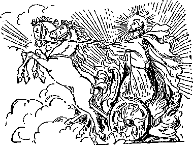1:1. The Revelation: Given in 96 A. D. due to be understood in the closing days of the Gospel age. (Rev. 1:10; Matt. 24:45; Hab. 2 :l-3; 1 Pet. 1:13) God gave unto him: Christ never claimed to be “equal in power.” (E39) “The Father loveth the Son and showeth him all things that himself doeth.” (Z.’99-46; John 5:20; 12:49; 17:7, S) Unto his saints: As he promised. (Z.’99-45) The things: The shifting scenes of church and state. Shortly come to pass: Beginning in St. John’s day. And he sent: With becoming dignity. (Heb. 1:3; 1 Tim. 6:16) And signified it: Told it in signs and symbols. (B203) By his angel: Representing the “angel” of Rev. 3:14. His servant John: Note the simplicity.—Z.T6-843; Rev. 19:10.
1:2. Who bare record: Previously, in John’s Gospel and epistles. Of the Word of God: The Logos. (E94) Of the testimony: The daily words and deeds. Of Jesus Christ: “The faithful and true witness.” Soever he saw: St. John records twenty-two events or teachings not mentioned by the other Evangelists.
1:3. Blessed is he: The Elijah class. That readeth: Correctly interprets the symbolisms. And they: All who ever receive the message. That hear: Even if they understand only in part. (A28) Of this prophecy: Which was an important aid to Luther in deciding that Papacy is the Antichrist. (A28) And keep: Keep the eyes upon, Greek. (Rev. 22:7) Time is at hand: The fulfillments began at once, in St. John’s day.
1:4. The seven churches: Epochs of the church as a whole. Which are in Asia: The early path of the sun. Before the Sun of Righteousness can illuminate the world its rays must first have passed through the church, the first to welcome
the new day. Grace be unto you: May favor, unmerited, be your portion. And peace: The Lord’s special legacy. (John 14:27) From him: Our glorified Lord and Head. (Rev. 1:8) Which is: Now selfexistent, like the Father. (John 5:26) And which was: The Logos, and subsequently the Redeemer. (John 1:3; Heb. 2:9) Which is to come: In glory and great power. (Isa. 42:4) The seven spirits: Lamps of fire, or eyes—wisdom. (Z.’O5-318; Zech. 3:9; 4:10; Rev. 4:5; 5:6) Before his throne: “Sent forth into all the earth.”
1:5. And: Kai, even; as in 1 Thes. 3 :11, Diaglott. The faithful witness: “Who before Pontius Pilate witnessed a good confession.” (1 Tim. 6:13; John 18:37; 19:19; Matt. 27:37) The first begotten: The first born. “The beginning of the creation.” (E151) Of the dead: “The first fruits,” “The first that should rise from the dead,” “The forerunner.” (N.'03-10-27; 1 Cor. 15: 20; Col. 1:18; Acts 26:23; 13:33, 34; Z.’16-343) And: Even. The Prince: The King elect, now ruling in their hearts. Kings of the earth: “The Kings of the East.” (Rev. 16:12) The Royal Priesthood. (Rev. 5:10; E4S7) That loveth us: Right now, in the present. By his own blood: See-1 Pet. 1:2; Acts 4:12; 20:38; Rev. 5:9; Rom. 5:9; Heb. 13:12; Matt. 20:28; 1 Tim. 2:6; Rev. 14:4; E458.
1:6. And hath made us: And will make us during the Millennial age. (Z.’07-2) A kingdom, priests: The work of a priest is that of intervention and instruction in righteousness, and logically implies subjects and a future work of salvation. (Z.’79-7-5; 1 Pet. 2:9; Rev. 5:10; 20 :6; 22 :5) God and his Father: “Unto the God and Father of himself.” (Diaglott; Rom. 15:6; 2 Cor. 1:3; Eph. 1:3) Glory and dominion: “He shall have dominion also from sea to sea.” For ever and ever: Literally “for the ages of the ages.” The Millennium and subsequent ages are the ages of the ages.
1:7. Come with clouds: The clouds of the time of trouble. (B138; Z.’16-344; Matt. 24:30) Shall see him: Horao, discern him; recognize his presence, power and authority. (B153) Which pierced him: The Jewish people. (Zech. 12:10) Wail because of him: Instead of being converted when he comes. (A90) Even so, Amen: We cannot stop the tears of disappointment and, later, of repentance.
1:8. I am the Alpha: Alpha is the first letter of the Greek alphabet. Am also the Omega: Omega is the last letter. And the ending: Of the direct creation of God. Saith the Lord: But not the clergy. The Almighty: “All power is given unto me in heaven and on earth.” Christ has been all-mighty only since resurrection.—Z.’93-115.
1:9. I John: Typifying in some degree the last living members of the little flock. “If I w’ill that he tarry till I come, -what is that to thee?” (Z.’05-167) Am your brother: He does not refer to himself as His Worship, the Right Reverend Saint John, Doctor of Divinity.” (Z.’01-187) In tribulation: Sharer of the sufferings of Christ’s Body. (Z.’01-187; Matt. 20:23) And in the kingdom: Now in affliction and later in glory. (Matt. 11:12; Dan. 7:27) Patience in Jesus: What St. John cheerfully endured was endured by Jesus. (Acts 9:5; 2 Cor. 4:10) Was in the isle: In banishment on the isle. (Z.’05-167) Perhaps working as a convict in its marble quarries. Probably symbolizing the ostracism, complete isolation and imprisonment of the church. (Z.’05-168) That is called Patmos: An almost inaccessible, rocky, barren isle. (Z.’16-343) For the Word of God: Because of fidelity to it. (Z.’01-187) Testimony of Jesus: In St. John’s Gospel and epistles.
1:10. In the spirit: In a trance. (Matt. 17:9; Dan. 7 :1; Acts 10:10) On the Lord’s day: The day of his resurrection, our Sunday. (Z.’94-348) The first day of the week, typifying the Millennial age. the day of Christ. (Z.’05-168) We today are living in the early dawn of this day. (Z.’16-343) Behind me: Typifying that the message which reveals to us the wonderful things of the divine character and plan is behind us, in God’s Word. (Z.’05-168) Some features of the Revelation went back to the time of our Lord’s earthly ministry.
1:11. The seven churches: The number seven representing completeness, and the order representing different epochs in the history of the church. Colosse (Col. 1:2), Miletus (Acts 20:17) and Hierapolis (Col. 4:13) were churches in Asia, not here mentioned. The Asia mentioned is the westernmost province of Asia Minor. Unto Ephesus: The apostolic age of the church. And unto Smyrna: The church during the period of persecution by pagan Rome. And unto Pergamos: The church during the period of the rise of Antichrist. And unto Thyatira: The church during the dark ages, the period of Antichrist’s glory, and persecution by papal Rome. And unto Sardis: The church in the dawn of the Reformation. Unto Philadelphia: The church in the period of reformation by sects. And unto Laodicea: The church in the time of the Lord’s second presence.
1:12. And I turned: Typifying the way in which we turn and look toward the past to see the fulfillment of the various features of the divine plan, and to hear and understand the message given to his people by the risen Lord. (Z.’05-168) Seven golden candlesticks: Typifying the Lord’s nominal people of this Gospel age, including his members. Typifying the seven stages of development of the one true church; the whole typified by the golden candlestick in the “Holy.”—T115, 116; Rev. 1:20; Zech. 4:2; Matt. 5:14-16.
1:13. And in the midst: Caring for them, trimming the wicks, seeing to the supply of oil, etc., representing the Lord’s directing and protecting care over all the Interests of his church throughout the age. (Z.’05-168; Matt. 28:20) “The union, the relationship between them, being supplied by our Redeemer, the antitypical High Priest.” The son of man: Like a son of man, like s. priest, as implied by the clothes described. Down to the foot: After the death of the apostles the body of truth was almost completely vailed throughout the centuries intervening until now. (Z.’16-344) About the breast: Representing that the early church was favored with the light of the true Gospel for a considerable time. A golden girdle: Symbol of servitude on the divine plane.—TSO; Rev. 15:6; Luke 12: 37; 22:27.
1:14. As white as snow: Representing splendor and purity. (Z.’05-169) Suggestive of venerableness, experience, knowledge. (Z.’01-188; Matt. 17:2) And his eyes: Wisdom, discernment. (B305) As a flame of fire: Representing omniscience.—Z.’16-344; Rev. 19:12.
1:15. And his feet: Representing the living members of the body of Christ all down through the age. (Ezek. 1:7) Like unto fine brass: Refined copper. The Lord desires that those who would carry along the work of the body, financially or otherwise, shall in their contact with the world be refined, purified, clean. “Be ye clean, that bear the vessels of the Lord.” (Z.’Ol-188) In a furnace: Representing the fiery trials of the saints. “In the end of the age, the feet members of the body of Christ will be illuminated by the truth and will shine forth as polished brass.” (Z.’16-344) Of many waters: Representing that the Lord would speak to his church through the many languages of the various peoples, nations and tongues whom he would use as his messengers.—Z.’01-188; Rev. 19:6.
1:16. In his right hand: Ender his guidance, protection and care. (Jer. 22:24) Seven stars: Special messengers in the church throughout the entire period of the Gospel age. (Z.’16-345; Re.v. 1:20) Two-edged sword: The Word of God, cutting against sin in every direction, as much when found in his most earnest followers as when found elsewhere. (Eph. 6:17; Heb. 4:12; Rev. 2:12, 16; 19:15, 21; Isa. 11:4) Shineth as the sun: “And his face was as it were the sun.”—Rev. 10:1; Acts 26:13.
1:17. Fell at his feet: When we once get a glimpse of the glories of the character of him with whom we have to do, we fall before him, humbled to the dust, realizing that we are unworthy of his favor. (Dan. 10:4-ll; Acts 9:3-9; Ezek. 1:28; Z.T6-344) Hand upon me: Touched with a feeling of our infirmities. (Z.’16-345.) First and the last: Next to the Father in everything pertaining to the affairs of the universe.—Col. 1:15; John 1:1-3; 1 Cor. 8:6.
1:18. I am he that liveth: He does not say, “I am he that always lived and was never dead.” (Z.’01-122) And was dead: “He poured out his soul unto death,” made “his soul an offering for sin.” (Z.’01-189) Alive for evermore: “Death hath no more dominion over him.” (Z.T6-345; Rom. 6: 9) The keys’: The power to unlock and release the 20.000,000.000 prisoners of hope therein contained. (E397; H22; T115) Of death: In order that those who have not yet gone into the tomb may all be ultimately delivered. (Rom. 8:21; Z.’16-345) And of hell: Hades, oblivion, not torment.
1:19. Thou hast seen: John was personally familiar -with the first epoch, then already in the past. (Rev. 2:1-7) The things which are: John was writing in the second epoch, already in its persecution era. (Rev. 2:8-11) And the things: The five remaining epochs of the church.
1:20. The mystery: Every true reformer must be a man of mystery to his own generation. In my right hand: Small wonder that these great reformers seemed to have almost charmed lives! Holden candlesticks: The nominal, rather than the true church. (Z.’16-344, 345) The seven stars: “The star-light is the heavenly light, or instruction. The lamp-light is the earthly light, representing obedience, etc.” Are the angels: Messengers, representatives. (Z.’05-248) The title is borrowed from the Jewish synagogue, in which the angel, or messenger, arranged the meetings for worship. (Mal. 2:7; Hag. 1:13) The seven churches: The Master found but few good works, shining out from earthly representatives in many or these epochs.—Z.’16-344; Rev. 1:12; Zech. 4:2.
2:1. By the angel: St. Paul. A Hebrew of the Hebrews (Phil. 3:5), a Roman citizen (Acts 22:25-29), highly educated (Acts -- * ~ presumably a member of
22:2, 3; 21:37), the Sanhedrin.
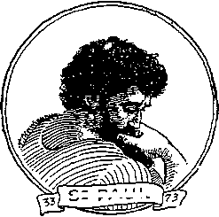Si PAUL
(Acts 7:58; 8:1; 26:10)
Chosen before
his birth (Gal. 1:15). supernat-urally inducted into Christ (Acts 9 :l-22) to take the place of Judas (Psa. 109:8; Acts 1:20). privately instructed in the Gospel (Gal. 1:11, 12, 17), specially commissioned (Gal. 2:1, 2; 2:2), acknowledged by St. Peter (2 Pet. 3:15, 16), carried the Gospel into Europe (Acts 16:9), supported himself (Acts 20:3235), suffered almost unbelievable hardships (2 Cor. 11:24-28). Church in Ephesus: Pentecost in the spring of A. D. 33, to the spring of A. D. 73. Write: St. Paul wrote a third of the New Testament. Walketh in the midst: Supervising his church.—F. 401; Rev. 1:13; Lev. 24:2-4.
2:2. I know thy works: The early Christians “took joyfully the spoiling of their goods” (Heb. 10:34); in “great trial of affliction” they abounded in joy, and in “deep poverty” were liberal “beyond their power.” (2 Cor. 8:2. 3) They were living epistles, “known and read of all men.” (2 Cor. 3:2, 3) And thy labor: The early Christians traversed the seas and lands of the known world, that they might tell the good news of the coming Kingdom. (2 Cor. 11:24-27) And thy patience: Hupomonee. Them which are evil: (2 Cor. 7:11; 2:6-8, Diaglott) And thou hast tried: Made experiment of. Greek implies.
Apostles and are not: But are false teachers, vainly aspiring to be considered of equal authority with the twelve. (D594) Found them liars: “False apostles, deceitful workers, transforming themselves into the apostles of Christ” in Corinth (2 Cor. 11:12-15): “Hymenaeus and Alexander” (1 Tim. 1:20); “Philetus” (2 Tim. 2:17); those who would “pervert the Gospel of Christ” in Galatia (Gal. 1:7); “Phygellus and Her-mogenes.”—2 Tim. 1:15; Acts 20:28-30; 15:1, 2; 8:9-24; Rev. 2:6.
2:3. Hast constancy: Hupomonee, perseverance, cheerful endurance. And all afflictions: “As concerning this sect, we know that everywhere it is spoken against.’* (Acts 28:22) Fainted: In due time we shall reap, if w’e faint not.—Gal. 6:9.
2:4. Against thee: The Lord’s nominal people of the apostolic age. Left thy first love: “I marvel that ye are so soon removed.”—Gal. 1:6.
2:5. Remember therefore: “Call to remembrance the former days, in which ye endured a great fight of afflictions.” (Heb. 10:32, 33) Do the first works: “Cast not away therefore your confidence, which hath great recompense of reward.” (Heb. 10:35) Except thou repent: The nominal church was in grave danger of being disowmed and rejected.
2:6. Nicolaitanes: “Conquerors of the people”—the clergy. (Rev. 2:15) Which I also hate: When the Lord’s people hate the idea of a class that seeks to be “lords over God’s heritage” (1 Pet. 5:2, 3), they hate something that the Lord hates.
2:7. He that hath an ear: To receive and understand the voice of God through his Word. (Matthew 11:15; 13:9, 43; Rev. 13:9) What the Spirit saith: “If they have persecuted me, they will also persecute you; if they have kept [observed, “heard”] my saying, they will keep yours also.” (John 15:20) Him that overcometh: See 1 John 2:13, 14. The tree of life: The grove or woods or orchard, including the tree of knowledge, the disobedient eating of which brought death on our race. (Z.’Ol-198, 216) The paradise of God: The glorious estate of the future.—D648, F669.
2:8. And by the angel: St. John himself. The one whom Jesus specially loved (John 13:23; 20:2; 21:7, 20); to him Jesus committed his choicest earthly possession. (John 19:26) Length of days was implied in the Lord’s statement, “If I will that he tarry till I come, what is that to thee?”
ST. JOHN (73-325)
(John 21:22) Church in Smyrna: Meaning “Bitter” (Myrrh and Marah are kindred words); referring to the second age of the church, covering the terrible pagan persecu-tions ending with the I®!' reign of Constantine
direct creation
(Z.’83-6-3) Write: St. John wrote more of the New Testament than any other writer except St. Paul. First and the Last: The only of the Father. (Rev. 1:11, 17; 3:14; Col. 1:15; 1 Cor. 8:6; John 1:1-3, Diaglott; Z.T6-346) And is alive: In itself a message of comfort and hope to the suffering martyrs.—Z.’82-5-5.
2:9. I know thy works: “Some of the most sublime pictures of Christian endurance that the world has ever seen were enacted during the Smyrna period of the church.” (Z.T6-346) And poverty: As respects the things which are seen. But thou art rich: As respects the things that are not seen. (Z.’82-5-5; Prov. 10:22; Luke 12:21; 1 Tim. 6:18; James 2:5) Say they are Jews: Spiritual Israelites. (Z.’99-68: Rom. 9:6, 7) Synagogue of Satan: Blinded by the god (ruler) of the present evil world (condition) who puts evil before their minds as good, and darkness for light.—2 Cor. 4:4; Eph. 6:12; Isa. 5:20.
2:10. Thou shalt suffer: Edicts were published in all places against the Christians, who were exposed without protection to the common rage. (Matt. 10:22) Behold the devil: Rome, because of its bloody persecutions, certainly has been the most devilish of all governments. (A258) Into prison: Restrain your liberties and opportunities for service. Ye may be tried: “Those who have read the history of this period can understand the depths of these words.” (Z.’16-340; Jas. 1:2, 3; 1 Pet. 1:6, 7) Tribulation ten days: Referring to the last and most severe persecution under the Roman emperors, that in the reign of Diocletian, A. D. 303-313. (Z.’83-6-3) Be thou faithful: Never neglecting his work to strive for the transient joys and prizes which the world offers. (C225) Unto death: “Ye shall all die like men.” (F444) It is not in this life that the Lord’s saints reign with him in his Kingdom. (A284) A crown of life: “The crown of life which the Lord hath promised to them that love him.” “Henceforth there is laid up for me a crown of righteousness.” “When the Chief Shepherd shall appear ye shall receive a crown of glory that fadeth not away.” Immortality. (Z.’03-190) “Take heed that no man take thy crown.”—E498; Jas. 1:12; 1 Pet. 5:4; Rev. 3:11; 2 Tim. 4:8; Isa. 62:3; Phil. 3:14.
2:11. He that overcometh: The overcomer of this Gospel age only. Not be hurt of: Not be injured in consequence of The second death: The death of him who lays down his life as a sacrifice with Christ may from one point of view be counted as his second and final death as a man. But this death of consecration is not to be confounded with the second death penalty upon, the Incorrigible.—Z.’84-8-3.
2:12. And by the angel: Arius. The gist, of the question to be settled by the Council of Nice lay in the argument of Arius: “The Father is a father; the Son is a son; therefore the Father must have existed before the Son; therefore once the Son was not; therefore he was made, like all creatures, of a substance that had not previously existed.” The creed, as finally adopted, condemned Arius and fixed the doctrine of the trinity as it has been held in the church to this day. From the time the Nicene Creed was promulgated and accepted, A. D. 325, there was practically no more Bible study for over twelve centuries.
ARIUS (325-1160)
Church, in Pergamos: Meaning “earthly elevation,” referring to the period in which the papal system had its rise. (Z.’83-6-3) Write: Arius’ writings were destroyed by Constantine. Sword with two edges: How the sharp sword, God’s Word, wielded by Arius before the Emperor and his brother elders at the Nicene Council, must have cut some of them to the heart when they saw the gentle and aged man (Arius was old at the time the controversy arose) banished into the Balkan mountains, one of the most inhospitable places in the world.—Isa. 11:4; 49:2; Hos. 6:5; Eph. 6:17; 2 Thes. 2:8.
2:13. Where Satan’s seat is: The word seat is rendered throne in Lu. 1:32, and refers to Satan’s “hellish parody of the heavenly kingdom.” Antipas: Anti, against, papas, the pope—one who protests against the pope. (Z.’83-6-3) Where Satan dwelleth: Read the lives of Popes Gregory L Honorius I, Agathon, Nicholas I, John VIII, Stephen VII, Christopher, Sergius III, John X, Leo VI, John XI, John XII, Benedict VI, Benedict VII, John XIV, Gregory V, and Alexander VI, in any encyclopedia.
2:14. Have a few things: Against the nominal church of the Pergamos epoch. Doctrine of Balaam: Balaam means the same as “Nicolaitanes” (conquerors of the people), and refers to the money-loving, powea-loving clergy. Read the lives of Popes John XX, Benedict IX, Gregory VI, and Lucien II. Who taught Balac: “Some of the leading wives and daughters of the Midianites attracted some of the leading men of Israel to adultery, and to idol worship and orgies.” (Z.’13-297; Num. 24:14; 25:1; 31:16; 2 Pet. 2:15; Jude 11; 1 Cor. 10:8) To eat: Appropriate to themselves as truths. Sacrificed unto idols: Doctrines twisted, distorted and mutilated to make them agree with creed-idols. Commit fornication: Symbolical of union of church and state.
2:15. The Nicolaitanes: Conquerors of the people. The theory of lordship or headship in the church.—1 Pet. 5:3.
2:16. Repent; or else: Ere you reach the earthly heights to which you aspire. Fight against them: The unfaithful and unrepentent church nominal. Sword of my mouth: With the Scriptures, in the hands of Peter Waldo.—2 Thes. 2:8; Heb. 4:12.
2:17. He that hath an ear: “There’s just one here, one there.” The hidden manna: Immortality, typified by the golden pot of manna in the ark of the covenant. (T122, 123; Exod. 16:33, 34; Heb. 9:4; John 6:49, 50) A white stone: The seal of the holy Spirit in the heart. (E269) “In ancient times the Greeks and the Romans had a custom of noting and perpetuating friendship by means of a white stone.” (Z.’12-315) A new name written: Signifying a new relationship to Jehovah. (Gen. 17:5, 15; 32:28) No man knoweth: “The natural man receiveth not the things of the spirit of God, for they are foolishness unto him; neither can he know them.”—Z.’95-133.
2:18. And by the angel: Peter Waldo. Church in Thyatira: Meaning “The sweet perfume of a sacrifice.” Referring to the period in which the true church was enduring hardships in the wilderness while the Roman Catholic church was revelling with her royal paramours. Write: The first translation of the Bible into a modern language—French—was the work of Waldo. A flame of fire: To watch over his faithful ones as they wandered through the dark valleys or hid in the darker caves of earth. Are like fine brass: To walk by the side of his church as she sought the rugged mountains or wandered footsore to plant the seeds of truth.—Z.’83-6-3.
2:19. I know thy works: The Lord remembers that Peter Waldo was the first to into a modern language. And love: The Lord remembers that Peter Waldo literally “sold all that he had and gave to the [Lord’s] poor.” More than the first: The followers of Peter Waldo have given a larger witness by their sufferings (their “last works”) than they did by the first works, the translation of the Gospel into French I Joined with “His Holiness” in his relentless persecution of the Waldenses was Dominic, the father of the Inquisition.
translate his Word
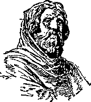WALDO (1160-1378)
2:20. Much against thee: The fourth epoch of the church nominal. That woman Jezebel: That apostate church, Roman Catholicism. (B256) Calleth herself: Heautou, as in “Shall not speak of himself." (E185) A prophetess: Claims to be an infallible teacher, but really has no right to teach at all—“I suffer not a woman [a church] to teach, nor to usurp authority over the man [Christ].” (1 Tim. 2:12; 1 Cor. 14:34;-F270) Jezebel was a prophetess of Baal. (1 Ki. 16:31-33; 21:25) To commit fornication: Union of church and state. (Rev. 2:14; 2 Ki. 9:22; 1 Cor. 14:34) Sacrificed unto idols: Reverence the creedidols set up by the ecumenical councils.
2:21. I gave her space: Chronos, a “time,” 360 years. The prophetic “time, times and a half a time,” or three and a half times, or three and a half years, or forty and two months of the Scriptures, or
1260 days, represent 1260 years. A single chronos or “time,” therefore, represents 360 years. To repent: Of her unfaithfulness to the Lord. Will not repent: The 360 years from Waldo’s message in 1160 ended on the 15th of June, 1520. Forty-one propositions, extracted out of Luther’s works, were condemned as heretical, scandalous, and offensive to pious ears. All persons were forbidden to read his writings, upon pain of excommunication; he himself, if he did not within sixty days publicly recant his errors and burn his books, was pronounced an obstinate heretic, excommunicated and delivered to Satan. With the excommunication of Luther, “the fat was in the fire;” and it was useless for the Roman Catholic church to try to stem the tide of the Reformation. Her period for repentance had ended.
2:22. Cast her into a bed: There where she sinned she shall suffer. And them: All the powers that receive her legates. Into great tribulation: They are getting some now, and will get more soon. Repent of her deeds: This teaches that the present situation in Europe is the direct result of the Roman Catholic church teachings.
2:23. Her children: Daughters, the Protestant sects. (Z.’83-6-3) With death: “They shall be as though they had not been.” (Obad. 16) Churches shall know: When their secrets are laid bare by the unfolding of the deep things of God’s Word. Reins and hearts: In olden times the mind was supposed to be located in the reins (kidneys); and the prophecy assumes the same position. Thus David says, “My reins also instruct me in the night seasons;” “In the night his song shall be with me.” (Psa. 16:7; 42:8) “My reins within me are consumed with earnest desire for that day.” (Job 19:27, margin) The metaphor is appropriate to the theme. (Psa. 7:9; Jer. 11:20; 17:10; 20:12) According to your works: The light of truth blazes most fiercely against the systems whose offenses have been greatest.
2:24. Rest in Thyatira: Waldenses and others outside of the papal system. This doctrine: Spiritual fornication, mixture of church and state. Have not known: Comprehended, realized. The depths of Satan: Rome, pagan and papal. As they speak: “So to say,” i.e., “Satan” is a name applicable to Rome, as describing its characteristics. (Rev. 2:10) None other burden: The Lord requires of his people only obedience to the light due.—1 John 1:7.
2 :25. Hold fast till I come: Some of the light which shone upon the Waldensians has never been entirely extinguished.
2:26. He that overcometh: Effectually resists efforts to entice him into disloyalty to the Lord. My works unto the end: Continues in the faith (John 6:29; 1 John 3:23), despite the unions of church and state. Christ’s works are opposite to Jezebel’s. (Rev. 2:22) Power of the nations: The sacrificed Christ gets the very prize for which Satan aspired.-—Isa. 14:13, 14; 1 Cor. 6:2, 3; Rev. 3:21; 5:10; Psa. 149:5-9.
2:27. With a rod of iron: God’s kingdom will be established by force. (D429, 518) Outward obedience will be compulsory. (D636) Wilful opponents of righteousness will be destroyed. (D643) “Judgment will I lay to the line and righteousness to the plummet.” (A303, C369) Shall they: The Gentile governments, empires, nations. (A256, B77, 100) Broken to shivers:- Have their dominion destroyed, preparatory to the establishment of the kingdom of righteousness. (D12, 296) Received of my Father: The Father (Justice) decrees their unworthiness to continue longer. Their iniquity is come tc the full.—Rev. 2:21; Gen. 15:13-16.
2:28. The Morning Star: “I am the bright and morning star.”—Rev. 15:3; 22: 16; Matt. 13:43.
2:29. He that hath an ear: An ear attuned to the Harp Divine.
3:1. And by the angel: John Wycliffe. Church in Sardis: Meaning “That which remains.” Referring to a brief period just before the Reformation. (Z.’83-6-4) Write: Wycliffe wrote the first translation of the
Bible into English. Spirits of God: The seven lamps of fire, or seven eyes sent
forth into all the earth, i.e., perfect knowl-
WYCLIFFE
(1378-1518)
edge. (Rev. 1:4; 4:5; 5:6) The seven stars: How each of the Lord’s messengers was kept I St. Paul had (supposedly) eight years of liberty after his first imprisonment, planted the Gospel in Spain and revisited the scenes of earlier labors; St. John is said to have been thrown into a caldron of boiling oil, but escaped unharmed and died of old age; Arius died a natural death; as did Peter Waldo, John Wycliffe, Martin Luther and Charles T. Russell, although all had reason to expect martyrdom at the hands of ecclesiasticism. That thou livest: Many who admired Wycliffe were not real Christians. And art dead: Spiritually. (Luke 9:60) Ready to die: Many among Wycliffe’s admirers lost faith and love, and to that degree died, while others had some spiritual life. These the Lord desired to awaken, to strengthen, to encourage.—Eph. 5:14.
3:2. I have not, etc.: The Revised Version translates the remainder of this verse, “I have found no works of thine fulfilled before my God.”—Z.’83-6-4.
3:3. Thou hast received: Received the entire Word in the English tongue. And heard: Wycliffe was the author of more than 200 works, chiefly tracts on the Ransom. And reform: Had Wycliffe’s labors been properly appreciated, the Reformation would have been set forward 150 years. Shalt not repent: Change your course of conduct. As a thief: Seven times our Lord’s second coming is described as being thief-like, stealthy. (1 Thes. 5:2; Matt. 24; 43; 2 Pet. 3:10) Thou shalt not know: “Failing to realize the fact that spiritual bodies cannot be seen by human eyes without a miracle, some cannot understand how he can be present while all things continue as they were since the beginning of creation.’ (2 Pet. 3 :3, 4) Thus they are unable to understand ‘the signs of the times’ revealing his return.”—Z.’16-347.
3:4. Have not defiled: As has the great company. (Z.’97-161) With me in white: Fully covered by the robe of Christ’s righteousness. For they are worthy: None who trust in sacrifices of the Mass or in other sacrifices than that of Calvary, can ever be worthy in God's sight.—Matt. 10:37.
3:5. Overcometh thus: The test, apparently, was on the question of transub-stantiation. In "white raiment: “The pictures given of the heavenly Father represent him as clothed (Psa. 104:2); and the pictures of our Lord represent him as clothed. The angels who appeared at the time of our Lord’s resurrection are represented as clothed in "white. The glorified church is represented, not as taking off the robe of righteousness, but continuing to walk in white raiment; not as now, in a robe of reckoned righteousness, but of actual righteousness.” (Z.’14-ll; Rev. 19:8) Blot out his name: The names of all those who have made with the Lord “a covenant by sacrifice.” (Z.’15-119; Rev. 13:8; Psa. 69:28; Dan. 12 :1; Phil. 4 :3; Lu. 10:20) The book of life: The number of the elect. (E328) “Which is written in heaven.” (C222) Signifying friendship, love and blessing. God keeps a permanent record of his friends but no record of his enemies. (N.’04-3-13) Before his angels: But he will be ashamed of any who are ashamed of him or of his words.—Z.’15-119; Luke 9:26; 12:8, 9.
3:6. That hath an ear: A spiritual ear. Let him hear: “Blessed are the people that know the joyful sound.”—Psa. 89:15.
3 :7. And by the angel: Martin Luther. In Philadelphia: “Philadelphia means brotherly love. This stage of the church’s history began at the Reformation; and there are many still living who possess the characteristics described.” (Z.’16-347)
Write: Luther wrote
LUTHER (1518-1874)
the first translation of the Bible into German. He that is true: The direct reference is to Christ (1 John 5:20): but characteristic of Luther was his great love of truth. He that is holy: See Mark 1: 24. Luther’s special message was “justification by faith” — real holiness. The key of David: “All power in heaven and earth.”
(Matt. 28:18; Luke 1:32) Luther’s theses were antagonistic to the system actually ruling all over the world. And that openeth: See Luke 24:32. No man shall shut: “No doubt all the powers of Satan were exerted to close the door then opened; but ‘he that is true’ had said, ‘which no man can shut.’” (Z.’16-347; Isa. 22:22) And shutteth: The door of opportunity for the Roman Catholic Church to repent swung shut the day Luther was excommunicated.—Rev. 2:21.
3:8. I know thy works: A striking feature of Luther’s character was his promptness to do whatever he saw to be the Lord's will. An open door: See 1 Cor. 16:9; Acts 14:27. No man can shut: “While the Roman pontiff thought everything safe and settled, and all pious and good men were nearly in despair of the religious reformation, so earnestly desired, a certain obscure and inconsiderable monk in Saxony, a province of Germany, suddenly opposed himself single-handed with incredible resolution to the power of Rome. This was Martin Luther.” A little strength:
“They knew that they had the truth, and they fully trusted the Giver.” (Z.’16-347) Kept my Word: “Whoso keepeth his Word, in him verily is the love of God perfected.” (1 John 2:5) Denied my name: “If we deny him, he also will deny us.”—2 Tim.2:12.
3:9. Have made them: The opponents of the reformers were already of the synagogue of Satan. (Rev. 2:13) Say they are Jews: Spiritual Israelites. (Z.’99-68) But do lie: Papacy, one of the two systems of rulership (imperial power being the other), is congenitally “spotted like a leopard,” as far as the truth is concerned. (Dan. 11:27; Rev. 13:2) Make them to come: “All nations whom thou hast made shall come.” (Psa. 86:9) Before thy feet: “The sons also of them that afflicted thee shall come bending unto thee; and all that despised thee shall bow themselves down at the soles of thy feet.” (Isa. 60:14; 49: 23) Thou shalt know: See Eph. 2:7.
3:10. On constancy: Hupontonee. cheerful, constant endurance. (Z.’01-115) My patience-enjoining word. (Matt. 10:22: Lu. 8:15) I also will keep thee: We think possibly the Lord meant that some of the church of that epoch would live over into the present period, and that they would not be subjected to the special trials of this hour. (Z.’15-200) Hour of temptation: The special trials of the harvest time, due to the prevalence of evolution theories. (Z.’01-205) The same conditions prevail today amongst Bible students which the Apostle pointed out to the elders of the church of Ephesus. (Acts 20:28-32; Z.’16-328) Upon all the world: This temptation to headiness and strife is spreading gradually in every direction. (Z.’16-327; Rev. 7:1-3; 16:14; Matt. 24:21) Upon the earth: All adherents of Satan’s empire. (Z.’16-327; Rev. 6:10; 8:13; 11:10; 13:8, 14) I come quickly: To Smyrna (73-325 A. D.) and Pergamos (325-1160 A. D.) nothing was said about Christ’s second advent; to Thyatira (1160-1378) the message was, “Hold fast till I come;” to
Sardis (1378-1518) it was, “If therefore thou shalt not reform, I will come on thee as a thief;” to Philadelphia (1518-1874) it was, “Behold, I come quickly.” How evident that these messages to the churches are epochs drawing nearer and nearer to the climax of history, the fifth universal empire, now come at last I
3:11. Hold that fast: “Be thou faithful unto death and I will give thee a crown of life.” (E398) Which thou hast: The truths due and appropriate to the Philadelphia epoch. (Z.’15-199) Which continued loyalty to the truth will make forever yours. (F123, 165) That no man take: The crowns are limited, and there are some who will lose theirs to those more faithful. (C225, 363; F95; 1 Sam. 16: 1; Rev. 2:10) Thy crown: When once the body of Christ is complete there will be no additions: in the type, none could fill the office of high priest if he had a superfluous finger or toe, etc.—T127.
3:12. I make a pillar: “Ye also as lively stones are built up,” etc. (F125) “A part which cannot be removed while the structure exists.” (Z.’16-347; Gal. 2:9; 1 Kings 7:21, 22; Jer. 1:18; 1 Cor. 3:17; Eph. 2:1922) In the temple: The true Church, the Christ. (T70) Not go out: “During their trial state their names were cast out as evil.” (Z.’16-347) Will write upon him: Upon his forehead—intellect. (Rev. 14:1; 22:4) City of my God: “A city not forsaken.” (Isa. 62:12; Ezek. 48:35; Jer. 23: 6; 33:16) New Jerusalem: The Kingdom of God. (Rev. 21:2, 10, 24; A 295) Which cometh down: At first it will consist of only the bride of Christ. (A295; Heb. 12 :18-22) My new name: The name of the glorified Christ. (E45) “This is the name wherewith she shall be called. The Righteousness of Jehovah.”—Z.’07-105; T102; E45; Isa. 9:6; Jer. 23:6; 33:16; Rev. 2:17; 19:12.
3:13. He that hath an ear: “Having ears, hear ye not?” (Mark 8:18) Let him hear: “Let these sayings sink down into your ears.”—Luke 9:44.
RUSSELL (1874-1918)
3:14. And by the angel: Charles T. Russell. He took the place of Mr. Barbour, who became unfaithful and upon whom were fulfilled the prophecies of Matt. 24:4851 and Zech. 11:15-17. He was ordained by the only divine ordination and orthodox by the test of the infallible Word, as presented in 1 Cor. 3: 16, 17; Eph. 2:20; Gen. 28:14; Gal. 3:29; Rev. 15:5-8; 21:3; 3:14; Col. 1:15; John 1:3; Heb. 7:26; Phil. 2:9; John 1:12; 1 Pet. 1:3; 3:18; 2 Cor. 3:17; 1 Cor. 15: 8; Acts 26:13-15; Heb. 2:9; John 1:9; 1 Tim. 2:5, 6; 1 John 3:2; John 17:24; Rom. 8: Eph. 4:12; Matt. 24: 14; Rev. 1:6; 20:6; Acts 3:19-23; Isa. 35. Church in Laodicea: Meaning “Justice for the people.” (Z.’80-6-7) The last stage of the great nominal Gospel Church of wheat and tares, now present. (D41) Apparently due to end for the little flock in 1918 and for the great company three and one-half years later, as shown by the subjugation of Judea in A. D. 73 and the exemplification of the half-week principle in the covenant with Abraham, the last observance of a typical jubilee, the beginning of the times of the Gentiles, the death of' Christ, and the awakening of the sleeping saints. The three days fruitless search for Elijah seems to confirm this view. (2 Kings 2:17, 18) Write: Pastor Russell was the most prolific writer of Biblical truth that ever lived. The Amen: The same word translated “Verily” in the gospels and so often used by our Lord as a solemn prefix to some important announcement. (Z.’83-7-4) And true witness: Who testified, I and my Father are two. (John 8:17, 18: Rev. 1:5; 19:11) Thebeginning: “And the ending,” “The only begotten.” (Z.’94-12)
17; 2 Pet. 1:4;
“The first-born of all creation.”—E95; F18; Col. 1:15-18; Psa. 89:27.
3:15. I know thy works: So interestingly described in Isa. 26:16-18. (Z.’16-347) Art neither cold: As was Simon by contrast with the poor woman. (Luke 7:36-50) Nor hot: Full of loving zeal. (2 Tim. 3:5; Ezek. 5:6) Wert cold or hot: “Ephraim is a cake not turned.”—Hos. 7:8; Z.’83-3-5.
3:16. So then: In the spring of A. D. 1878, typified by the casting oft of nominal fleshly Israel in A. D. 33. (B235, 246)
Because thou: The nominal Christian church. Art lukewarm: Merely retaining the Bible in name, but neglecting it in fact. (C167) Refrain thy mouth: “If God spared not the natural branches, take heed lest he also spare not thee.” (C180) No longer recognize you as a mouthpiece, nor spokesmen in any degree.
3:17. Because thou: The nominal church in our day. (A287) I-am rich: In numbers and in prosperity. (Z.’01-56) I have all the spiritual light that exists in the world. “I have much goods laid up for many years;” “I sit a queen and am no widow and shall see no sorrow.” (Z.’83-7-4; Rev. 18:7; Hos. 12:8; 1 Cor. 4:8) “Return unto me and I will return unto you, saith the Lord of Hosts. But ye say, Wherein shall we return ?” (Z.’92-261) The mission of the Christ is to “preach the Gospel to the poor.” (Z.’00-55) Increased with goods: “Laodiceans count their numbers and their donations by millions.” (Z.’01-56) Need of nothing: “They will not own that they have departed from the right ways of the Lord.” (Mal. 3:7; Z.’92-261) That thou: Of all others, so the Greek indicates. Art wretched: “There are twelve murders in New England to one in London; in California seventy-five to one; in Nevada 245 to one.” (Z.’08-83) And miserable: If we could bring all the heathen up to the standard of our most civilized nation it would mean that God’s will would be less done the world over than it is now. And poor: Possessing
little of the truth and the spirit of the truth. (Z.’01-56) And blind: “Cannot see afar off,” cannot see the lengths and breadths and heights and depths of divine love, cannot see the high calling for the church or restitution for the poor world. (Z.’98-28) “The god of this world hath blinded the minds.” And naked: Stripped of the robe of Christ’s righteousness by the clergy, in the name of higher criticism and evolution. (Z.’01-56) A condition of affairs in Protestantism revealed at the World’s Congress of Religions.—D210.
3:18. I counsel thee: “Thou shalt guide me with thy counsel and afterward receive me into glory.” (Psa. 73:24) To buy of me: “At the cost of entire consecration, or sacrifice of all that we have, to Christ.” (Z.’96-44; Prov. 23:33; Matt. 13:44) Gold: The true heavenly riches, the divine nature. (D42) Tried in the fire: Freed from earth’s alloys by fiery trials. “Think it not strange concerning the fiery trial that is to try you.” How can the dross be eliminated without the crucible and the flame? (Z.’96-44) Mayest be rich: “That ye through his poverty might be rich.” (2 Cor. 8:9; Prov. 10:22; Lu. 12:21; 1 Tim. 6:18; Jas. 2:5; Rev. 2:9) White raiment: The robe of Christ’s imputed righteousness now so frequently discarded. (D42) Mayest be clothed: “Not having spot, or wrinkle or any such thing.” (Eph. 5:27) Of thy nakedness: “Blessed is he that watcheth and keepeth his garments, lest he walk naked and they see his shame.” (Rev. 16:15; Matt. 22:11-13; Isa. 47:3) Anoint thine eye: The eyes of the understanding. (D611) With eye-salve: The eye-salve of meekness, consecration and submission to the divine will. (B189, D42) That thou mayest see: See the beauty of the divine plan.—D611; 2 Cor. 4:4; Eph. 2:2; Psa. 13: 3; 19:8; John 9:6, 41.
3:19. As many as I love: As many as are at heart honest and loyal to God. (Z.’92-59) I rebuke: Reproach, disgrace, put to shame, dishonor. (Z.’83-7-4; Z.’96-44; Prov. 3:11, 12; Heb. 12:5-8; Job 5:17; Jas. 1:12) And chasten: Train or educate, like a child or youth. And repent: Avoid cultivating the ecclesiastical conscience. “It was this ecclesiastical conscience which crucified Jesus Christ. (Rt. Rev. Chas. D. Williams, Protestant Episcopal Bishop of Michigan.) ”■—Z.T5-339.
3:2O. Stand at the door: I am present, unseen. (Z.’83-3-5) Some of the Scriptures which, when understood in their connections and significance, prove that the Lord’s second advent occurred in the fall of 1874 are: Gen. 25:24; Exod. 4:3-9; Lev. 25:9; Num. 9:11; 15:38; 2 Kings 2:11; 2 Chron. 35:19; 36:21; Ezra 1:1; 6:15; 7:6-8; Neh. 2:1; Job 40:15-23; 41:1-34; Psa. 25:14; 50: 4, 5; Isa. 13:2; 18:1; 19:19; 28:8; 33:7; 40: 2; 56:10; Jer. 8:14; 16:18; 31:8; Ezek. 1:15; 2:3, 9; 3:15; 4:5, 6; 7:19; 8:3; 9:2; 14:21; 21:15, 31; 24:16; 33:22; Dan. 12:4, 12; Nah. 2:4; Hab. 2:1; Hag. 2:7; Zech. 9:12; Mal. 3:1-3; 4:6; Matt. 7:27; 13:30, 48; 20:8; 22: 11, 13; 24: 14-16, 21, 23, 28, 29; 25:5, 19; Mark 3:26; 21:25; Luke 18:8; Acts 2:19; 7:23, 30, 36; 1 Thes. 5:4; 2 Thes. 2:8; 1 Tim. 4:1; 2 Tim. 3:1-7; 4:3, 4; 1 Peter 3: 21; 2 Peter 3:3; Rev. 4; 6, 10; 10:7; 11:18; 14:10, 20; 15:3; 18:4. And knock: By oral or printed evidence that the time prophecies are fulfilled. The servants are not to know in advance, but are to know at the time of arrival, and that without seeing. (Z.04-123) This knocking began in 1875 and still continues. “And ye yourselves like unto men that wait for their Lord, that when he cometh and knocketh they may open unto him immediately.” (Z.’04-124) If any man: Not any church; the church nominal is not being fed. (Z.’83-3-5) Open the door: To joys we ne’er before knew! Come in to him: “We will come unto him, and make our abode with him.” (John 14:23) And will sup: Take the evening meal. (Lu. 12:37) With him: The Master himself is feasting on the same joys of the Father’s plan that delight our own hearts. And he with me: “This serving of the servants by the Master should be understood to be an individual work, and not merely a collective service and feast.”—Z.’04-124.
3:21. To him: Of the sanctuary class. (C190) That overcometh: That overcometh love of self, popularity, worldly prosperity, human theories and systems. (D268) Will I grant: If he prove faithful unto death. (T89) To sit with me: There can be no kingdom until the King comes. (A288) In my throne: My reign over the earth for the purpose of converting it. (A91, 223) The kingdom is not merely a work of grace in the heart. (A285) Even as I also: “As the Father hath appointed unto me a kingdom, so I appoint unto you a kingdom.” (E41) In his throne: Evidently the church will enter into this greatest honor at the close of the Millennial age.—F69.
3:22. That hath an ear: “Blessed are your ears, for they hear.” Let him hear: “For verily I say unto you, That many prophets and righteous men have desired to hear those things which ye hear, and have not heard them.” (Matt. 13:17) Unto the churches: Unto the seven epochs, ending respectively in A. D. 73, 325, 1160, 1378, 1518, 1874 and 1918.
4:1. After this: After this first panorama of the seven stages of the church had passed. Opened in heaven: It is only as the Lord, who holds the key, opens the door to the understanding of heavenly things, that we are able to comprehend them. (Matt. 3:16; Ezek. 1:1; Rev. 19:11) The first voice: See comments on Rev. 1: 1;7:2. Come up hither: “The seer now obtains a higher spiritual standpoint.” Things which must be: The divine plan for the permission of evil.
4:2. In the spirit: In a trance condition. (Acts 10:10; Rev. 1:10) Behold, a throne: The throne of the heavenly Father. (Isa. 6:1; Ezek. 1:26-28) Was set: Permanently established, as in Luke 2:34; Phil. 1:17. In heaven: “Whither the forerunner is for us entered, even Jesus.” (Heb. 6:20) And one: Jehovah, “the God and Father of our Lord Jesus Christ” (1 Pet. 1:3), the Author of the divine plan for the permission of evil, in the recreation of a perfect human race, and in the creation of a race of gods, sons of himself. (A124) Sat on the throne: Of the universe recognized as the Center of authority, wisdom, justice, love and power.—E57; Rev. 7:10; Dan. 7:9.
4:3. Like a jasper: Supposed to refer to the modern rare and beautiful green-tinted diamond. The diamond is the hardest substance known, excelling in brilliancy and beautiful play of prismatic colors. The crystals of which it is composed are bounded by eight equal equilateral triangles ; twenty-four angles in all, constituting a perfect double pyramid, set base to base. The jasper seems especially to illustrate his glory, perfection and prescience. A sardine stone: A favorite stone for the engraver’s art. The sardius seems especially to illustrate God’s love, his memory of his creatures, and his purpose of a resurrection for all smitten in Adam and redeemed in Christ. (Isa. 49:15, 16) A rainbow: The rainbow is the bow of promise for mankind, the peace of God. It is his plan. “He has the blessed satisfaction and peace of conscious moral perfection as well as inherent wisdom and power.” (Z.’95-153) About the throne: He will recognize nothing short of perfection in any creature, and makes Justice the foundation of his throne. (E481; Psa. 89:14 : 90:2: Ezek. 1:28) An emerald: Symbolizing freshness, vigor, power.—Z.’83-9-5.
4:4. About the throne: Encompassing it on all sides—always in mind—never out of sight. Four and twenty seats: Thronoi, thrones, places of highest exaltation—the twenty-four angles (viewpoints) of the diamond. (Rev. 4:3, 10) Elders sitting: Personifications of the testimonies of Enoch, Jacob, Moses, Samuel, Job, David, Solomon, Isaiah, Jeremiah, Ezekiel, Daniel, Hosea, Joel, Amos. Obadiah, Jonah, Micah, Nahum, Habakkuk, Zephaniah, Haggai. Zechariah, Malachi and John the Baptist. Not the prophets themselves are here referred to. They are not in heaven. (Dan. 12:2, 13; Acts 2:34; Heb. 11:40) In white raiment: All of these men considered themselves unworthy to be God’s mouthpieces. (Jer. 1:6; 1 Kings 3:7; Gen. 32:10; Matt. 3:14; Isa. 6:5; 2 Sam. 7:18; Exod. 3:11; 2 Tim. 2:19; Dan. 2:30) Crowns of gold: The glory of God—Love, God’s highest attribute.
4:5. Proceeded lightnings: It is remarkable that these lightning flashes are continually calling attention to the Word of God, to the Golden Rule. (Z.’T6-339; Rev. 8:5; 16:18) And voices: “As a result of God’s lightning flashes which are enlightening the world, there are ominous mutterings of dissatisfaction, unrest.” (Z.’T0-340) And thunderings: “We hear the thunder tones of judgment that ‘call the earth from the rising of the sun unto the going down thereof.’” (Z.’T6-340; Ex. 19:16; Psa. 50:1; Rev. 8:5; 11:19; 16:18) Spirits of God: Perfect knowledge.—Rev. 1:4; 3:1.
4:6. Before the throne: Throughout the universe. (Rev. 5:6) A sea of glass: “The troubled surface which Daniel and Isaiah beheld (Dan. 7:2; Isa. 57:20) became white seen before the throne of God, calm and clear; reflecting as from a mirror, every fulfillment of the divine purposes.” (Rev. 21:18, 21; Ex. 24:10) The sea (godless conditions about them) has been a means of purifying earth’s future priests. (1 Ki. 7:23-26. 38, 39) Like unto crystal: Indicating that nothing escapes God’s notice; all is transparent. (Matt. 6:6: Heb. 4:13; Ezek. 1:22; Z.’96-27) Midst of the throne: Woven into its very fabric. About the throne: Completely encircling and enveloping it. Were four beings: “Living ones” (Diaglott); the four immortal attributes of Justice. Power, Love and Wisdom. (Ezek. 1:5, 6) Before and behind: Seeing clearly everything that will ever occur in the future, and everything that has ever transpired in the past.—Ezek. 10:4, 12.
4:7. The first being: Justice was the attribute first manifested toward our sinful race. lake a lion: The characteristics of the lion illustrate this attribute: he kills only when hungry or attacked, and not for the mere pleasure of killing. (Ezek. 1:10; 10:14) The second being: Power, exhibited in the Flood. (Z.’95-153; Ezek. 1: 10) Take a calf: With the Hebrews the calf (young ox) was the emblem of power. (Deut. 9:16-21, 29) The third being: Love, exhibited in the Father’s sending his only-begotten Son to die that we might live. Tike a man: The embodiment of love. Think of all the pictures of comparative health and beauty of human form and feature that you have ever seen, and know that perfect humanity will be of still surpassing loveliness. (A191; Ezek. 1:5) The fourth being: Wisdom, as exhibited in the Father’s plan, now unfolded before our delighted gaze. He is thoroughly acquainted with all the intricate subtleties of physical, moral and intellectual law, so that no problem could arise, the results of which are not manifest to his mind. (1 John 1:5) Like a flying eagle: Of all known birds, the eagle flies the highest and with the greatest rapidity.—Isa. 55:9; Matt. 24:28; 2 Pet. 1:9; Isa. 33:16, 17; Psa. 103:6; Z.’88-116; Z.’95-153.
4:8. The four beings: Justice, Power, Love and Wisdom. Six wings about him: Six is a symbol of imperfection, and in the foregoing seems to refer to the six thousand years of the permission of evil. For the first two thousand years, God's face was almost entirely hidden from man. For the next two thousand years it was not apparent how his footstool should ever be made glorious. (Isa. 60:13; 66:1) But since then, for two thousand years his Love has been manifest to all. The wings operate in pairs. Full of eyes within: Nothing has transpired, or will ever transpire, without God’s knowledge. (Ezek. 10: 12) They have no rest: Not eternal idleness, but eternal work in the interest of others will be our reward. (John 5:17; 9: 4; Eph. 2:10; Phil. 2:13; 3:21; 2 Cor. 6:1; 1 Cor. 3:9) .Saying-, Holy, holy holy: The Sinaitic MS. repeats the word “holy” eight times. (See Rev. 4:3) In the seventh thousand-year day God will bring all things to perfection through the Christ, yet it is the eighth day that marks the complete separation from the old order of things. (Luke 1:59; Phil. 3:5; Exod. 22:30; Lev. 23:36, 39; F51) Lord God Almighty: Jehovah. This scene is located in heaven, where even the Son himself is subject unto the Father. (1 Cor. 15 :28) Which was: The great First Cause. And is: The great “I AM.” And is to come: And evermore shall be.
4:9. When those beings: Justice, Power, Love and Wisdom. Give: Shall eternally continue to give, so the Greek indicates. Thanks to him: Their united testimony to the perfection of his character in all its attributes. Who liveth for ever: And will forever use those attributes in the blessing of all the universe.
4:10. The elders: The personifications of the messages of the twenty-four prophets. Fall down before him: Unitedly bear witness to his perfect ability to foretell the future. And worship him: Magnify his perfect Justice, Power, Love and Wisdom. And cast: Shall eternally continue to cast, so the Greek indicates. Saying: (1) Enoch: see Jude 14, 15: Acts 17:31: Isa. 26:9: Psa. 72:2-4, 12-14. (2) Jacob: see Gen. 49:10.
(3) Moses: see Gen. 1:28; 3:15: 12:3: 13:15; 17:8; 18:18; 22:18; 26:4; 28:14; 35:12: Lev. 1:5; 9:23; 16:15; 25:10; Deut. 18:15; 19; 30:15. (4) Samuel: see 1 Sam. 2:6; 10:17-24. (5) Job: see Job 14:13-15: 33:19-30:
40:15 to 41:34. (6) David: see Psa. 22:27: 30:5; 37:11; 45:5. 17; 46:10; 49:14; 65:5; 67:1-7; 68:30; 72:3, 4. 6, 16; 82:4; 85:10, 11; 86:9; 90:3; 93:1; 96:11-13; 98:4-9; 104:5. (7) Solomon: see Prov. 2:21; 11:31; Ecc. 1:4. (8) Isaiah: see Isa. 2:2-4; 9:7; 11:4-9; 11:10-16; 14:7; 19:22; 25:6-12; 26:9, 13, 14,
19; 28:17, 18; 29:17, 18; 32:3, 4, 14, 17, 18; 33:24 ; 35:1-10; 40:4; 41:18, 19; 42:7; 45:8, 18; 49:8, 13; 51:11; 52:7; 55:12, 13; 60:13, 18, 21; 62:10; 65:20-22; 66:18. (9) Jeremiah: see Jer. 3:17; 16:19; 23:4; 24:7; 31:16, 29, 34; 32:39, 40 ; 33:8, 9; 46:27; 48:47; 49:39; 50:4, 5. (10) Ezekiel: see Ezek. 11:19; 16: 53-55, 61-63; 18:2-4, 31, 32; 28:26; 34:2528; 36:26, 27, 29, 30, 35; 37:24 ; 39:29. (11) Daniel: see Dan. 2:44; 7:27. (12) Hosea: see Hos. 2:18, 21; 3:5; 6:2; 13:14. (13) Joel: see Joel 2:22, 32. (14) Amos: see Amos 9:11, 12, as explained in Acts 15:1418. (15) Obadiah: see Obad. 21. (16) Jonah: see Jonah 4:1-11. (17) Micah: see Micah 4:1-5, 8. (18) Nahum: see Nah. 2:3-6. (19) Habakkuk: see Hab. 2:14. (20) Zephaniah:
see Zeph. 2:11; 3:9, 13. (21) Haggai: see Hag. 2:7. (22) Zechariah: see Zech. 2:11; 3:10; 8:3, 8, 12, 15, 21, 22; 9:10, 17; 14 :9. 11, 20. (23) Malachi: see Mal. 1:11; 3:11; 4:2. (24) John the Baptist: see John 1:29; Matt. 11:9, 11.
4:11. Thou art worthy: Perfect in all the attributes of nobility of character. (Isa. 55:11; Mal. 3:6; Acts 15:18; E37) To receive glory: All the glory, Greek. Honor and power: Could the divine character ever be appreciated by intelligent, honest, just and loving hearts, if in any corner of the universe there were tortures of his creatures? Created all things: The all things, the universe, Greek. For thy pleasure: The pleasure of dispensing blessings and of exercising his glorious attributes. (A118) “I have created him for my glory.” Man’s true peace can be found only in harmony with his Creator.—Z.’95-167.
5:1. In the right hand: In his own power. Of him: Jehovah. Sat on the throne: Of the universe. A book: The divine plan. (E39; Z.’97-256; Z.T6-252; Ezek. 2:9, 10) Written in front: The writing in front is the fulfillment of everything prophesied on the outside. What could be only imperfectly deciphered until the hindering seal is broken is no mystery after the seal is broken, because the book or scroll or chart can be turned about and held to the light. (Isa. 34:16) On the back side: The writing on the outside is the promised redemption through the blood of Christ. (Z.’02-332) With seven seals: “The things that were sealed were not proper to be understood by our Redeemer until he had received the all-power, after his resurrection.”—Z.16-253.
5:2. A strong angel: Personification of the Law. Proclaiming: In types and shadows. .With a loud voice: From the fall of Adam onward. Who is worthy: Proved worthy. (E39) To open the book: To have committed to his care the execution of the divine plan. (Z.’97-256) Loose the seals: Carry out and make manifest grand designs of infinite love.—Z.’02-332.
5:3. No man in heaven; No angel. (1 Pet. 1:12) Nor in earth: “There is none righteous, no, not one.” (Rom. 3:10, 23) To look thereon: Representing the condition of things prior to the first advents— Z.’97-150; Mark 13:32.
5:4. And I wept much: “Because no one was worthy to be the divine executor.” (Z.’09-243) Because no man: No being in the universe. Was found worthy: See John 1:27; Matt. 8:8.
5:5. One of the elders: Jacob in his death-bed prophecy. (Z.’83-9-6) Behold, the Lion: “The Holy One, and the Just.” (Acts 3:14; 22:14) A late pope applied this title to himself. (B316) Of the tribe: From the tribe. (Heb. 7:14; B85) The root: Origin, source of life. (E151; Isa. 11:1; Rom. 15:12; Rev. 22:16) Hath prevailed: Hath overcome, so as to be accepted and declared worthy.—Z.’97-150.
5:6. Midst of the throne: “In the bosom of the Father.” (John 1:18) And of the four beings: “The express image of his person.” (Heb. 1:3) Midst of the elders: The central theme of all their prophecies. (Rev. 4:10) Stood a Lamb: See Isa. 53:7; John 1:29, 36; Acts 8:32; 1 Pet. 1:19. It had been slain: Even Christ could not know the particulars of the divine plan until he had demonstrated his faithfulness unto death. (Z.’06-39) Having seven horns: Perfect power. (Matt. 28:18; 1 Sam. 2:1, 10; Deut. 33:17; 1 Ki. 22:11) And seven eyes: Perfect wisdom.—Zech. 3:9; 4:10; Rev. 1:4; 3:1; 4:5; 2 Chron. 16:9; Col. 2:8; Jas. 3:17.
5:7. And he came: At the time of his resurrection from the dead. (Z.’97-256) And took the book: Received the authority to execute the divine plan. (Z.’97-256) If Jesus and his Father are a trinity, “one in person, equal in glory and power,” how is it that one has to come to the other for something, or how can he come to himself and take something he already has and give it to himself?
5:8. Taken the book: His worthiness to do so having been proven by his resurrection to the divine nature. The four beings: Justice, Power, Love and Wisdom. And elders: Messages of the prophets. (Rev. 4:10) Before the Lamb: Gave their joint homage and adoration to the Conqueror of sin and death. Each having a harp: Yielding the most exquisite harmony that ever fell on mortal ears. (Rev. 15:14; 5:8) And golden vials: Incense cups, “spoons,” similar to those used at the Golden Altar. (Ex. 25:29; 30:1-9) Full of odors: The sweet fragrance of patient hearts, precious in the Father’s memory, pleading for love and wisdom divine. (Psa. 141:2; Ex. 30: 34-38; Lev. 16:12, 13; Lu. 1:9, 10; Acts 10: 4) The prayers of saints: Every one of which, by the Father’s arrangement, has been made in the name of the One here honored.—John 16:23; Eph. 2:19.
5:9. Sung a new song: “This means that the divine plan as a whole was here made known to him.” (Z.’16-253; Psa. 40:3; Rev. 14:3) Thou art worthy: Worthy of “a name which is above every name.” (Phil. 2:9) To open the seals: Disclose the wonderful method by which the Father will develop the saviors of the world. (Obad. 21) For thou wast slain: “God wished him to sacrifice not only his will, but actually to lay down his human life.” (Z.’16-252) And hast redeemed: Agorazo, acquired at the forum. (E443; 1 Cor. 6:20; Gal. 3:13; Eph. 1:7; Col. 1:14; 1 Pet. 1:18, 19) Us: Oldest MS., with evident propriety, omits us, since the divine attributes and prophecies were not redeemed. (Z.’97-151) To God: In all the types of the Jewish dispensation, the offerings were presented to God. (E461) By thy blood: “The blood of Christ, who, through the eternal spirit, offered himself without spot to God.” (Heb. 9:13-15) Every kindred: “In thy Seed shall all the kindreds of the earth be blessed." (Acts 3:25) And tongue: “Every knee shall bow, every tongue shall swear.” (Isa. 45:23) And people: “The heavens declare his righteousness, and all the people see his glory.” (Psa. 97:6) And nation: “And in thy Seed shall all the nations of the earth be blessed.”—Gen. 26:4, 22:18; Rev. 14:6.
5:10. And hast made them: The saints, the royal priesthood. (D425, 618) Kingdom and priesthood: Whose experiences with and victory over sin will well fit and prepare them to be patient and helpful toward the poor world. (E456; 1 Pet. 2:5, 9; Rev. 1:6; 20:6) Typified by the Aaronic priesthood. (T26) The work of a priest is that of intervention and instruction in righteousness and logically implies subjects and a future work of salvation. (Z.’79-7-5) And they: The church. (Z.’83-9-6) Reign: “And shall reign with him a thousand years.” (C128) On: Epi, over.—Rev. 6:16.
5:11. And I beheld: John beheld this in vision and will behold it in reality. And I heard: John heard in the vision, and will hear in the reality. Many angels: Besides the angels, the great company are in this happy throng. The events to the end of the chapter have their fulfillment in the future. About the throne: “In the circuit of heaven” (Job 22:14), the circle of the universe. And the beings: Justice, Power, Love and Wisdom. And the elders: The prophecies. (Rev. 4:10) Number of them: “Whose number no man knoweth.” (Rev.
7:9) Times ten thousand: The number of the great company will apparently exceed one hundred millions.—T118,119; Dan. 7:10.
5:12. With a loud voice: The great company will be very enthusiastic workers on the other side of the vail. Worthy is the Lamb: Because of his fidelity to the Father and his law. (E134) Because of his humility and obedience unto death. (E411) To receive power: The great company class humbly realize that their faithfulness and zeal was not sufficient to warrant their own exaltation to power. And riches: They realize they did not lay up all the heavenly treasures they might have done, but hid their talents in earthly pursuits. And wisdom: They realize that they were unwise in seeking the praise of men and that the Christ company, though apparently fools for Christ’s sake, were really the wisest of the wise. And strength: They know that they used their own strength for the support and maintenance of institutions which really hindered rather than helped the bride to make herself ready. And honor: They know that, as a class, they sought and obtained the honor that cometh from men, but failed to seek properly the honor that cometh from God only. And glory: They know that they failed to meet the high conditions of selfsacrifice, and were therefore unworthy of the high reward. And blessing: They feel that the blessings which the Lord gave to them were thoughtlessly appropriated to themselves and their families, with hardly a serious thought about the needs of the Lord’s dear family; and that appropriately, the chiefest of all blessings, the privilege of extending God’s blessings to the needy world, should go to those who most earnestly “by patient perseverance in well doing (did) seek for glory, honor and immortality.” (Rom. 2:7) Thus they reverence the Lamb and his bride; for these are one.—Rev. 19:7.
5:13. And every creature: After the destruction of the incorrigible at the end of the Millennial age. Which is in heaven: “Let all the angels of God worship him.” (Heb. 1:6) And on the earth: All mankind. (1 Cor. 15:25) In the sea: Even their terminated existence will be to the praise of the One who died for them. All that are in them: “Of things in heaven, and things in earth.” (Phil. 2:10; Eph. 1:10; Col. 1:20) The blessing: The source of all their blessings. (Rom. 9:5) And honor: Of life on any plane. (1 Tim. 6:16) And glory: “One star differeth from another star in glory.” (1 Cor. 15:40. 41; Rom. 16:27; 1 Pet. 4:11; 5:11) Be': Be as-scribed to. For ever and ever: “For the ages of the ages,” Greek.
5:14. The four beings: Justice. Power, Love and Wisdom. Said Amen: Unitedly declare this to be the happy outcome. Elders worshipped: The prophecies plainly declare that neither men nor devils can in any wise thwart this perfect ending of the plan which began so strangely and still progresses—the perfection, through suffering, of the little flock, the great company and, indeed, the world of mankind itself.—Rev. 4:10.
6:1. And I saw: If we would comprehend what is revealed within the scroll we must be sincerely desirous of knowing the details of God’s plan in order to an earnest cooperation with it. (Z.’02-332) When the Lamb opened: “The Master declared that as the Father revealed them unto him, so would he reveal them unto us.” (Z.’16-252; Rev. 5:5-9) The seven seals: “Each seal as it was loosed permitted the scroll as a whole to open a little wider.” (Z.’97-257) And I heard: The roar of a lion. One of the four beings: Justice, typified by the lion. (Rev. 4:7) Come and see: Come and see Infinite Justice permitting one of the greatest acts of injusticed ever allowed.
6:2. And I saw: John beheld in vision the first strange and wonderful feature of the divine plan for the permission of evil as it related to epochs of the church beyond his own epoch—that of Smyrna. A white horse: The doctrines, teachings of the Lord and the apostles recognized as the one and only rule of faith and practice of God’s church. He that sat on him: The Bishop of Rome, the embryo pope. Had a bow: “They bend their tongues like their bow for lies.” (Jer. 9:3) And a crown: Great honor and authority in the church. Was given unto him: “Under the reign of Constantine (who murdered his own son in the same year in which he convened the Council of Nice) the opposition of the empire to Christianity gave way to favor.” (B290) And he conquered: Apparently, God forsook his church, having jeopardized all its interests by placing the poweer in the hands of a self-seeking ecclesiastical system.
6:3. The second seal: Revealing the second period of the history of the Antichrist. The second being: Infinite Power, See Rev. 4:7. Come and see: Come and see Infinite Power consenting to a thing apparently in victorious opposition to it.
6:4. Another horse: A creed-horse. That was red: The color of sin—imperfection. (Isa. 1:18) Him that sat thereon: The same rider, the Antichrist. Peace from the earth: To embroil in controversy those who were under religious restraint. Kill one another: Depose and destroy one another as teachers, by inveighing the Roman power against all offenders. A great sword: As the Lord has a great and powerful sword, the sword of the Spirit, which is the Word of God (Eph. 6:17) and as it is represented as coming out of his mouth, so the Papacy has a great and powerful sword, in opposition to the sword of the Spirit, and it, too, comes out of Papacy’s mouth. [The word here is different from Rev. 1:16 and refers to the butcher knife. (Gen. 22:6, 10)] In Daniel 7:8, 11, 25, and Rev. 13:5, 6, the mouth of Antichrist is brought specially to our notice as a leading characteristic. (B304) This period, extending from the year 325 A. D. to 539, was the period of formation of creeds—the well-known “Apostle’s Creed,” the Nicene, the Nicaeno-Constantinopolitan, the Chalcedon and the Athanasian. “Neither Luke in the Acts of the Apostles, nor any ecclesiastical writer before the fifth century, makes mention of an assembly of the apostles for the purpose of forming a creed. Had the apostles composed it, it would have been the same in all churches and ages. But it is quite otherwise.”
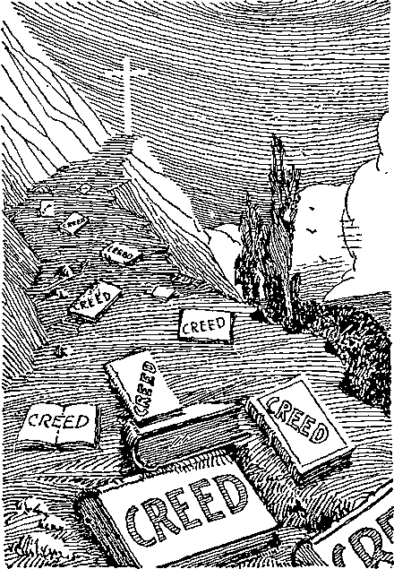HINDRANCES TO CHRISTIAN PROGRESS
6:5. The third seal': Disclosing the third epoch in the history of Antichrist. The third being: Infinite Love. Come and see: Come and see the apparently complete triumph of the powers of darkness and the apparent inaction of Infinite Love in permitting it. Lo, a black horse: Complete disregard of the Scriptures by clergy and people alike, and in their place the ugly creeds and bulls of popes and councils. He that sat on him: The same rider, the Antichrist. Balances in his hand: Symbol of scarcity; bread by weight being a curse in Lev. 26:26 and in Ezek. 4:16, 17. As the services were in Latin the people were starved spiritually.
6:6. As it were a voice: The voice of the Lord Jesus, the guardian and caretaker of the true church. (Matt. 28:20) In the midst: See Rev. 5:6. Say, A measure: Chenix, containing one wine quart and a twelfth part of a quart. Of wheat: The true children of the kingdom. (C137) For a penny: A denarius was the day-wages of a laborer in Palestine. (Matt. 20:2, 9) How great was the effort, in those dark and terrible days, to find some “grains of wheat!” (Amos 8:11) And three measures: Three chenices, three quarts. Of barley: Spiritual adulterers and adulteresses. (Num. 5:15; Hos. 3:1, 2: Jas. 4:4) For a penny: For a denarius. It was three times as easy to find the faithless as the faithful. Hurt not the oil: The supply of the oil was low; the light of the true church was feeble indeed. And the wine: Wine is a symbol of doctrine, true or false, and Its accompanying joys. In this case it refers to the true doctrines of the kingdom. But little knowledge of the coming kingdom was prevalent then, and the joys of the church were proportionately small.
6:7. The fourth seal: Disclosing the history of the Papacy in its fourth stage, the period synchronizing with the Thyatira and Sardis epochs. The fourth being: Infinite Wisdom. Come and see: Come and see what would seem to be the most unwise thing the Lord could possibly permit.
6:8. A pale horse: The ghastly and horrible teachings that God’s true people must be “exterminated.” That sat on him: Still the same rider, the Papacy. Was death: An apt description of its chief claim to recognition during the pre-Reformation period. The grave: Hades, oblivion, unconsciousness. (E398) Given unto them: To the pope, and all the cardinals, bishops, archbishops, priests, inquisitors, kings and rulers. Over the fourth part: Over Europe, but not over Asia, Africa or America. Famine and death: The destruction of new creatures by wresting of the Scriptures and their spiritual starvation are here in evidence; but there was also a literal fulfillment. (B346) Beasts of the earth: The civil governments. “Kings and princes who trembled for the security of their crowns, if they to any extent incurred the pope’s displeasure, were sworn to exterminate heresy, and those barons who neglected to aid in the work of persecution forfeited their estates.”—B333.
6:9. The fifth seal: Disclosing the Reformation in the days of Luther. Under the altar: In the tomb, the grave. (Ex. 20:24; Lev. 4:7; 8:15; Heb. 8:5; 13:10; Phil. 2:17; 2 Tim. 4:6) The souls: The beings of those who had died. These souls were not in heaven. Men that were slain: Spiritually beheaded, some of them literally, also. (Rev. 20:4) For: Dia, “through” or “by means of.” The Word of God: It is this sword of the Spirit that cuts us off from the world. (Heb. 4:12) For the testimony: “Through the testimony”;
through the Word of God. The word dia is here used again. It is the Word that does the beheading. Which they held: As witnesses in their hearts (Rom. 8:16), and to this they adhered at any cost.
6:10. And they cried: A symbolical picture of justice, long deferred, crying for vengeance. (Z.’07-233) With a loud voice: In the same sense as Abel’s blood is said to have cried out. (Z.’83-6-8) How long,
O Lord: How long will it be from this particular time, the spring of 1518? (Rev. 3:14) Holy and true: See Rev. 3:7; 1 John 5:20; Mark 1:24. Wilt thou not judge: Deliver us from the tomb. The judges of old were deliverers. (Judges 3:9-ll) Avenge our blood: Cast off from all favor a system of nominal Christianity, which is not Christianity at all. On the earth; On these that are “Of the earth, earthy.” —Rev. 17:5; 3:10; 8:13; 13:8, 14.
6:11. A white robe: Of spotless righteousness. (Z.T1-342; Rev. 3:4, 5; 19:8) Was said unto them: Not actually, but by the teachings of the parallel dispensations, which show that as Christ was raised from the dead in A. D. 33, the sleeping saints would be raised 1845 years later, in the spring of 1878. For a little season: Greek, Chronos, 360 years. Luther nailed the proclamation on the church door at Wittenberg Oct. 31, 1517, which was already one month into the year 1518, Jewish reckoning. Three hundred and sixty years from the spring of 1518 brings us to the spring of 1878, when we understand that God’s promise made to the sleeping saints was fulfilled. They were raised from the dead, and Babylon was cast off. Fellowservants also: The other members of the little flock, all bond-slaves of Jesus. (Gal. 6:17) And their brethren: Fellow-believers, the great company. Killed as they were: Similarly make covenants of consecration to the Lord. (Rev. 6:9) Should be fulfilled: Should be filled full, completed in number. “This, we have elsewhere shown, marks the date April, 1878.”—Z.’98-137.
6:12. The sixth seal: Disclosing the events leading up to and associated with the Lord’s Parousia, presence. A great earthquake: Literally, the great Lisbon earthquake, Nov. 1, 1755. 'which extended over 4,000,000 square miles. Symbolically, the American Revolution, 21 years later, the underlying cause of the French Revolution. Sun became black: Literally in the dark day of May 19, 1780, which extended over 320,000 square miles. (D587) Symbolically, the light of the papal heavens (the pope) became darkened when Napoleon fined the pope ten million dollars, organized the papal territory into a republic and took the pope a prisoner to France. (C41, 55) Symbolically, too, the light of the true heavens, the Gospel light, the truth, and thus Christ Jesus, has become hidden from view of many by the denial of the clergy of our day that we were bought with the precious blood and by the teaching of. the theory of evolution. (D590; Joel 2:10, 31) Moon became as blood: Literally, on May 19, 1780. Symbolically, the creeds (the moon of the papal heavens) have become repugnant, though still hypocritically professed. Symbolically, also, the light of the Mosaic Law (the moon of the true heavens) has been made to appear evil by the claims of the clergy that the typical sacrifices were bloody and barbaric.—D590, 592.
6:13. Stars of heaven fell: Literally, the meteoric shower of Nov. 13, 1833, covering 11,000,000 square miles. (D585) Symbolically, the bishops and the priestly stars of the papacy fell from their positions of power and influence over the minds and consciences of the people. Symbolically, also, the Protestant pulpit stars make a great display in coming down from spiritual things to the Christian-citizenship-politics level. (D595) Even as a fig tree: The Jewish nation. (D604) When she is shaken: In the time of trouble. (D528) Of a mighty wind: The immature fruits of the Zionist movement were dashed to the ground by the great war. Out of this turmoil Zionism has started afresh, and the Jews have become the actual rulers of their native land.
6:14. And the heaven: The nominal church. (A318, D552) Departed as a scroll: Catholicism and Protestantism being the two ends. (D258, 552) Is rolled together: Certainly not the literal heavens, separated by millions of miles of space in which there is nothing to roll away. (B169)
And every mountain: Kingdom. (A318) And hill: “Little hills” refer to governments less autocratic than monarchies; but “bills” sometimes refer to the sharpest, highest, most jagged mountain peaks, and then mean the most autocratic of all governments. This is evidently what is meant here. The places: Did not occupy the same position as before with reference to the people. In recent years Turkey and Persia have been granted parliaments; China, Russia and Portugal have become republics; and other countries have become vast socialist communities.—Rev. 16 :20.
6:15. Kings of the earth: The aristocracy. The great men: The clergy. (Rev. 18:23, comment) Rendered “lords” in Mark 6:21. See Job 12:2. The chief captains: The high military officers. Rendered “high captains” in Mark 6:21. The rich men: The magnates and financiers. The mighty men: The labor organizers. Every bondman: Member of a labor organization. Every free man: Other worker (if not a bond-slave of Christ). (B139) In the dens: Secret societies. (See Isa. 2:19-21) And in the rocks: The fortresses of society, civil and ecclesiastical. Of the mountains: Governments of earth.
6:16. To the mountains: Kingdoms. (A318) And rocks: Fortresses of society. Fall on us: Epi, over or about, to cover and protect. The common view that wicked men will get enough faith to pray for mountains to fall, is absurd. (B139; Jer. 3:23; Hos. 10:8) From the face; Of Justice, now about to demand an accounting for their stewardship. Wrath of the Lamb: Whose followers they have falsely professed to be.
6:17. Their wrath is come: The wrath of the Father, the Son, and the saints. (Rev. 2:26, 27; Isa. 13:6-19; Zeph. 1:14-18) Be able to stand: “Who may abide the day of his coming and who shall stand when he appeareth ?” (Z.’06-309) “He that hath clean hands and a pure heart.” “The very elect” will not be deceived.—D582.
7:1. And after this: But not signifying that further, more elaborate and final fulfillments on an immense scale will not take place later. I saw four angels: The little flock. On the four corners: “They shall gather together his elect from the four winds.” (Matt. 24:31) Holding the four winds: These “powers of the air,” or “winds,” are not powers of natural air, but are the powers referred to by St. Paul when he speaks of Satan as “the prince of the power of the air.” (Eph. 2:2; Z.T4-166) Should not blow: If they had had unlimited power they would have wrecked the world long ago; but they have been restrained. On the earth: Symbolically, the earth represents organized society. Nor on the sea: The sea represents the disorganized masses. (Dan. 7:2; Lu. 21:25; Rev. 10:2, 5) Nor on any tree: The trees represent the household of faith.
7:2. Saw another angel: The Messenger of the Covenant; our Lord Jesus at his second advent. (Mal. 3:1) From the east: Scattering the shadows of sin, ignorance, superstition and death. (D653; Luke 1:78; Mal. 4:2) Having the seal: The seventh seal. With a loud voice: Pastor Russell was the voice used. Beautiful voice of the Lord: strong, humble, wise, loving, gentle, just, merciful, faithful, self-sacrificing; one of the noblest, grandest characters of all history. To the four angels: The harvest workers. (Matt. 24:31) To whom it was given: By completing the harvest work and thus releasing the restraints on the evil spirits. To hurt the earth: Throw order-loving peoples into desperation. And the sea: So enrage the masses, not under religious restraint, as to make it impossible to control them.
7:3. Hurt not the earth: Do not complete the harvest work too soon, and thus allow the demons to invade the minds of men until the appointed time. Neither the sea: Maddened by the obsession of the evil spirits, there are no lengths to which the godless will not presume to go. Nor the trees: “It may be something in connection with the saints that will constitute the test of these angels. This will be the key, the secret connected with the awful time of trouble which the Bible tells us will mark the conclusion of this age and which will constitute the forerunner or beginning of the new dispensation.” (Z.’11-359) Till we: You “four angels,” harvest workers in the flesh, and myself, the Lord of the harvest. Have sealed: Marked, separated, distinguished, (C165) In their foreheads: Given them an intellectual appreciation of the plan of God, with its time features, etc., as a comfort, shield, and mark, seal, or evidence of their sonship.—B169, C225, 303.
7:4. I heard the number: The predestinated number. (E412) 144,000: The definite, fixed number of the elect. (F179) In the same chapter reference is made to another company, also spirit-begotten. Children of Israel: The Lord’s people. (2 Chron. 7:14; D654; Gal. 6:16; Rom. 9;6-8) In the meaning of the names of the children of Israel we may recognize certain of the qualities which make each overcomer precious in the Father’s sight.
7:5. Of the tribe of Juda: Juda signifies Celebrated, lauded, praised. Nothing is more praiseworthy than justice, noble-mindedness, the doing to everybody as one would wish to be done by. Our Lord was the Just One of the tribe of Judah. Doubtless the brightest crowns will be worn by those that are wholly without self-love, either in heart or in life. (Gen. 38:12-26; 43:3-10; 44:14, 34 ; 46:28) Tribe of Reuben: Reuben’s name, signifying ‘‘See ye, a son, provided in my affliction,” or The Pity of God, seems to refer to the five-talented brethren who make their calling and election sure. To be possessed of ability and means to get the fullest enjoyment out of life, and to sacrifice it all gladly, requires a standard of character so high that the Lord expressly states that not many attain it. (1 Cor. 1:26; Gen. 37:21, 22, 29, 30; 42:22, 37)
A taint of love of the world (spiritual uncleanness) is all that prevents from attaining the very highest place. (Gen 35:22; 49:3, 4; 2 Cor. 7:1) Of the tribe of Gad: Gad’s name, signifying A troop of children cometh, seems to give the third highest honor to those faithful men and women who have been blessed of God in bringing many of their own descendants into the divine family. There is a family interest on the part of the heavenly Father in every family that rightly seeks his face.—Gen. 46:16; Num. 26 :15-18; Acts 2 :39; 1 Cor. 7:14.
7:6. Of the tribe of Aser: Aser’s name signifies Happy. Apparently the fourth highest place of honor goes to the happy Christians. (Gen. 30:13; Phil. 4:4; 3:1; 2 Chron. 20:22) Tribe of Nephtalim: Naphtali’s name signifies Great wrestlings, and suggests that the fifth highest place will go to those who have especially sought the face of the Father in prayer. (Gen. 35:25; 49:21; Luke 11:5-13; James 1:5; 3:17) Tribe of Manasseh: Manasseh’s name signifies Forgetting The sixth honor apparently refers to a class having naturally very strong human attachments, for the dear ones of their earthly families, and yet love the Lord still more.—Psa. 45:10.
7:7. Tribe of Simeon: Simeon signifies Hearing. “Because the Lord hath heard that I was hated, he hath therefore given me this son also.” (Gen. 29 :33) This suggests that the seventh place of honor is reserved for those who have been hated in their home circles because of faithfulness to the Word of the Lord. (Rom. 5:3; 8:17; Col. 1:11, 12; 1 Pet. 1:7; 4:12; 5:10; 2 Tim. 2:12; James 1:12) Of the tribe of Levi: Levi’s name signifies A joining. The next honor is apparently reserved for those who have literally sacrificed all their possessions in this "world in order that they might be more closely joined to the Lord and his service. Levi had no inheritance in the land. Tribe of Issachar: “Issachar is a strong ass couching down between two burdens: and he saw that rest was
good, and the land that it was pleasant; and bowed his shoulder to bear.” (Gen. 30:18; 49:14, 15) This seems to signify that the next honor goes to the zealous, those who joyfully undertake, in the Lord’s name and cause, to work hard for the glory of his name.—1 Cor. 15:58.
7:8. Tribe of Zabulon: Zebulun signifies Habitation or Dwelling. It signifies the blessed satisfaction that comes to those who, like the Master, during their earthly pilgrimages have not known where to lay their heads; but, although they have wrestled with poverty throughout life’s little day, have nevertheless held faithfully to the Lord, serving him. with limited education, strength, talents and opportunities. Tribe of Benjamin: Benjamin signified Son of my Sorrow originally, but the name was changed to signify Son of the right hand. The youngest of Jacob’s children, he seems in some aspects to typify the great company class (Z.’81-l-7), but succeeds in gaining the higher reward, probably because of being the companions of those that occupy more advanced positions in the body. Thus the humble-minded and faithful servants and companions may and do fill up that -which is behind of the afflictions of Christ, even though their personal sufferings be slight. (Heb. 10:33) Tribe of Joseph: The Sinaitic MS. mentions Joseph last, with peculiar fitness. Joseph was one of the most beautiful characters of the Bible. His name signifies Whom may God increase. He had so many virtues that it is inadvisable to attempt their enumeration, but the story is told at length in Gen. 37-50. He is one of the very few characters named in the Bible about whom nothing uncomplimentary is expressed. He well represents all the other members of the divine family, all of whom have attained the divine likeness in their hearts and given expression to that likeness as fully as the frailties and weaknesses of the flesh would permit.
7:9. A great multitude: A larger com-87
pany than the Christ company; sufficiently faithful and zealous to consecrate themselves to death, but not to court sacrifice in his service; loyal, but not promptly obedient; with zeal not according to knowledge. These, through fear and faintheartedness, fail to put or keep their sacrifices on the altar, become overcharged with the cares of this life and more or less contaminated with the world’s ideas and ways; they are nevertheless virgins, pure in their heart-intentions. (C364, D578, F127. 168) For a summary of Scriptures bearing upon this class see especially Z. ’07-315. Typified by Benjamin. (Z.’81-l-7) Typified by certain grains which cling closely to the chaff. (Z.’84-l-4) Typified by the “vessels of silver” “in a great house” mentioned in 2 Tim. 2:20. (N.’O7-6-2) Typified by Elisha while with Elijah. (Z.’04-253) Typified by Rahab. (Z.’07-267) Branches in the vine that do not bear fruit. (T69) “Babes in Christ. Those who seek merely to do right, and to put in eight hours or so a day faithfully, after the manner of the world, will be judged from this standpoint; and they will merely obtain a place in the great company. They are not fulfilling the conditions of the covenant of sacrifice.” (Z.’14-71; ’07-27) Could number: Is able to tell; not a foreordained or fixed number; for no one was ever called to be of this company. (Z.’97-161) Before the throne: Not “in the throne,” as his bride and joint-heir. (A214) Before the Lamb: Perfection on a lower plane of spirit-being. (F169) With white robes: The robe of Christ’s righteousness. (E457) Palms in their hands: “The palm is especially the symbol of martyrdom. Many of the martyrs of the dark ages were undoubtedlv of the great company.”
7:10. With a loud voice: In grand and happy chorus of exultant praise and thanksgiving over their final deliverance. (Rev. 19:1-3) Saying, Salvation: Our glorious and unmerited boon of life on so high a plane. To our God: Be ascribed to him as the author. (Psa. 3:8) And unto the Lamb: The Tower of the Flock, Christ as the instrument of salvation.—Micah 4:8.
7:11. And all the angels: The beautiful sous of the morning, who shouted for joy in the dawn of earth’s creative week 48,000 years ago. (Job 38:7; Lu. 2:9-14; Matt. 4: 11; 28:2; F51) About the throne: With eager joy welcoming this new addition to the family of God. And about the elders: The prophecies, many of which have pointed out this second and greater company. And the four beings: Justice. Power, Love and Wisdom. On their faces: No wonder such humble characters “always behold the face of the Father.” (Matt. 18:10) And worshipped God: There is no self-seeking among the angels.
7:12. Saying, Amen: So be it! We are not at all jealous. We are delighted to have these new helpers in the heavenly realm. Blessing: The praises and blessings of all who owe their existence to his goodness. And wisdom: To unfold continually and forever some new and wonderful features of goodness and grace tow’ards the work of his hands. And thanksgiving: From “every creature which is in heaven and on earth.” (Rev. 5:13) And honor: To the name so long and so unjustly and foully dishonored by the eternal torment theory. And power: Restrained for thousands of years, but now about to be exercised in man’s behalf. (Psa. 73:10) And might: The ability to accomplish fully all his purposes. (Isa. 55:11) Be unto our God: Be ascribed to Jehovah.—Rev. 5:14.
7:13. And one of the elders: The prophecy of Isaiah 1:10-20. Saying unto me: Under symbolism of Sodom, because of their identification with spiritual Sodom’s work and hopes. (Rev. 11:8) What are these: Who are these of whom it is said. Wash you, make you clean? (Isa. 1:15, 16; Rev. 7:9) And whence came they: Why are they figuratively represented as stained with blood?
7:14. My Lord, thou knowest: It is doubtless contained in your prophecy. And he said unto me: In Isa. 34:5, 6. Out of: Literally “under” or “through”. (Z.’79-10-1) Great tribulation: The tribulation, the great one—the twofold article being specially emphatic. See Rev. 3:10; 6:17; Matt. 24:21. The great time of trouble with which this age shall end, sent in special mercy, to effect in them a proper penitence for sin and a proper appreciation of the divine standard of truth and righteousness. (Z.’96-191; ’07-232, 233) The sufferings of the great company class are greater than those of the little flock. Washed their robes: Which had become sadly spotted and soiled by contact with the world. (Z.’97-161, 162) Not being of the class that are guided by his eye. (E254) Blood of the Lamb: In their sufferings they will learn to appreciate as never before their relationship to the Lamb of God and to his atoning merit, and by faith will be permitted to apply the same to their own cleansing.
7:15. Therefore: Because, in the final test, they suffered martyrdom and cleansed their robes rather than deny the Lord. Before the throne: “With the world in the next age, the Lord’s powder will be represented through the great company class, under the bride. They will be a great police force, looking out for the whole people.” Day and night: Continually. In his temple: The church. (F127) But not of it. (T70) They ultimately reach a position next to the bride, on the spiritual plane. (A241) Knoweth them: God keeps a record of his friends (Mal. 3:16) but no record of his enemies; and therein lies their ruin. “I never knew you; depart from me.”—Matt. 7:23.
7:16. They shall not hunger: Poor things, how hungry they have been I Neither thirst any more: “The waters of truth shall no longer be brackish with error.” (B26) Nor any heat: During the harvest time the Lord’s people, illuminated with the light of present truth, have been shining fortn not with any brilliancy of their own, but with much of the coming splendor of the “Sun of Righteousness.” Coming in contact with them, it has been inevitable that the great company class should frequently be singed, unable to answer the truth, and should feel much heat.—Isa. 28:19; Amos 5:19.
7 :17. For the Lamb: Jesus Christ, their eternal friend. (Heb. 13:8) Midst of the throne: Authority, rulership. (A92; Rev. 5:6) Shall feed them: Be their shepherd. (John 10:1-28; 21:16) They will not have immortality. Their lives will always require to be sustained, as in the case of the angels. Waters of life: The united wellsprings of the fountain and its 144,000 associates. (John 4:14; Rev. 22:1, 17; Ezekiel 47:1-5) Wipe away all tears: There will be tears at first that will require wiping away, when they see all they have missed. Nevertheless, “with gladness and rejoicing shall they be brought into the King’s palace.”—Psa. 45:15.
8:1. And when he: The Lord Jesus. Opened the seventh seal: “The seal of the living God.” (Rev. 7:2) There was silence: “The clergy somehow realize that neither reason nor Scripture supports their false doctrines, and that the wisest method is to keep silent, in the shadow of old superstitions and under the protection of so-called Christian governments.” (C158; Jer. 8:14) In heaven: In the nominal ecclesiastical heavens. Space of half an hour: On the scale of a year for a day this would mean but a week, and indicates that, as soon as the full number to complete the body of Christ were sealed with the present truth, persecution in a public way, and on an unprecedented scale, began almost immediately. (This verse should properly be included in Chapter 7.)
8:2. And I saw: As the next vision of the grand series. Something never seen until the seventh seal was broken and the mystery of God finished. The seven angels: Instrumentalities suitable for the work to be performed. Which stood before God: Featuring the Reformation. Seven trumpets: Bugles with which to blow bugle-blasts of liberty from the oppressions of the Papacy.—Lev. 25:10.
8:3. And another angel: The corporate body—the Watch Tower Bible and Tract Society, which Pastor Russell formed to finish his work. (Z.’17-22; Rev. 14:18; 19: 17) Came and stood: Waited before the Lord, after the Pastor’s death, ready to do the Master’s will. At the altar: The Brazen Altar, the place of sacrifice. (Ex. 38:1-7; Lev. 16:12, 13) The fire for the sacrifice at the Golden Altar was obtained here and then carried to the Golden Altar,, where the incense was crumbled on it. Having a golden censer: Censers, or firepans, were of two forms, with handles and without. In this case the kind with the handle, used only on the Day of Atonement, is the one referred to. The incense ■was burnt while the high priest held the censer in his hand. Thus, in this prophecy, the great antitypical High Priest identifies himself with the work of the Society, and places in its care—holds in his hand—the fire-pans, the things that lead us to the place where we sacrifice ourselves. Thus seen, the censer represents teachings, understandings of the Word; for it is our understanding of the Word which leads us to offer up all we have in the Lord’s service. (Num. 16:6. 7) Much incense: The heart’s best endeavors of the faithful fellow-members of the body. Should offer it: To Jehovah, through the Son. (Rev. 5:8) Prayers of all saints: The Society is the only entity in the world answering to this description. It alone has offered on its behalf the prayers of so many saints, in harmony with the clause of their Vow which reads: “Daily will I remember at the throne of heavenly grace the general interests of the harvest w’ork —the dear co-laborers at the Brooklyn Tabernacle and Bethel, and everywhere.”
Before the throne: The offerings take place “before the throne,” on this side the vail.—Rev. 1:4; 5:6; Ex. 30:1-10.
8:4. And the smoke: The fragrant, sweet perfume. Of the incense: Life’s dearest ties, sacrificed in the Master’s cause. With the prayers: In harmony with the Vow of faithfulness. (Psa. 141: 2; Luke 1:10; Acts 10:4) Up before God: “An odor of a sweet smell, a sacrifice acceptable, well-pleasing to God.”—Phil. 4:18.
8:5. And the angel: The Watch Tower Society through its proper representatives. Took the censer: The Seventh Volume of Studies in the Scriptures, divinely provided. Fire of the altar: Coals from the altar signify burning truths; and such the Lord’s prophecies always are, when rightly understood. (Isa. 6:5-8) And cast it: Greek, “Deliberately hurled it.” Into the earth: Among order-loving people. (Ezek. 10:2) And thunderings: Symbol of controversies. (Z.’84-l-5; Luke 12:49) And voices: “These voices have been circulated here and there throughout the whole civilized world, not by worldly agents, not through book-sellers, but by those who have themselves been blessed by the light.” (Z.’02-118) And lightnings: Diffusions of knowledge. (Z.’83-7-8; Rev. 4:5; 11:19; 16:18) And an earthquake: A revolution. (A336) Perhaps the symbolical earthquake will be accompanied by a literal one.
8:6. The seven trumpets: The seven trumpets of Revelation are symbolical and not literal. (Z.’02-116; Josh. 6:4) To sound: It is admitted that those that have already “sounded” have not been literal blasts of a bugle on the air.—Z.’02-116.
8:7. The first sounded: The movement began, which later developed into the nineteen Lutheran sects. There followed hail: Sharp, cutting, hard truth, contained in Luther's ninety-five theses. And fire: Destructive judgments upon the Papacy. Mingled with blood: Blood is a symbol of death-dealing doctrine, and this teaches that Luther did not get entirely free from error. Earth was burned up: Luther’s teaching had the effect of transforming the order-loving German people into anarchists. And the third part: The German part. The Reformation particularly affected “three parts” of the papal dominion, Germany, England and France. (Rev. 8: 7-10) Of the trees: Trees are symbols of saints. (Z.’14-312; Isa. 61:3) Was burnt up: Hindered from standing alone, and absorbed into the Lutheran system. All green grass: Natural men of independent thought. (Isa. 40:6, 7) Was burnt up: Similarly absorbed into the Lutheran system, a welcome substitute for Papacy’s intolerable yoke.
8:8. The second sounded: The Anglican church movement began. A great mountain: England in the time of Henry VIII. Mountains symbolize kingdoms. (Dan. 2: 35; Jer. 51:25) Burning with fire: Aflame with another great movement destructive to the Papacy, Cast into the sea: Suddenly thrown into a condition of isolation from the Papacy—no longer placed under religious restraint to it. Third part of the sea: The English part. Became blood: The much-married Henry VIII, founder of the Anglican church, and the second great sect-founder, has some slight blemishes on his escutcheon also. For details see any encyclopedia.
8:9. And the third part: The English part. Of the creatures: The clergy “apos-tolically” of the ( hurch of Rome, but actually doing business under Henry VIII. In the sea: No longer under religious restraint to the Papacy. And had life: The apostolic succession. Died: Were excommunicated by the pope, lost the-ir “apostolic (?) succession.” And the third part: The English part. Of the ships: Independent bodies of Christian worshippers called Lollards, followers of Wycliffe. (Z.’00-186) Was destroyed: Compelled to acknowledge Henry VIII as head of the church or lose their lives.
8:10. Third angel sounded: The Calvin -istic movement began, which later developed into the seventeen Presbyterian sects. A great star: Light-bearer, pulpit star (D591, 594) From heaven: The powers Of spiritual control. Burning as it were a lamp: The precipitation of the Calvinistic movement in France and Switzerland was as sudden as the Anglican movement had been in England or the Lutheran movement in Germany. Upon the third part: The French part. Of the rivers: Channels of religious instruction. (Z.’95-119) Fountains of waters: The Word of God.—D266.
8:11. Name of the star: Calvin is entitled to the honor of having at one time been a papal star. He was from the first educated for the church. Is called Wormwood: What an ideal name for the doctrine which has caused more bitterness against God than any other doctrine ever taught I Part of the waters: Many portions of the Scriptures, misunderstood, misconstrued and misapplied. Became: Were made to appear in the eyes of many. Wormwood: Bitter as gall. “None now would justify Calvin’s course in sentencing Servetus to be burned. He was literally roasted alive, in horrible torture nearly five hours—in the name of God, of Jesus, of righteousness, truth, justice, love, Christianity and civilization.” (Jer. 9:15; 23: 15, 9-40; Deut. 29:18) And many men died: Lost their manhood, reason and common sense by becoming Calvinists. Were made bitter: The poison of bitter error, the doctrine of devils, having been mingled with the pure water of life, the truth of God’s Word.—C157.
8:12. Fourth angel sounded: The Baptist sectarian movement began, resulting in the sixteen Baptist sects. The sun was smitten: Though not apparently so stated in any confession of faith, it is a prevalent view among Baptists that the Old Testament has been entirely fulfilled. Believing thus, they lose the force of a large part of the Gospel message, typified by the sun.
Part of the moon: Similarly, they do not see the force of the teachings of the Law dispensation, as in the Tabernacle arrangements, etc., in their application to the church. Part of the stars: The teachings of the true light-bearers, the apostles, cannot be fully appreciated except in connection with the prophecies of the Old Testament. Was darkened: If pressed to estimate the relative worth to us as new creatures of the writings of the Old and New Testaments, we would admit that the writings of the New Testament are worth perhaps twice as much to us as those of the Old Testament because they contain the message addresed to the new creation, but zve want all three thirds of the Word. And the day: The Scripture teaching of the coming Millennial day. A third part of it: At least a third of the light we get on the subject of the Lord’s Millennial reign is from the Old Testament. The night likewise: The same is true of the world’s dark night of sin and death, and the darkest feature of that night—the time of trouble such as was not since there was a nation. The Old Testament has much of light and instruction on this subject.
8:13. Heard an eagle: One of Pastor Russell’s humble followers (Matt. 24:28) apprehending correctly the significance of the three woes. See comments on Rev. 8:2 and 9:12 as to why this statement is appropriate in this place. This verse is a parenthesis, as is also Rev. 8 :3-5, which is synchronous with it. Both were seen by the Revelator after the opening of the seventh seal. Midst of heaven: Beginning with the papal heavens and then in their order of development, the Lutheran, Anglican, Calvinistic and Baptist heavens. With a loud voice: With considerable plainness of speech. Woe, woe, woe: Great distress and perplexity of mind. Inhab-iters of the earth: All supporters of Satan’s empire. The other voices: Later movements in the ecclesiastical heavens described in Chapters 9 and 10. Of the three angels: Methodism, the Church Federation and the Truth.
9:1. Fifth angel sounded: The Wesleyan movement began, leading up to the fifteen Methodist sects. And I saw a star: John Wesley became a star in the Anglican heavens in 1728, at which time he was ordained a priest by Bishop Potter. Fall from heaven: For many years Wesley had no thought of forming a sect; and yet unconsciously he began to do so from the time he was ordained. “The preachers in the South determined upon administration of the sacraments, and a committee was chosen who ordained themselves and others. Wesley perceived that the Society would disintegrate unless effective measures were speedily taken; and, aided by two presbyters of the Church of England (one of whom was James Creighton), early in 1784 he ordained Thomas Coke, a presbyter of that church, as superintendent. In 1787 the American Conference changed Mr. Coke’s title to “bishop.” Of the abyss: Wesley was given the key to nothing and to nowhere; thus the symbolism indicates. See Rev. 11:7.
9:2. There arose a smoke: Confusion— a blinding haze. Over the pit: In the “air,” the ecclesiastical heavens. Of a great furnace: Methodism was no ordinary smudge. And the sun: The true Gospel. And the air: The Anglican church. Were darkened: Methodism damaged the Anglican communion as much as it did the truth.
9:3. Locusts: An immense number of followers. (Judges 7:12) Upon the earth: Among order-loving people. Was given power: To attend an old-time Methodist meeting and witness the “getting the power” was to see an interesting sight. As the scorpions: “A well-known injurious insect of hot climates, which is shaped very much like a lobster. They are carnivorous in their habits, and move along in a threatening attitude with the tail elevated. The sting, which is situated at the ex-
tremity of the tail, has at its base a gland that secretes a poisonous fluid, which is discharged into the wound by two minute orifices at its extremity.”—McClintock and Strong’s Encyclopedia. ,
9:4. Grass of the earth: Men of independent thought. (Rev. 8:7) Neither any tree: Saint. But those men: The unconverted. The seal of God: Methodists understand that to be converted from being a sinner means to have the seal of God in one’s forehead.
9:5. Not kill them: No such sane and merciful sentence as “the wages of sin is death” has any place in Methodist theology. Wesley was born at a time -when the original meaning of the word “hell” had become hidden. Tormented five months: In symbolic time, 150 years. (B65, 66, 91) Wesley became the first Methodist in 1728. (Rev. 9:1) When the Methodist denomination, with all the others, was cast off from favor in 1878 its power to torment men by preaching what Presbyterians describe as “Conscious misery, eternal in duration” came to an end legally, and to a large extent actually. (Rev. 9:10) And their torment: The torment of those tormented by the tormenting doctrine of torment. Torment of a scorpion: See V. 10.
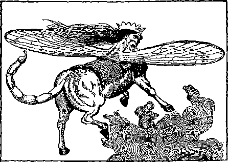METHODISM. (See Vs. 3-11)
9 :6. And in those days: Throughout the 150 years of widely prevalent “Methodist hell-fire”. Shall men seek death: Would be glad to know that “The wages of sin is death.” (Rom. 6:23) And shall not find it: Because all the texts which plainly teach that “All the wicked will God destroy,” were perverted to mean “All the wicked will God immortalize in hell.” Shall desire to die: Real men would prefer to die and stay dead rather than forever companion and worship the greatest devil of the universe. And death shall flee: They were told that men only seem to die, although touch, hearing, sight and smell all bear eloquent testimony to the contrary.—Rom. 6:23; Ezek. 18:4; Gen. 3:19; Psa. 115:17; 37:10, 20; Ecc. 3:19-21; 9:5; 1 Cor. 15:13.
9:7. Prepared unto battle: The battlecry of the old-time Methodist was: “All at it, and always at it.” As it were crowns like gold: Those born of the spirit, changed from human conditions and made like the Lord, have received the very highest blessing, the “crown of life,” the divine nature. Gold is a symbol of divinity. To receive a crown of gold is to be born of the spirit. All old-time Methodists felt certain that they were “born of the spirit” when converted, no begetting or quickening being necessary. But here is pointed out that these good people had “as-it-were” crowns instead of real ones.
9:8. The faces of men: They were not “born of the spirit” as they supposed. Hair of women: “If a woman have long hair it is a glory to her: for her hair is given her for a covering.” (1 Cor. 11:15) The church’s glory is her wedding robe, the robe of Christ’s righteousness. It is to the credit of old-time Methodists that they trusted for salvation in the precious blood of Christ. Teeth of lions: Lions are able to chew and swallow almost anything. When the conference at Baltimore in 1787 turned John Wesley’s superintendent into a bishop, the Methodist people swallowed it all; and to this day most of them really believe that their clergy are a divinely appointed institution, despite the fraud.
9:9. Had breastplates: “Breastplates of righteousness.” (Eph. 6:14) As it were of iron: An iron breastplate would be a good one but an “as-it-were” breastplate would need examination. It was not uncommon for old-time Methodists to deceive themselves into thinking they had not sinned for years. Those who had such breastplates wore the “as-it-were” variety. Sound of their wings: When engaged in “getting the power”. (Rev. 9:3) Sound of chariots: The noisiest vehicles known in the Revelator’s day. Running in battle: The old-time Methodist hell-fire revival was in days gone by one of the noisiest places on earth.
9:10. They had tails: Followers—classleaders. Hike unto scorpions: The oldtime class-leader was an invaluable adjunct of the Methodist church. Upon him devolved the duty of requiring each probationer to attend the class-meeting and report his spiritual progress weekly. After each report it was the class-leader’s duty to inject a little more of the poisonous doctrines from the two orifices referred to in comments on Rev. 9 :3. From the “heaven” orifice came the doctrine, “If you are good you will go to heaven when you die”—and from the “hell” orifice came the message, “If you are bad you will go to hell when you die.” It was all very simple. Everybody was simple in those days. And stings: Revivals in which the attendants were stung, doctrinally and financially. Five months: One hundred and fifty years, from Wesley’s ordination in 1728 to the casting off of Methodism in 1878.—Rev. 9:5; 2:21.
9:11. Have their king: The same king as exercises general rulership over all the ecclesiastical affairs of this present evil world. Angel of the abyss: “The prince of the power of the air.” (Eph. 2:2) Abaddon: And he is “a bad one,” sure enough. (2 Cor. 4:4) Apollyon; That is, Destroyer. But in plain English his name is Satan, the devil. As a means for preventing people from seeing the truth, Methodism has been as efficient as any of the five systems previously described, or any that follow. All have been sadly misled and deceived by our great and wily adversary ; “Taken captive by him at his will.”—2 Tim. 2:26.
9:12. One woe is past: Methodism was the first woe of the epoch leading up to and associated with “the time of the end”. It was a serious blow to the pretensions of the Papacy, but its days of usefulness have long since passed. Two woes more: One is outlined in the remainder of this chapter and one in Chapter 10. It was the discovery of Methodism as the first woe that led to an identification of the four movements of the Reformation proper which preceded it.—Rev. 8:7-13.
9:13. Sixth angel sounded: The Evangelical-Alliance-Spiritism movement began in 1846-1848, culminating in the Federal Council of the Churches of Christ in America. Their “faiths” are quite as varied as their names; but without exception they deny the central truth of the Scriptures (1 John 4:2, 3) that when Jesus Christ came to earth he came as a man only, devoid of immortality or divinity, that when he died he was as dead as though he never had lived, and that by that death he bought for Adam and his race the restitution of all things foretold by “the mouth of all the holy prophets since the world began.” (Acts 3 :19-23) The common ground upon which they stand is this: their denial of the Ransom, their affirmation of spiritism, in some form, and their adherence to the principle of federation. (2 Tim. 4:3, 4; Deut. 18:10, 11; Isa. 8:9-22) The latter passage is full of the deepest significance at this time. And I heard a voice: William Miller, from A. D. 1829 to 1844. The golden altar: The consecrated church in the present sacrificing condition.—T120.
9:14. Saying: By pointing to the near fulfillment of the 2300 days. (Dan. 8:14) To the sixth angel: The Evangelical-Alliance-Spiritism movement. The Alliance proper was organized Sept. 2, 1846, at the end of the 2300 years. The spiritism feature began in January, 1848. The two have been growing towards each other ever since, until now they are substantially one and the same thing. The four angels: Four errors in the nine fundamental principles of the Evangelical Alliance. Which are bound: Hindered from gaining fullest expression. River Euphrates: The world of mankind.—B208, D24.
9:15. The four angels: The four great errors of trinity, incarnation, immortality and lordship over God’s heritage. Were loosed: Given greater liberties than ever before. Which were prepared. Each sect for itself, and in its own time. For the hour: The hour of judgment, 1918. Month and year: Thirteen symbolic months, the 390 years of Protestantism's siege of the Papacy. (Ezek. 4:5) For to slay: To make nominal Christians of, to take away the manhood of. Third part of men: The total number of Christians in the world at the beginning of the twentieth century was 571400,000, of whom one-third, 177,300,000, were Protestants.
9:16. And the number: In round numbers, at the time of identification. Heard the number: Heard, heeded, or noted, the count as given in the World Almanac, as correct.
9:17. Horses in the vision: Horses are symbols of teachings. The doctrines that a man has been taught will carry him along to do things. “As a man thinketh, so is he.” The man and his beliefs are inseparable. (Joel 2:4) That sat upon them: The total Protestant church membership. Breastplates of fire: Keeping the doctrine of hell-fire well to the front in their teachings. And of jacinth: The hyacinthus of the Romans is invariably blue and lustrous. This description suggests the blue flame which issues between the fire and the brimstone, represented as “smoke” in verse 18. And brimstone: Plenty of brimstone went along with the hell-fire. (Rev. 14:10) And the heads: “The ancient and honorable, he is the head.” (Isa. 9:15; 29:10-14; John 4:22) Heads of lions: Able to swallow the most ridiculous and impossible theories. (1 Chron. 12:8) Issued fire: Sermons full of hell-fire. And smoke: Confusion.
9:18. Third part of men: The Protestant third of Christendom. Killed: Deprived of reason, manhood and dignity. Their mouths: Especially when an evangelist firm is in town.
9 :19. Is in their mouth: It certainly is not in the Scriptures. And in their tails: Followers, ‘workers,” class-leaders. (Isa. 9:15) Like unto serpents: Bright enough to know better. And had heads: Wills of their own—unlike the “beheaded” saints. (Rev. 20:4) They do hurt: Damage the cause of truth.
9:20. The rest of the men: Those ordinary “good fellows” (and bad ones, too), men of the world. Were not killed: Remained “unconverted” to the mass of errors masquerading in the name of religion. Yet repented not: But continued on in their own way. Worship devils: Joining secret organizations teaching a debased form of religion. (Lev. 17:7; Deut. 32:17; 1 Cor. 10:20) Gold and silver: Currency in hand and in the bank. (Psa. 115:1-4; Dan. 5 :22, 23) Stone and wood: Improvements in real estate, etc. Nor hear, nor walk: But are permanent, tangible, fixed.
9 :21. Of their murders: Teaching hellfire keeps nobody from being a murderer or a slanderer. (Rev. 21:8) Nor their sorceries: Use of drugs, Greek. Teaching hell-fire keeps nobody from being a drug fiend or pseudo-philosopher. (Rev. 21:8) Their wickedness: Teaching hell-fire keeps nobody from being a wicked man. Nor of their thefts: Teaching hell-fire keeps nobody from engaging in “high finance.”
10:1. Another angel: “The Messenger of the Covenant,"’ the Lord Jesus. (Mal. 3:1) Down from heaven: At the time of the second advent, October, 1874. (Rev. 3:20) With a cloud: The time of trouble. (B138) As it were the sun: See Rev. 1: 14-16; 7:2; 18:1.
10:2. In his hand: In his power, given to him by the Father. (Rev. 5:7, 5) A little book open: The present truth message. (C89) Set his right foot: Exerted the strongest power of restraint. Upon the sea: The masses not under religious control, who, without the Lord’s control of the situation, would have long since swallowed up the present order of things. (Rev. 7:1-3; Luke 21:25; Psa. 46:2. 3) On the earth: The present organization of society.—A323, C229, D46.
10:3. With a loud voice: Pastor Russell was the voice used. (Rev. 7:2) As when a lion: Symbolical of Justice. (Rev. 4:7; Amos 3:8) And when: In 1881 A. D. He had cried: With the first great cry. Food for Thinking Christians. 1.400.000 copies given away, free. Seven thunders: Seven volumes of Studies in the Scriptures. (Rev. 8:5) Uttered their voices: Were foreseen as necessary to the complete statement of the plan, and the fulfillment of this and other Scriptures.
10:4. I: Pastor Russell as a representative of the John class. Was about to write: Intended to put on paper at once. Voice from heaven: The guidance of the heavenly Father, directing and overruling, knowing that the results would be better if the interest of his little ones were sustained by expectancy throughout the whole time of harvest, rather than to give all the light at once. (John 16:12) Seal up: Do not immediately disclose their full contents. (Dan. 8:26; 12:4, 9) And write them not: The Lord retarded the publications thirty-six years from the publication of Food for Thinking Christians to the last volume of the Scripture Studies.
10:5. The angel which I saw; The Lord
Jesus, since 1874. (Rev. 10:1) Hand to heaven: The seventh angel was in that hand when he did so.—Rev. 1:16, 20.
10:6. And sware by him: By Jehovah, his Father and our Father, his God and our God. (John 20:17) Who created heaven: “The heavens declare the glory of God.” (Psa. 19:1-6; Neh. 9:6; Rev. 4: 11; 14:7) Is time no longer: There shall be no further delay.
10:7. Of the seventh angel: Our Lord, by his servant, Pastor Russell. (Rev. 3:14) Begin to sound: In 1881, at which time Food for Thinking Christians was circulated, and the general call ceased. (Rev. 11: 15) The mystery of God: The secret features of God’s plan, and the church, the body of Christ, which is the embodiment of that plan. (A87, F199) Throughout the Gospel age, and until this day, the deep things of God’s Word have been understood only by the truly consecrated. (N.'04-2-14) “The secret of the Lord is with them that fear him.” (Z.’97-255) Was finished: Because there is no further object in perpetuating its secrecy. To his servants: The harvest workers. And the prophets: Daniel (12:4-12) and Habakkuk (2:1-3).—Rev. 1:1.
10:8. And the voice: The heavenly Father’s voice. (Rev. 10:4) Spake unto me again: By his holy Spirit. Take the little book: “Study to show thyself approved unto God.” (2 Tim. 2:15) Of the angel: The Lord Jesus.—Rev. 10:1, 5.
10:9. Went unto the angel: “In coming out of bondage to human traditions, creeds, systems and errors, we are coming directly to our Lord.” (C167) Said unto him: By my act in obeying his command. (Rev. 18:4) Give me the little book: Show me, as promised, the “things to come.” (John 16:13) Take it, and eat it: “It is absolutely useless for us to pray Lord, Lord give us the Spirit, if we neglect the Word of truth which that Spirit has supplied for our filling.” (E245; Ezek. 2:8) Thy belly bitter: Lead to self-sacrifice, with its attendant sufferings, but create an appetite for more. (C89; Ezek. 2:10; 3:14; Dan. 8: 27) Sweet as honey: “O the blessedness.”
10:10. And ate it up: “Thy words were found and I did eat them; and thy Word was unto me the joy and rejoicing of mine heart.” (Jer. 15:16) Sweet as honey: “So I opened my mouth, and he caused me to eat that roll. And it was in my mouth as honey for sweetness.” (Ezek. 3:2, 3) My belly was filled: “It satisfies my longings as nothing else could do.”—Dan. 12:12.
10:11. They say unto me: The Scriptures do the saying. Must prophesy again: Continue to proclaim the message of truth divine. Before many peoples: Until it has been fully testified to all. (1 Tim. 2:6) And kings: The last witness of the church in the flesh is, like their Lord’s, as alleged malefactors, before earth’s rulers.
11:1. Was given me: The John class in the time of the end. (Dan. 12:4) A reed like unto a rod: The Lord’s Word is both a rod to lean upon (Isa. 11:4) and a reed with which to measure. (Jer. 1:11, 12) He saith: It is the “reed” or “rod” itself, the divine Word, that does the saying. Rise: “At the exact ‘time appointed,’ 1799, the end of the 1260 days, the power of the Man of Sin, the great oppressor of the church, was broken, and his dominion taken away. And forth came, and are coming, the ‘Sanctuary’ class, the ‘holy people,’ weak, and halt, and lame, and almost naked, and blind, from the dungeon darkness and filth and misery of papal bondage.” (C122) And measure: The several volumes of Scripture Studies and the booklet Tabernacle Shadows are devoted to the “measurements” herein prophesied. The temple of God: The true church. (T70; Ezek. 40:3; Rev. 21:15) And the altar; The Golden Altar, within the “Holy”, the true church, as sacrificers.—Ex. 30:1-10.
11:2. But the court: The condition of progression toward complete justification. And measure it not: Devote all attention to the higher privileges of the “Holy”.
Unto the Gentiles: With the deliverance of the little flock, the condition represented by the “Holy” ceases. (Z.’ll-22) And the holy city: The embryo kingdom of God. Tread under foot: Take it by force. (Matt. 11:12) Forty and two months: 1260 years from Papacy’s establishment as a temporal power, 539 A. D. to 1799 A. D.—B91, 310; C50, 64; Dan. 7:25; 12:7; Rev. 12:6, 14; 13:5; Jas. 5:17.
11:3. My two witnesses: The Old and New Testament Scriptures. (C122, D258) 1260 days: 1260 literal years, typified by the 3% years (1260 literal days) in Elijah’s day, in which there was no rain. (B256) In sackcloth: The dead languages.—C122.
11:4. Two olive trees: Sources of the oil, the holy Spirit. (Zech. 4:1-6; Rom. 11: 17) Two candlesticks: “‘The light of the world, during ail the darkness of the past.” (D652) Tord of the earth: Jehovah. “The earth is the Lord’s.”—Psa. 24 :1.
11:5. Will hurt them: “And if any man desireth to hurt them.” The present tense here points to the continued enmity of the world to the church, during the entire course cf the witnesses’ testimony. Out of their mouth: “I will make my words in thy mouth fire, and this people wood, and it shall devour them.” (Jer. 5:14) De-voureth their enemies: History supplies the illustrations. (Num. 16:28, 35; 2 Kings 1:10, 12) Be killed: “Therefore have I hewn them by the prophets; and I have slain them by the words of my mouth.”— Hos. 6:5.
11:6. To shut heaven: The literal heavens and the spiritual heavens. (1 Ki. 17:1) That it rain not: That there be no literal showers nor spiritual showers of blessings. In the days: Literally in the three and one-half years in Elijah’s day, during which there was no rain (James 5: 17); and spiritually in the three and one-half times, or 1260 years, from A. D. 539 to 1799, during which the showers of blessing were withheld from the world. (Rev. 2:20) Power over waters: Literal and symbolic. Into blood: Literally as when Moses turned the waters of Egypt into blood (Exodus 7:21); symbolically during this harvest time in which the heavenly harvest truths have become “bloody,” repulsive. (Z. 07-279) With all plagues: Literal and symbolic. As often as they will: Literally in the plagues which Moses poured out upon the Egyptians (Exodus 7 to 11); symbolically in the spiritual plagues, the seven last upon Christendom.—Rev. 16.
11:7. Finished their testimony: In the dead languages, about the time of the end of Papacy’s power to persecute. The beast: Revolutionary France during the Reign of Terror. Out of the abyss: Out of nothingness. See Rev. 9 :1. War against them: In 1793 a decree passed the French Assembly forbidding the Bible; and under that decree the Bibies were gathered and burned. And kill them: All the institutions of the Bible were abolished.
11:8. Lie in the street: France, then the very heart of Christendom, regarded as one of the most thoroughly Christian nations in the world: the nation which for a thousand years had been one of the chief bulwarks of Papacy. (D531) Of the great city: Babylon, Christendom. (D608; Rev. 14:8; 16:19; 17:9, 18; 18:2, 10, 16, 18, 19, 21) Is called Sodom: “Escape for thy life; look not behind thee, neither stay thou in all the plain; escape to the mountain lest thou be consumed.” “Remember Lot’s wife.” (D607, 608; Rev: 17 5; Isa. 1:9, 10; 3:8, 9; Jer. 23:14; Ezek. 16:48, 41) And Egypt: Type of the world of mankind, full of vain philosophies, ignorant of the true light. (C315; Ezek. 23 :3, 4, 8, 27) Lord was crucified: Catholic France, through its connection with the Papacy, is a part of the old Roman Empire, in another part of which our Lord was slain. In another aspect France is identified with the death of the Lord. Anything done to the least of one of the Lord’s little ones is counted as done to himself. (Acts 9:4, 5; 22:7, 8;
26:14, 15) A plot was laid in France to destroy all the Protestants; and on Aug. 24, 1572, sixty thousand were murdered.
11:9. Of the people: The Protestant people. And nations: Of other parts of Europe. Their dead body: As if though silenced in death they were witnesses still.
11:10. Upon the earth: The people of France, then infidels, without any hopes except for the present poor earth-life. Rejoice over them: Literally fulfilled when the Assembly proscribed the Scriptures. Gifts one to another: Literally fulfilled, the gifts being expressions of joy. (Neh. 8:10, 12; Esth. 9:19, 22) Prophets tormented: By continuing to proclaim the coming reign of Christ and his church. Dwelt on the earth: The classes whose hopes and destinies are earthly.
11:11. Three days and an half: Three years and one-half. Entered into them: In a symbolic sense they were “raised from the dead.” (Ezek. 37:5, 9, 13, 14) Stood upon their feet: See Ezek. 37:10. “In 1793, a decree passed the French Assembly suppressing the Bible. Just three years after, a resolution was introduced into the Assembly superseding the decree, and giving toleration to the Scriptures. That resolution lay on the table six months, when it was taken up, and passed without a dissenting vote.” Pear fell upon them: “Nothing but the appalling results of the rejection of the Bible could have induced France to take her hands off these witnesses.” The French Revolution is divinely provided as a picture of events now at hand, and we therefore expected the three and a half years of proscription of the truth, from the spring of 1918 to the fall of 1921, which has already begun.
11:12. A great voice: The voice last referred to—the Lord Jesus, the “voice,” the “Word,” of the heavenly Father. Come up hither: “The two witnesses of God, the Old and New Testaments, ascended to heaven, the place of honor and power, as the Scriptures symbolically represent the matter.” (Z.’15-199) To heaven: Nearly all the great Bible societies were established between 1803 and 1817, shortly after the close of the Reign of Terror. (C51) In a cloud: In a time of trouble. Enemies beheld them: As the enemies of the Word of God were compelled by the stern logic of events to consent to its restoration in the French time of trouble, so the Lord’s enemies, and the enemies of his church, will be compelled to submit to the reign of truth when their forces have been exhausted in the Battle of the great Day of God Almighty.—Luke 19:27; Isa. 54:11-17.
11:13. Great earthquake: “The French Revolution, June 17, 1789. to November 9, 1799, seems referred to by our Lord in his Revelation to John on Patmos as a prelude to, and an illustration of, the great crisis now approaching.” (D531) We anticipate that the “earthquake” will occur during 1918, and that the “fire” will come in the fall of 1920. (1 Kings 19:11, 12; Z. ’98-207, 208) Part of the city: The French part of Christendom; one of the ten toes of the image seen by Nebuchadnezzar; one of the ten horns of Daniel’s beast and John’s dragon. (Dan. 2:41-43; 7:24: Rev. 12:3) Seven thousand: Seven thousand titles of men were abolished in that revolution. Were affrighted: Their work filled France with such scenes of blood, carnage, and horror as made even the infidels themselves tremble, and stand aghast.
11:14. The second woe is past: It is described in detail in Rev. 9:14-21. The third woe: The reign of the Lord begun, with its attendant upset of the present order.
11:15. And the seventh angel: Our Lord, by his servant, Pastor Russell. See Rev. 3:14; 10:7. Sounded: The seventh trumpet, the trump of God, the last trump, the Jubilee trump of knowledge and liberty: it began soon after 1874 and will continue to the end of the Millennium. (A315, B146, 197, D601) Great voices: The widespread message of present truth, declaring the second presence of the Lord, particularly the volunteer literature, distributed in 1902. In heaven: In the symbolical heavens, the nominal church. (Z.’02-118, 119) For ever and ever: The end of the Millennium does not terminate the activities of the Christ.—Z.’80-12-2; Rev. 5:13; Dan. 2 :44; 7:14, 18, 27.
11:16. And the elders: The prophecies pertaining to the kingdom of God. (Rev. 4:10) Which sit before God: See Rev. 4:4.
11:17. O Lord God Almighty: Represented in Christ. All things are of the Father, and all things are by the Son, his honored representative. (D624) Which art, and wast: See Rev. 1:4. Thy great power: “Thy people shall be willing in the day of thy power.” (Z.’02-12) And hast reigned: In a sense from 1878; actually, from 1914.—B87.
11:18. And the nations: As a consequence of the reign begun. (D623) Were angry: Implying contention, world-wide war. (N.’04-2-21) They became so angry that they began to destroy each other even before their lease of power had expired. (Z.’14-328) Agitated with conflicting ideas, voices, theories and threats. (Z.’96-6) In the great time of trouble. (A324, 1579) Not converted at the time of the second advent, as many expect will be the case. (A94, B101) Judging the dead: The dead world of mankind. Is come: “God hath appointed a day in which he will judge the world in righteousness.” (Z.’02-117) The prophets: Who are therefore without their rewards until Christ’s second advent. (Heb. 11:39, 40) And to the saints: Who are therefore to be resurrected during the harvest time. (C234) Small and great: All other classes of believers, past, present and future. Destroying the corrupters of earth: The papal and protestant sects.
11:19. Temple of God: The true church. (1 Cor. 3:16) In heaven above: Revealed as in the ascendency over the nominal ecclesiastical heavens. Seen in his temple: Clearly revealed to his church. The ark: The repository of the sacred and hidden things of Revelation and Ezekiel. Testament of God: The secret—“the finished mystery.” (Psa. 25:14; Col. 1:27; Rev. 14:17; 16:1, 17) Were lightnings: Diffusions of knowledge. (Z.’83-7-8) And voices: Contentions for knowledge and liberty. (B146) And thun-derings: Symbol of controversy. (Z.’84-l-5) An earthquake: Social revolution. (A336) And great hail: Hard, distressing truth.—A303.
12:1. A great wonder: Sign, Greek. (Rev. 1:1) In heaven: In the power of spiritual control. (A318; Eph. 2:4-6; Phil. 3:20) A woman: The early church, nominal Zion (D591) originally a chaste virgin. (2 Cor. 11:2; Matt. 9:15; 22:2; John 3:29 ; Eph. 5 :25, 32) Clothed with the sun: Resplendent in the full, clear light of the unclouded Gospel. (D591) Moon under her feet: The law which supports her is not the source of her light. Of twelve stars: Her divinely appointed and inspired teachers, the twelve apostles, the apostolic lights. (D544) Typified by the twelve w’ells of water at Elim. (Z.’07-184) A limited number: it is a great mistake for popes and bishops to regard themselves as successors of the apostles—stars also.— D594, E225.
12:2. Being with child: As a result of the mystery of iniquity which was working within her. (2 Thes. 2:7) Travailing in birth: Felt the weight of the burden even in apostolic days. (Rev. 2:2) To be delivered: The birth of the Antichrist from the early church was a counterfeit of the birth of Christ from the virgin Mary.—John 16:21, 22.
12:3. Wonder in heaven: Among the ecclesiastical powers of the same epoch. Great red dragon: Pagan Rome. (B288) Having seven heads: See Dan. 7:7, 20; Rev. 13:1; 17:3, 9-12; 5:6; 1 Sam. 2:10; Deut. 33:17; 1 Ki. 22:11. And ten horns: The five potential races in the East were the Greeks, Lombards, Ostrogoths. Heruli and Vandals; in the West, the Franks, Britons, Saxons, Visigoths and Suevi. Crowns upon his heads: In the Eastern Empire, corresponding to the present Turkey and the Balkans, and in Lombardy, corresponding to the present Austria, we may see the two horns which remained of the five Eastern powers after the Ostrogoths, Heruli and Vandals disappeared. And in the Visigothic Kingdom, corresponding to Spain; Suevia, corresponding to Portugal; the Kingdom of the Franks, corresponding to France and the Netherlands; Saxonia, corresponding to Germany and Scandinavia; and Brittania. corresponding to Great Britain, we may see the five horns which represented the five western powers.
12:4. And his tail: Constantine, last of the Roman emperors to maintain his capital at Rome. The third part: He called a council of all the bishops, numbering over 1000. Only a third (384) came. But even they were unable to agree. Thereupon Constantine decided the matter; and the Nicene Creed, backed by the Em-
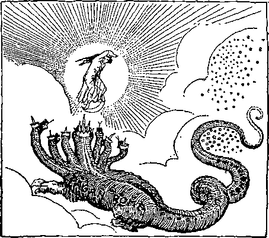PAGAN ROME ATTACKED THE CHURCH
peror’s power, was declared to be the Christian faith. Thus was the mystery of trinity enshrined by a heathen emperor, not baptized—not even sprinkled. Stars of heaven: False stars, “wandering stars,” man-ordained lights of the nominal heavens. (D595) There the bishops became substitutes for the true apostolic stars. To the earth: The effort to gain favor with the world caused the teachers to lose their positions as light-bearers to the true church. (Z.’79-12-2) And the dragon: Imperial Rome. Before the woman: The early Christian church. Devour her child: Absorb it, make it a subordinate feature of the Roman system of government. Soon as It was born: As soon as the development of the clergy class made it impossible for them to be retained longer in the true church.
12:5. She brought forth: In A. D. 325. (Z.’79-12-2) A man child: The Man of Sin, the Papacy. To rule all nations: During the dark ages. Unto God: To be a mighty one, the pope. (C40) And to his throne: Authority, rulership—as Christ’s vicegerent.—A92; B314; Dan. 7 :25.
12 :6. And the woman: The true church. Into the wilderness: Into solitude, an outcast because of fidelity to the truth and the Lord. (B329) She hath a place: “The secret place of the Most High.” (Psa. 91: 1) That they: The antitypical ravens that fed the Elijah class. Feed her there: As Elijah was fed in the wilderness. 1260 days: “A time, times and an half a time.” (C64) Fulfilled in 1260 literal years. (B91) Typified by Elijah’s 3% years in the wilderness, in which there was no rain.— B256.
12:7. War in heaven: Between the two ecclesiastical powers, pagan Rome and papal Rome. Michael: “Who as God,” the pope. (B275; C62) And his angels: The bishops. With the dragon: Attempted to get the temporal power away from the civil rulers. (Rev. 2:12) The dragon fought: Did everything possible to circumscribe the growing power of the Papacy.— B288; Kev. 12:3; 20:2; Z.’79-10-8.
12:8. Prevailed not: The Papacy cam; out of the contest victorious.
12:9. Dragon was cast out: Verses 9 to 12 contain the rejoicings of the Papacy over their triumph. Called the devil: Rome, which, because of its bloody persecutions, certainly has been the most devilish of all governments. (A258) Deceiveth the whole world: By intimating that anybody in it except the pope has any right to say anything about how it should be run. He was cast out: We, the Papacy, are in control! Cast out with him: We, the cardinals, etc., have the positions of power once held by the priests of pagan Rome!
12:10. A loud voice: The boastful claims of the Papacy. (Z.’79-12-2) Kingdom of our God: The Papacy really believed that its exaltation to power was the exaltation of the kingdom of God in the earth. Power of his Christ: The pope really believes he is the vicar of Christ. Is cast down: It seemed to the Papacy that in undermining and supplanting Imperial Rome they had gained a great victory for Christ. Which accused them: Pagan Rome truthfully accused the Papacy of lying, simony, murder, adultery, and every crime on the calendar.—Rev. 2 :13.
12:11. Gained the victory: This is the way it looks to Catholics even to this day. Blood___of the Lamb: “By this sign [the
cross] conquer!” was the crusaders’ standard. Statements of their witnesses: But not by the testimony of history or of God’s Word, both of which show that “their testimony” (i.e., the testimony of the Papacy, in the forged decretals and otherwise) was one of continuous lies. (Dan. 11:27) Their lives loved they not: This was the Catholic viewpoint.
12:12. Ye heavens: Catholic heavens— popes, bishops and prelates. Are resident in them: “The under-priests of Papacy, not parts or members of the church or
hierarchy, but called ‘brothers’ ” (B303)
Woe to the earth: It seemed to the Papacy as though the Millennium, and the great time of trouble which the Scriptures everywhere show is to precede it, were just at hand. (Rev. 7:1) Devil is come down: The papal thought that pagan Rome was a good representative of the devil is quite right; and the Scriptures return the compliment. Having wrath: Being very greatly angered at Papacy’s aggressions. His time is short: Had Papacy been able to bring it about it would surely, in time, have deprived all the rulers of the world of every particle of civil, social, ecclesiastical and financial power.
12:13. When the dragon: The civil powers of the old Roman Empire, under the control of the Papacy. Cast unto the earth: Deprived of the superstitious reverence now almost wholly absorbed by the Papacy. See B337, 338. He persecuted: Not on his own account, but under the orders and instructions and encouragements of the Papacy, and to win papal approval.
12:14. And to the woman: The true church. Given the two wings: Old and New Testaments. Of the great eagle: Symbol of wisdom. (Rev. 4:7) “I bare you on eagle’s wings, and brought you unto myself.” (Ex. 19 :4; Deut. 32:11, 12) Into the wilderness: The place deserted, away from the world. (Z.’79-12-2) She is nourished: By divinely provided means, of which almost no records have been permitted to survive the ravages of papal persecution. A time, etc.: 1260 years. A. D. 539 to 1799. From: Safe from. The serpent: Satan himself, the real instigator of all persecutions from the Lord’s time even until now.
12:15. Out of his mouth: At the time of the French Revolution. Water as a flood: A great flood of truth regarding priestcraft and kingcraft. After the woman: The protesting church of God. To be carried away: Overwhelmed by the anarchy
which he expected would result.
12:16. And the earth: Order-loving peo-ple
pie. Swallowed up: Absorbed.—C65.
12:17. Dragon was wroth: This will apply with great force shortly. Remnant of her seed: Not of the apostasy. (Z.’79-12-2) Commandments of God: “The law is fulfilled in us.” (Rom. 8:4) Have the testimony: Have his word as the man of our counsel.—Rev. 14:12.
13:1. Sand of the sea: The sea represents the masses not under religious restraint. It is this symbolic sea that is to overturn and swallow up every system of iniquity in the great time of trouble. The proper undertanding of the vision is located down at the edge of this sea, near the time of trouble. And I saw a beast: The
Antichrist, that Wicked One, the Man of Sin, the Mystery of Iniquity, the Son of Perdition, the Abomination of Desolation, the Little Horn, the Papacy. (B272. 277, S33) Up out of the sea: See Rev. 17:15; Psa. 65:7; 93:3, 4; Isa. 57: 20. At the time of Papacy’s birth the masses of the Roman people had ceased to have reverence for the ancient mythology of pagan Rome. Having ten horns: See Rev. 12:3; Dan. 7: 7, 20; Rev. 17:3, 9-12; 5:6; 1 Sam. 2:10;
THE PAPAL BEAST
Deut. 33:17; 1 Ki. 22:11. Upon his horns: The Papacy ruled not directly, as did pagan Rome, but through other powers to which it was joined. Ten crowns: In this calculation are included the three potential races plucked up to make way for the Papacy. (Rev. 12:3; 17:3, 9) Upon his heads: The seven kingdoms that still survive: Spain, Portugal, France, England, Germany, Austria, Greece, and their past and present dependencies. Name of blasphemy: Every one of these kingdoms falsely claims, or has claimed, to be a part of the kingdom of God, though actually all part of the one great kingdom ruled by “the god of this world.’’—2 Cor. 4:4.
13 :2. Tike unto a leopard: Mottled; in one place liberal, almost white in its appearance; in another black, corrupt, degrading and brutal; in other places neutral or tawny, corresponding to the natural depravity of the people. (Z.’99-262) Other peculiarities of the leopard are its activity, vigilance and secretiveness; so with Papacy. Feet of a bear: Papacy moves cautiously and gets possession of kingdoms rather by strategy than by battles. The bear hugs its prey to death with its paws. Mouth of lions: Papacy had a mouth of this sort; i.e., it claimed to be the kingdom over all kingdoms by divine right, the kingdom of God, which was to break in pieces and consume all others— a strong mouth. (Z.’79-12-2) And the dragon: Imperial Rome, represented by Constantine. Gave him his power: Gave the Papacy the power of pagan Rome. (B288) And his seat: His place in the city of Rome, by transferring his own headquarters to Byzantium, “New Rome.” And great authority: At the bands of the Roman Emperor Justinian, in A. D. 539.— Rev. 12:3-5.
13:3. One of his heads: One of the dragon’s heads—Papacy. As it were wounded: Whenever the Scriptures use the expression “as it were” (as in Rev. 9:7, 9), what seems or appears is not actually the case. Wounded to death: By the great Reformation. Wound was healed: Because the reformers did not keep on with their work, but made new unions of church and state, thus renewing the very harlotry they had denounced in the church of Rome. (C112) And all the world: The symbolic earth, obedient to the ruling powers.—Z.’80-l-l.
13:4. Worshipped the dragon: Civil power, pagan Rome. (Z.’79-12-2) He gave the power: Their hold over the people was strengthened rather than weakened by allegiance to Papacy; for Papacy in turn recognized them as of divine appointment. Worshipped the beast: Papacy. (B277) Saying: Having concluded that the ecclesiastical power was the stronger. Dike unto the beast: What other character in history ever made such claims or received such homage? (Rev. 18:18) To make war: To contend.—Z.’80-l-l.
13 :5. Unto him a mouth: The mouth of Antichrist is one of its leading characteristics. (B305) And blasphemies: Indignities to Jehovah. (B306) In the titles assumed by the popes. (B307) In the claims to the exercise of divine power on earth. (B311) In the claims that the pope is God on earth. (B314) In the claims that the pope is the sole judge of right and wrong. (B317) In the claims of papal infallibility. (B318) In proscribing the Bible. (B319) In the doctrines of eternal torture’ and purgatory. (B323) In masses for the dead and in the sale of indulgences. (B324) Do what he will: He still continues, though he can no longer do what he will. Forty-two months: 1260 days, or a “time, times and a half,” fulfilled in 1260 literal years.—B91, C64.
13:6. Against God: By misrepresenting his character, plan and word. Blaspheme him: His character; by the thousands of monstrous edicts, bulls and decretals issued in his name. And his tabernacle: The true church; by the false system which took its place. (B306) That dwell in heaven: “Our citizenship is in heaven.”—Phil. 3:20, R. V.; Eph. 2:6.
13:7. War with the saints: See Rev. 2: 20; Acts 9:32; Rom. 15:25; 1 Cor. 6:1. Overcome them: See Rev. 6:8; Dan. 7:21, 22. Over all kindreds: This has been literally fulfilled, but will have a secondary fulfillment soon, through the beastly governments that will be Papacy’s living representatives in spirit if not in fact.—Rev. 17:15.
13:8. Shall worship him: Shall wonder respecting him and homage him. (D580) The book of life: “The Lamb’s book of life is the only church roll of any value.” (Z.’80:l-l; Psa. 69:28; Dan. 12:1; Lu. 10: 20; Phil. 4:3; Rev. 3:5; 21:27) The Lamb slain: In the divine plan.—F65; 1 Pet. 1: 20; Eph. 1:4; Rev. 5:6; John 1:29, 36; Acts 8:32.
13:9. Let him hear: “Only those whose ears have been circumcised would be able to receive these statements.”—Z.’80-l-l.
13:10. Into captivity: “The papal system was one of bondage. All who acknowledge its claims must of necessity render implicit obedience.” Killeth with the sword: Such as used the “sword of the Spirit, which is the Word of God,” in defense of their liberty. Killed with the sword: Were put to death by Papacy. (Z. ’80-1-2) Honesty of the saints: “This was a severe test of true saintship. Those whose names were written in heaven stuck to the Word, and sealed their testimonies by death.” (Z.'80-1-2) The same situation now confronts the saints in the matter of aiding in some way the murderous systems which are permeated by Antichrist’s spirit. —Rev. 14:12.
13:11. Another beast: If the preceding wild beast represented an ecclesiastical power, as we have just seen, then this beast called another should be understood to represent a similar ecclesiastical or church power. “There is but one church which this symbol fits perfectly, viz.: The established ‘Church of England and Ire-
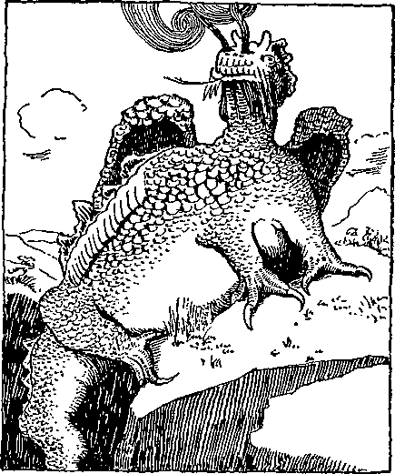THE ANGLICAN BEAST
land.’ This system, like the papal, was a blending of church and state, an ecclesiastical empire, a church united in the government; it is the latter relationship that constitutes a ‘beast.’” (Z.'80-1-2; Rev. 13': 14, 15; 14:9, 11; 15:2; 16:2, 13) Up out of the earth: “From the visible church of God.” He had two horns: The Church of England and Ireland. (Z.’05-99) As a dragon: As any civil power.—Z.’80-1-1.
13:12. Of the first beast: The Papacy. (B27) Before him: “This shows that the second does not take the place of the first beast, but that they exist contemporaneously.” (Z.'80-1-2) It also shows that the sufferings of the last members of the body of Christ, under governments hitherto liberty-loving, may be expected to be as great as in Papacy’s palmiest days. causeth the earth: Those obedient to and supporting the beast. Which dwell therein: Independent Christians who do not support either of these systems. Worship the first beast: The Church of England claimed all the powers and authority which Papacy claimed. And by establishing a similar system, devoid of some of the grosser papal errors, it attracted the attention of all to those errors, as being the only possible fault of Papacy. And when some of those errors were shortly after discarded by Papacy, the inference was that both beast systems were right.
13:13. Great wonders: The strongest text of Scripture forewarning against the Church Federation is the strongest text of Scripture forewarning against spiritism. (Isa. 8:9-22) It is not by accident that these warnings are placed together. Down from heaven: “Fire from heaven was the test by which Elijah proved that Jehovah is the true God, and was the method by which Jehovah accepted the offerings made to him on the day of Atonement. (1 Kings 18:38; Lev. 8:24) As soon as the beast has apparently made out a clear case, perhaps by outward, visible evidences, but surely by evidences from the Scriptures (distorted) of its standing with God, we may expect a very prompt and practical use of the “fire” (Luke 9:54) thus obtained. Truth shall fall in the streets. (Isa. 59: 14) Righteousness will be unable to enter under the stress of the new order of things. For a time it will appear as though a great Christian victory had been won, shared equally by Papacy and Federated Protestantism—no longer protesting.” (Z.'13-343) On the earth: Amongst his own followers and among Christians unattached to either beast.
13:14. And deceiveth: Leads into error and bondage. Them: The independent Christians not allied to either of the two beasts. Of those miracles: Signs, the laying on of hands, and the claim that none are qualified to understand the Bible aright except those consecrated by the imposition of holy orders by the episcopal succession. Sight of the beast: An expression thrown in to show us that the Papacy is still alive and active at the time the image of the beast is formed. Saying: By its own example. Dwell on the earth: Independent Christians. Image to the beast: The Evangelical Alliance, formed Aug. 19, 1846. (Z.’97-22) “How much the image resembles the papal beast may be judged from the fact that Papacy acknowledged the image—owned it as a creditable likeness—by the pope sending ‘Greetings’ to the Alliance. As Papacy established the priesthood over the church, so Protestantism has established the same, and there is no opportunity for the body to edify itself, every joint taking part. (Z.'80-1-2) The Alliance endeavored to establish a standard of orthodoxy. They saw the power of the papal argument that it is the church, and that all others are heretical. In this sense it was a copy, or
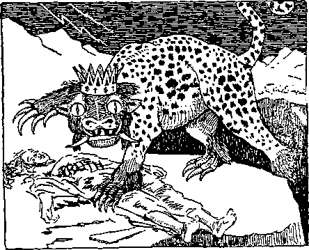THE IMAGE OF THE BEAST (Federated Protestantism)
image, of the Papal institution.” (Z.’13-342) Wound by a sword: Which was smitten by the sword of the Spirit in the hands of the reformers, but not persistently enough to kill it. (Heb. 4:12) And did live: “It is important to observe that the wound of one of the heads is here ascribed to the whole beast.”
13:15. And he: The Episcopal Church, or Church of England. (Z.’99-170) Had power: Supposed authority. (Z.'95-223) To give life: Pneuma, invisible power. (E189) The effect of apostolic succession. (Z.'06-7) The change of name of the “image of the beast” to that of “false prophet” (Rev. 16:13, between the sixth and seventh plagues, indicates it was vitalized prior to the publication of Vol. VII (the 7th plague). Image of the beast: A union of protestant denominations (The Federal Council of Churches) remaining separate from and yet in active co-operation with the Papacy, giving increased powers to both. (D581) The Evangelical Alliance of protestant denominations, under the protection and control of the spirit of Papacy. “Say ye not, A confederacy.” “Behold they shall surely gather together but not by me.” (Z.’02-232) Represented by the image of gold which Nebuchadnezzar set up in the plain of Dura. (Z.’99-168) Typified by Belshazzar’s feast. (Z.’99-175) Typified by Jonah’s gourd. (Z.’05-167) Typified by the daughter of Herodias. (Z. 98-95) The false Christ against which Christ particularly warned his church. (D580) Should both speak: It began to speak in Toronto, in February, 1918. Worship the image: Bow the knee, submit to its unscriptural, illegal demands. This is the great test or trial upon professing Christians in every province of symbolic Babylon in the end of this age. And we have the same inspired record’ as authority for the statement that only those -who refuse to render worship to those powerfully influential religions svstems (svmbolized by the beast and his image) will be counted by the Lord as “overcomers” and be made his joint-heirs as members of his elect church. (Rev. 20:4) Should be killed: Excommunicated. (Z.'80-1-2) Have their influence, reputation, standing and liberty as Christians cut off. (Z.’92-159) When the image is “vivified” its bitter fruits of error will manifest themselves in tyranny as during the dark ages. (Z.'04-212) “To us the Scriptures indicate that the prosperity of the federated protestant ‘image’ will for a little time be so great, so pronounced, and its arrogance become so great, that the sympathy of the masses will be entirely alienated and turned into bitterness.” (Z.’10-309) “It may be objected that the church would have no part in the killing of their fellow worshippers, but ecclesiastics themselves have a better understanding of the ecclesiastical mind and ecclesiastical conscience. The following is from the pen of the Rt. Rev. Chas. D. Williams, Protestant Episcopal Bishop of Michigan: “ ‘It is an appalling thought that the Church should have bad a part in the crime of Calvary, and yet it did, and that the chief part. The ecclesiastical mind is a closed mind— and there is nothing it resents so much as being pried open to receive a new idea.’ ” (Z.’15-339) Tyndale and some of the others interested in the Bible suffered martyrdom, as enemies of the ‘apostolic bishops,’ and their creeds and institutions.—Z.’15-253.
13:16. And he causeth all: “So powerful will Federated Churchianity become that even to criticize it will be a ‘crime’ worthy of crucifixion in some form—socially and financially, if not physically. Politicians will quickly realize that their bread is buttered on that side, and be ready to enact legislation of any kind desired by the Federation.” (Z.’06-6) “The church nominal, in her false position would be anxious to stifle the reproofs and to destroy the reprovers, and the effect would be that the civil power would be induced to pass such legislation as would restrain the liberty of the faithful ones and hinder them from public utterances;—as John was hindered by imprisonment. Herodias’ daughter (united Protestantism) will become the tool for the destruction of the most loyal servants of God.” (Z.’98-95) Give him a mark: Of fear, sympathy or worship. (D623) In their right hand: By giving support with their influence and means : By contrast with Ex. 13:9; 28:26-38; Deut. 6:8; Z.’07-265; Rev. 7:3; 14:1; Ezek. 9:4-6. In their forehead: Intellects. (B169) By public profession. (Z.'80-1-2) “Consecration to the service of the beast is what is signified here.” This implies a re-establishment of the inquisition soon— in some form of house-to-house “investigation” or public enrollment.
13:17. Might buy or sell: Trade in the truth. (B259) Exchange spiritual doctrines. (Z.’95-177) Be recognized as having any right to teach or preach or baptize or administer the emblems of our Lord’s death, unless licensed by some orthodox member of the image. (Z.'80-1-2) That had the mark: The Evangelical or “orthodox” stamp of approval. (Z.’95-177) Of the beast: Protestants affiliated with the Federal Council of Churches—already “marked,” stamped O. K. by the Papacy. Or his name: Roman Catholics. Or the number: Consent to the principle of clergy domination of public affairs.
13:18. Here is wisdom: Scope of ingenuity. Number of a man: The Man of Sin, the Papacy. (Rev. 19:20; 2 Thes. 2:3) “Here is scope for ingenuity. Let people of shrewd intelligence calculate the number of the wild beast; for it indicates a certain man, and his number is 666.” (Weymouth) Six hundred threescore and six: In the Greek this number is six hundred (represented by the Greek letter X*), plus sixty (represented by the Greek letter £’), plus six (represented by the Greek letter s’ ). On the pope’s crown in the Vatican museum is the recognized and most used title of the pope, VICARIVS FILII DEI (Vicar of the Son of God.) The word VICARIVS is on the top of the threefold crown. The word FILII is on the second circlet; and the words are made from dark, shining precious jewels. The word DEI is on the under part of the threefold crown and is made of 100 diamonds. The words VICARIVS FILII DEI are, it is said, also carved over the entrance to the Vatican. “The following extract on this point is from a work entitled The Reformation, bearing the date of 1832: ‘Mrs. A.,’ said Miss Emmons, ‘I saw a very curious fact the other day; I have dwelt upon it much, and will mention it. A person, lately, was witnessing-a ceremony of the Romish church. As the pope passed him in the procession, splendidly dressed in his pontifical robes, the gentleman’s eye rested on these full, blazing letters in front of his mitre (tiara—
|
crown) : VICARIVS FILII DEI, the Vicar | ||
|
of the Son of God. His |
V |
— 0 |
|
thoughts, with the rapid- |
I |
— 1 |
|
ity of lightning, reverted |
c |
—100 |
|
to Rev. 13:18.’ ‘Will you |
A |
— 0 |
|
turn to it?’ said Mrs. A. |
R |
— 0 |
|
Alice opened the New |
I |
— 1 |
|
Testament, and read: ‘Let |
V |
— 5 |
|
him that hath under- |
S |
— 0 |
|
standing count the number of the beast: for it |
F |
— 0 |
|
is the number of a man; |
I |
— 1 |
|
and his number is Six |
L |
— 50 |
|
hundred threescore and six.’ She paused, and |
I |
— 1 |
|
I |
— 1 | |
|
Miss Emmons said, ‘He took out his pencil, and |
D |
—500 |
|
marking the numerical |
E |
— 0 |
|
letters of the inscription |
I |
— 1 |
|
on his tablet, it stood 666.’ ” |
Total |
666 |
|
14:1. Behold the Lamb: |
See Rev, |
. 5:6; |
13:8; John 1:29, 36; Acts 8:32; 1 Pet. 1:19. On the mount Sion: The return of the Lord is here pictured as accomplished, the sleeping saints raised, and the full number called. This was all fulfilled in 1878.
With, him 144,000: The definite, fixed number for the elect. (F179; See Rev. 7:4) Having; his name: We have both the Father and the Son in our minds. In their foreheads: Isa. 44:5; Rev. 7:3; Ex. 13:9; 28:26-38; Deut. 6:8; Ezek. 9:2-6; Z.’07-265.
14:2. Heard a voice: The message of present truth from the lips of the Lord’s saints on this side of the vail. They are on Mount Zion in the spirit of their minds. From heaven: “We are seated with him in heavenly places.” (Eph. 2:6) Of many waters: A great outpouring of truth, in many tongues. (Rev. 1:15-; 19:6) Voice of thunder: Seven thunders, the seven volumes of Scripture Studies. (Rev. 8:5; 10: 3, 4) With their harps: The Bible testimonies of the law and prophets.—F233.
14:3. A new song: The Lord particularly promised that in this harvest time out of his storehouse would come things new, (Matt. 13:52; 24:45) “so different from the commonly accepted message, misnamed the Gospel, that it would properly be termed a new song.” (Z.’00-37; Rev. 5:9; 15 :3) Before the throne: While still on earth. Gompare Rev. 4:5 and 5:6. The four Beings: Every declaration of present truth has for its object the presentation of one or more of the divine attributes—Justice, Power, Love and Wisdom. And the elders: The prophecies. In all that we do we are pointing to the prophecies and fulfilling them. But the 144,000: It is necessary to be somewhat of an “overcomer” of the world and its spirit ere any would have the courage to sing this song. (Dan. 11: 32; Acts 4:19, 20; Z.’00-37) “Blessed are the people that know the joyful sound.” (Psa. 89:15) Which were redeemed: Agoraso, acquired at the forum.—E443.
14:4. Defiled with women: Earthly church organizations, Babylon, mother and daughters. (B255; Z.’05-222) We have said things about our heavenly Father that we would be ashamed to say about ourselves or of our earthly parents. And now then after we once see that this doctrine is blasphemy against God, if then we wish to uphold earthly systems and give our lives, strength, talents and means, to upholding these diabolical teachings, then we are defiled by the women. Follow the Lamb: On this side of the vail. Whithersoever he goeth: Those who fail to “walk in the light as he is in the light’’ find sooner or later that they “walk in darkness”; for the light goes on and leaves them. (John 1:6, 7; Prov. 4:18) Were redeemed: “The thought is that of public purchase; and all the other uses of this word agorazo, throughout the New Testament, emphatically support a most commercial signification.” From among men: They are a separate class, “from among” men. (E443) From the beginning: “Separated from the entire mass as the best absolutely.—Num. 18:12; Deut. 26:2; Jas. 1:18.
14:5. And in their mouth: By contrast to the lies of the false prophet. No falsehood: They fully and thoroughly believe the doctrines they teach. Without fault: “Faultless before the presence of his glory with exceeding joy.”—Jude 24; Eph. 5:27; Psa. 15:1-5.
14:6. And I saw an angel: The Divine Plan of the Ages, Volume I of the Scripture Studies. Midst of heaven: Amongst Christian people of all denominations. (Matt. 24:31) Everlasting Gospel: The same Gospel preached by our heavenly Father (Gal. 3:8), the Lord Jesus Christ (John 10:16), the holy apostles (Acts 15:13-18), the holy prophets (Acts 3:19-24) and the holy angels (Luke 2:10, 13, 14); but entirely overlooked by the clergy. Dwell on the earth: To independent Christians. (Rev. 13:13, 14) Tongue, and people: All mankind, living and dead.—1 Tim. 2:4-7.
14:7. With a loud voice: By millions of copies, circulated earth-wide. Give glory to him: Rather than to creeds, sects and clergy. Judgment is come: The Millennial Dawn, the dawn of the thousand-year judgment day of Christ, is at hand. (Rev. 15: 4: 11:18) That made heaven: God, our heavenly Father, the Creator of all things. (Neh. 9:6; Psa. 33 ;6, 124:8; Acts 14:15; 17: 24) Fountains of waters: His heaven-sent Word.
14:8. Followed another: Volume II of Scripture Studies. Fallen is Babylon: The name originally signified “God’s gateway,” but afterwards, in derision, it came to mean “mixture” or “confusion”; the nominal church is now generally a gateway to error and confusion of thought—a miserable mixture composed chiefly of tares and hypocrites. (C153, D23, 24) “Intoxicated with the blood of saints and martyrs of Jesus” and with her phenomenal success. (C104) “Babylon is suddenly fallen and destroyed. Howl for her.” (Z.’92-59) Chapters 7 and 9 of Volume II are particularly devoted to this theme. (D23; Jer. 51:8; Rev. 18:2) “This use of the aorist—in the sense of the ‘prophetic preterite’—expresses the certainty of the fall. With the fall of Babylon, the Old Testament connects the redemption of the people of God.” (Isa. 13:19; 47:1; Jer. 51:1-10) The great: Religious government. (D527) All nations have fallen: Become intoxicated with her errors. (C156) “The nations have drunken of her wine; therefore the nations are mad.” (Z.92-59) Passionate whorings: “The ruin of all the nations of earth is here attributed directly to the fact that ‘Babylon made all the peoples drunk with the wine [spirit, influence] of her fornication’ —worldly affiliation.”—C164, 104; Jer. 51: 7; Rev. 2:20; 17:2, 5; 18:3; 19:2.
14:9. A third angel: Volume III of the Scripture Studies followed I and II. With a loud voice: Proclaiming clearly, in chapters 2, 4 and 6. Worship the beast: The Papacy. And his image: The Evangelical Alliance-Spiritism combination. (Rev. 13:11, 13, 14, 15; 14:11: 15:2; 16:2, 13: 19:20; 20 :10: Matt. 24 :24) Receive his mark: See Rev. 13:16. 17.
14:10. Wine of God’s wrath: The message of present truth. Undiluted: Different from Babylon’s mixed wine. (Isa. 5:20-22) Cup of his great indignation: “The Lord our God hath put us to silence and given us water of gall to drink, because •we have sinned against the Lord.” (Jer. 8:14; Isa. 51:17-20; Jer. 25:26-28; Rev. 18: 6; 16:19; Psa. 60:3; 75:8) And tormented: Whoever worships, reverences, human institutions and doctrines more than the Word of the Lord has experienced the torment here specified. Brimstone and fire: Doctrines of hell fire and brimstone have been his portion. (Rev. 9:17-19) Messengers saintly: The harvest workers on this side of the vail. (Matt. 13:39) Presence of the Lamb: “In the days of the Son of Man,” after the second advent has taken place.
14:11. And the smoke: The remembrance. Of their torment: Which occurs in the great time of trouble. For ever and ever: Until the beast and his image are utterly consumed. They will never forget the distress, vexation and torment to which they were subjected during this harvest time, while worshipping Babylon's creeds, doctrines and organizations. (Z.’83-4-8) No rest have they: A literal fulfillment of this is expected. (Rev. 7:3) Worship the beast: Not a literal beast, but a system, the Papacy. (B277) And his image: Not a literal image, but a system, the Protestant Federation. (D581, H64) Receiveth the mark: Of fear, sympathy or worship.
14:12. Here is the endurance: “Having done all to stand.” (C212) Of the holy: Their crowning trial. Commandments of God: “Thou shalt love thy neighbor as thyself,” “Love your enemies.” etc.
14:13. Voice from heaven: The heavenly Father’s Word. Write: The message found in chapter 9 of Volume III. Blest are the dead: “Ye are dead and your life is hid with Christ in God.” (Z.’83-4-8) “Reckon ye yourselves dead.” From henceforth: From 1878 onward. (C240) Saith the Spirit: The Word of God, in Rev. 6: 11. See 1 Thes. 4:16. For they rest: Typified by the reign of Solomon, when reigning in peace, at rest from all bis enemies. (Z.’95-278) From their labors: “Poor, bruised ‘feet,’ now despised of men, none but yourselves fully appreciate your privileges.” (C326) Though their works: Of gathering the elect, of proclaiming the reign of Christ begun, and of declaring the day of vengeance. (D624) Follow after: Will continue; do not cease with the change of nature.—C238, D622.
14:14. A white cloud: See Rev. 10:1. As the cloud indicates the time of trouble, so the white indicates the pure motive back of it. The Son of man: Christ, who once became son (in law) of Adam. (E165) A golden crown: The divine nature. (T18) And in his hand: The Lord is to be present as reaper during the time of harvest of the Gospel age, as typified by his presence as reaper during the time of harvest of the Jewish age. (B150. 238) A sharp sickle: Present truth.—A238.
14:15. And another angel: The witness to the Lord in the Land of Egypt. (Isa. 19:20) See pages 309, 311, Vol. III. and observe that Chapter 10, Vol. Ill, Scripture Studies, is in reality a separate book. With a loud voice: Throughout the 66 pages of his testimony. That sat on the cloud: To our present Lord. The time is come: The Great Pyramid confirms the Bible’s teaching that the time of harvest has come. For the harvest: “The daughter of Babylon is like a threshing floor. It is time to thresh her. Yet a little while and the time of her harvest shall come.” (Z.’92-59) Is ripe: “The use of a sickle is to gather wheat, not to ripen it.”
14 :16. That sat on the cloud: The Lord Jesus, during his Parousia, overruling and withholding the time of trouble. Earth was reaped: Reading verses 13-16 connectedly, we note that the resurrection of the sleeping saints is recorded, and is immediately followed by the harvest. This suggests that the harvest began in 1878.
14:17. And another angel: Pastor Russell himself, after the harvesting of the saints was virtually finished. Out of the temple: The church in glory. Which is in heaven: On the other side of the vail. A sharp sickle: The privilege of guiding the work of bringing forth out of the divine storehouse all the Master’s store of provisions, as needed, and of directing the execution upon the nominal church of the chastisements promised in the holy Word. —Luke 12:44; Psa. 149:5-9; Isa. 21:1-10.
14:18. And another angel: The corporate body which Pastor Russell organized to finish his work. See Rev. 8:3-5, which describes the same matter as here narrated. From the altar: The place of sacrifice. The Society is maintained by the sacrifices of the saints. Power over fire: Authority over the publication and distribution of expositions of the prophecies, symbolical “coals of fire.” (Isa. 6:6; Ezek. 10:2) With a loud voice: What a disappointed cry went up from the whole church that dear Brother Russell went beyond the vail without writing the Seventh Volume of Scripture Studies! Thy sharp sickle: Oh, that the Lord would wind up the present order of things, in whatever way he might elect! (Joel 3:9-14, 18; Matt. 13:3943) Vine of the earth: In the Adventist cluster there are 6 bunches of smaller sects; in the Baptist 15; Brethren (Dunk-ard) 4; Plymouth Brethren 4; River Brethren 3; Catholic Apostolic 2; Churches of the Living God 3; Churches of the New Jerusalem 2; Disciples of Christ 2; Evangelical Bodies 2; Faith Associations 9; Friends 4; Latter-Day Saints 2; Lutheran 21; Scandinavian Evangelical Bodies 3; Mennonite 13; Methodist 16; Moravian 2; Pentecostal bodies 2; Presbyterian 12; Protestant Episcopal 2; Reformed 4; United Brethren 2. Are fully ripe: All these sects have long ago taken their stand against the truth and therefore against the Lord.—Isa. 65:17; Rev. 17:5; Jer. 6:9-30.
14:19. Thrust in his sickle: Distributed far and wide the good news that nominal Zion’s travail is at hand, and the new and better order of things near. Gathered the vine: Brought together all the sects in virulent opposition to the message of the truth. At this moment they are crying for our life blood. The great winepress: “The fruitage of the true Vine is love, and is precious to the Father; but the fruitage of the Vine of the earth is selfishness in various forms, and will be ultimately gathered into the great winepress of the wrath of God in the great time of trouble with which this age will close.” (F207; Rev. 19:15) “Though controversy and words of passion and arguments will be and are among the weapons used in this battle, especially in the beginning of it, yet it will not end with these. Every prophetic detail indicates that before it ends it will be most sanguinary, a fierce and terrible storm.”—D539; Jer. 25:26-38; Isa. 63:1-6.
14:20. And the winepress: The work that will squeeze the juice out of the '“abominations of the earth.” Was trodden: First trodden—made ready for other “feet.” “The treading of the winepress is the last feature of harvest work. The reaping and gathering is all done first.” (D18) Without: At a distance from. The city: The I.B.S.A. Bethel, Lord’s appointed center for the harvest work. See Rev. 19: 15. And blood: Teachings which though truthful will be death-dealing and seem “bloody” (repulsive) to sectarianism. “And blood came out of the winepress even unto the horse bridles” is a parenthetical clause. Without this parenthesis the verse reads: “And the winepress was trodden without the city by the distance of a thousand and two hundred furlongs.” The winepress: The exposition of the prophecies of Revelation and Ezekiel. The horse bridles: So deep as to strangle and drown the old false doctrinal hobbies so long ridden. Sectarianism will be the universal laughing-stock. Hundred furlongs: A furlong or stadium is 606% English ft.; 1200 stadii are 137.9 miles. The work on the prophe-
Notes and Comments 15:3 cies referred to in this verse was done in Scranton, Pa. As fast as it was completed it was sent to the I. B. S. A. headquarters. Shortest distance, via car lines, Lackawanna cut-off, ferries, etc., from place where the winepress was first trodden by the_feet members of the Lord is 137.9 miles.
15:1. Another sign: Seemion, the same word used by our Lord when he said, “Then shall appear the sign of the Son of Man.” The proofs of the Lord’s second advent are here referred to. In heaven: Among God’s professed people. Great and marvelous: Very different in tone and contents from other Bible “helps.” Seven angels: The seven volumes of Studies in the Scriptures. Seven last plagues: Typified by the last seven of the Egyptian plagues. (F175, S80) Wrath of God: Their united testimony is that the Times of the Gentiles have expired, the reign of Christ has begun, every unrighteous potentate on earth—civil, social, ecclesiastical and financial—must give way to the new order of things, and will not give way peaceably, but must be ejected.
15:2. A sea of glass: The time of trouble made transparent. We can see why the Lord permits it, and see the Golden Age of glory, peace and divine blessing that lies just beyond. Mingled with fire: The coming anarchy. Gotten the victory: Who understand and live in harmony with the knowledge that both Papacy and Protestantism are of Satanic spirit. Over the beast: The Papacy. (B277) And over his image: The Protestant Federation. (D581) And over his mark: Of fear, sympathy or worship. (D623) Number of his name: Who refuse to let any stand for them in the place of Christ. (Rev. 13:1418) Stand on the sea: Not in among the restless and discontented, but on a higher plane. (Heb. 13:5) The harps of the Lord God: The Bible testimonies of the law and prophets.—F233.
15:3. And singing the song: The feet members of the body of Christ during
this harvest time harmoniously declare the glad tidings of restitution. Of Moses: Taught by him in the law, “which was a shadow of good things to come.” Typified by Moses’ song of deliverance from the Egyptians after crossing the Red Sea. (Z.’07-158) Servant of God: See Ex. 14:31. Song of the Lamb: Clearly stated in the writings of the New Testament. (C237) Are thy works: Man’s condemnation, redemption and restitution. (Z.’00-310) Just and true: Including the divine dealings with the great company class, and with those who go into the second death. (T41) “Justice is the habitation of thy throne.”—T124.
15:4. Shall not fear thee: Not venerate thee. And glorify thy name: Instead of howling, gnashing the teeth and blaspheming that name throughout eternity. Thou alone art holy: Thou art entirely holy. Thou art bountiful. For all nations: Living and dead. “In thee and in thy seed shall all the nations of the earth be blessed.” (Z.’00-311) Shall come: God’s original plan cannot fail in any particular. For thine acts of justice: Diakaiomata, righteous acts. (F52, H37, Z.’80-2-5) Are open before thee: There was a time when we could not sing this song. (Psa. 137) We looked forward with dread to the time when the Lord’s judgments would be made manifest. We did not see that the Judgment Day is a day of “assurance to all men.”—Acts 17:31; Rom. 5:18; John 12:31, 47; 1 Tim. 5:24; 1 Cor. 11:31; 1 Pet. 4:17; Rom. 14:13; Matt. 7:1, 6, 15, 16; Prov. 15:3; Ecc. 12:14; Psa. 90:4; 2 Pet. 3:7, 8; Gen. 2:4; Heb. 3:8; 2 Cor. 6:2; Luke 12: 14; Acts 5:31; Judges 3:9; Isa. 1:26; 1 Cor. 6:2; Rev. 20:6; Isa. 2:4; 11:4; 26:9; 2 Thes. 1:7; Isa. 65:17; 1 Cor. 15:25; 1 Chron. 16: 31; Psa. 96:13; 98:1-9; 72:1-14.
15:5. And after that: Another vision of the same thing. Of the tabernacle: Pastor Russell was given a clear, beautiful, complete comprehension of the plan of God as revealed in the Tabernacle arrangements and sacrifices. (Acts 7:44) This is the foundation of all his works.
15:6. Out of the temple: The seven volumes of Scripture Studies emerged, all in harmony with the teachings of the Tabernacle, from which they proceeded. Seven last plagues: Though counted as plagues by ecclesiasticism, they are in reality blessings, destined to rid the earth of every obnoxious thing, not the least of which are the great whore and harlots, large and small, that have defiled the earth with their unclean doctrines. (Rev. 17:5; Z.’08-119) Clothed in: Printed upon. Bright linen: White paper. A different word from that in Rev. 19:8. The word here used is suitable as describing priestly attire and refers to ministrations on this side of the vail. The Scripture Studies, are servants of the church—righteous servants, clad in the Lord’s robe. (Rev. 1:13) Having their breasts: Front covers. Girded with golden girdles: Stamped with gold.
15:7. The four beings: Heavenly wisdom. (Rev. 4:7; Matt. 24:25; Jas. 1:5; 3: 17; Ezek. 10:2, 7) Golden vials: The message of present truth. “The vial was the shallow bowl in which they drew from the larger goblet.” (Psa. 79:6; Jer. 10:25; Zeph. 3:8) Wrath of God: Against all untruth, injustice and selfishness in organizations, civil, social, ecclesiastical and financial. Liveth for ever: Whereas all of those are to pass away.—Rev. 4:9, 10; 10:6.
15:8. And the temple: The nominal church. Filled with smoke: Confusion, as the deformities of her errors were revealed. The glory of God: The glorious harmony and beauty of present truth. (Z.’82-9-7) And no man: No person of mature thought. The large proportion of new members, now received in the various denominations is from the Sunday School. (Z.’83-6-7) Were fulfilled: Until the seven volumes of Scripture Studies were written, published and circulated. Shortly afterward the true temple will be in readiness, wherein men, women and children of all races and ages will find their hearts’ hunger satisfied.— Hag. 2:6-9.
16:1. A great voice: Pastor Russell was the voice of the Lord thus used. (Rev. 7: 2; 10:3) Out of the temple: He was of the true temple, and “out of” the nominal temple at the time these plagues were poured out. The seven angels: The seven volumes of Scripture Studies. See Rev. 8: 2-5 and 14:17-20. Go your ways: In the original prefaces to the several volumes of Scripture Studies such expressions abound as “I send forth this volume with prayers,” “and now it is sent forth in the faith,” etc., etc.
16:2. Into the earth: Volume I was distributed among thinking, independent Christians. Noisome sore: The book seemed to ecclesiastics like an evil and malignant ulcer, a painful, running sore, which eats, corrupts and destroys. Upon the men: Roman Catholics. And upon them: Protestants affiliated with the Federal Council of Churches.—Rev. 13:11, 13, 14, 15; 14:9, 11; 15:2; 16:13; 19:20; 20:10; Matt. 24:24.
16:3. Upon the sea: Volume II, Scripture Studies, seemed to the beast and his image to reach and affect only the discontented, those who never were very subservient to the ruler of this present evil world or any of his system. Of a dead man: After death the blood separates into a watery liquid, called serum, and a solid substance termed clot. As soon as this separation takes places the clot begins to putrefy or corrupt. Thus it seemed to worshippers of the beast and his image that anybody that would accept the teachings of Volume II would be in a hopeless condition. Died in the sea: To the worshippers of the beast and his image it seemed as though such would be lost and would surely go to hell to be tormented forever.
16:4. Fountains of waters: It seemed to the worshippers of the beast and his image that the teachings of Volume III of the Scripture Studies had contaminated the Scriptures, the waters of life, at their very source, by extending the call to people to come out of Babylon while they were busy trying to get people in. Became blood: Seemed repulsive, undesirable, bloody.— Z.’07-279; Ex. 7:20; Rev. 14:20.
16:5. Angel of the waters: Volume III, Scripture Studies. Art, and wast: See Rev. 1:4; 15:3; 19:2. The holy: The Lord, the Holy One, was present at the time Volume III was written. Judged thus: Made the beautiful Harvest truths appear “bloody” to those not consecrated.
16:6. Shed the blood: Literally and figuratively. (Matt. 23:34, 35; Rev. 13:15; 18: 24) They are worthy: See Rev. 14:20; Isa. 49:26.
16:7. The altar: The “altar to the Lord in the midst of the land of Egypt” (Isa. 19 :19) at the time these plagues are being poured out upon the antitypical Egyptians, is the Great Pyramid, discussed in a separate section of Volume III. Lord God Almighty: The Lord Jesus. (Rev. 1:8; John 5:22; Matt. 28:18) Thy judgments are: The teaching of the Great Pyramid is in full accord with the rest of the book. See Rev. 14:15; C315.
16:8. Upon the sun: Volume IV of Scripture Studies, as soon as published, was sent free to all clergy whose names could be obtained. They are taught, and teach others, that they are important luminaries in the heavens, suns, rivalling in brilliancy and wisdom the Lord himself. To scorch men: Greek “the men,” i.e., the ■worshippers of the beast and his image. With fire: Perhaps some of the clergy became a trifle warm as they read Volume IV, as their later conduct seems to suggest.
16:9. And men: Greek, “the men;” the clergy. With great heat: Became warm, indignant at the Pastor’s kindly explanation of the whore and the harlots, and the plainly evident application to Papacy and Protestantism. The name of God: “The Greek theos (god) does not invariably refer to Jehovah, but signifies a mighty one. In the following texts the word god (theos) is used to refer to others than the one supreme being, Jehovah—viz.:—John 10: 34, 35; Acts 7:40, 43; 17:23; 1 Cor. 8:5.” (B274) Over these plagues: Misrepresented the name and character of the mighty one, Pastor Russell, to whom the Lord committed the task of presenting to his church this meat in due season. This misrepresentation burst like a storm after the publication of Volume IV.
16:10. And the fifth: Volume V of Studies. Seat of the beast: Thoroughly and scripturally analyzing the subjects of trinity, human immortality and eternal torment, the foundation of all papal doctrine, as well as constituting a large part of the stock in trade of the protestant aggregation. Full of darkness: Complete ignorance of the truths on these subjects as taught in the Bible. Gnawed their tongues: Chewn their words.—Z.'00-148.
16:11. And blasphemed: Continued to slander and misrepresent. (Z.’00-148) The God of heaven: “In token of entire allegiance to the beast.”
16:12. And the sixth: Volume VI of Studies in the Scriptures. River Euphrates: Seemed to the worshippers of the beast and his image to be instituting a new and horrible thing, a people’s church, in which there is no place for clergy, collections, church edifices, reverence for one day above another, or in fact any of the customs cherished in the nominal church. Was dried up: Was turned aside; the people withdrew their support. (B209: D24; Z. ’09-83; Z.’14-133; Z.'10-324; Z.’10-373) Way of the kings: The little flock of jointheirs with Christ. (E487) Of the East: From which comes the Sun of Righteousness. (D653) Might be prepared: Cyrus, who with his army overthrew literal Babylon, was a figure or Illustration of Messiah. King of kings and Lord of lords. —Isa. 41:25; 44:28; 45:1-14; Z.’09-174.
16:13. Three unclean spirits: Denoting doctrines of demoniacal origin. (E320, 295; Matt. 10:1; Mark 1:26; Luke 4:33) As frogs: The croaking of the frog spirits, or doctrines, will gather the kings and princes, financial, political, religious and industrial into one great army. The spirit of fear, inspired by the croaking, will scourge the passions of otherwise good and reasonable men to fury—desperation. In their blind following of these evil spirits, evil doctrines, they will be ready to sacrifice life and everything on what they mistakenly suppose is the altar of justice, truth and righteousness under a divine arrangement. Of the dragon: The three fundamental truths of history are man’s fall, redemption and restoration. Stated in other language these three truths are the mortal nature of man, the Christ of God and his Millennial Kingdom. Standing opposite to these Satan has placed three great untruths: human immortality, the Antichrist and humanitarianism, as that term is used to represent moralistic self-regeneration. It is this last feature of Satan’s work that is mentioned first, because it deceives more people and turns them away from the hope of the Messianic kingdom. The thought that human nature is self-perfectable has its origin in conceit, and with conceit come intolerance, hate, murder and that false patriotism which has drenched the world with blood. Of course the object has always been “the betterment of the race.” Preachment of such “humanitarianism” has persistently proceeded from the mouth of the dragon, from Babylon’s day till now. Nowhere in the New Testament is hatred of other peoples encouraged. Everywhere and always it is forbidden; and yet, under one guise or another it has been encouraged for centuries by the clergy class who should have been preaching the message delivered to them by the Prince of Peace. Of the beast: The Antichrist doctrine of the divine right of the clergy was the primary cause of Kaiserism. This frog has been coming out of the mouth of the papal beast for sixteen centuries. The Kaiser and his ancestors were mistaught by the clergy that they reigned by God’s appointment. This has led them to justify themselves in all the devilish things they have done. Of the false prophet: The one cardinal error upon which all protestant (false prophet) sects agree is the doctrine of human immortality, the original lie told in Eden. (Gen. 2:17; 3:4) In speaking of it our Lord says: “When he speaketh the lie, he speaketh of his own.” (John 8:44, Diaglott) Speaking of it again, the Apostle Paul says, of the worshippers of the
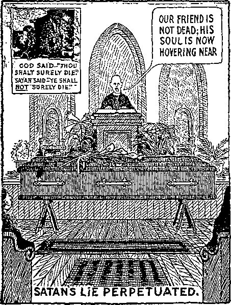beast and his image, “They admitted not the love of the truth that they might be saved. And on this account God will send to them an energy of delusion, to their believing the falsehood.” (2 Thes. 2:10, 11) In each case the Greek gives the definite article.
16:14. Spirits of devils: See Eph. 6:12. Working miracles: It is very possible that the strongest “proof” of the immortality of man will yet be obtained by the false prophet through materializations of evil spirits, perhaps first at preachers’ meetings, and afterwards in public. We will wait and see. Meantime, the mental invasions indicated in Rev. 7:3 and 2 Thes. 2: 11 seem to have abundantly manifested themselves. To the battle: Of which the present horrible European war is only the preliminary skirmish. (Rev. 17:14: 19:19) “This battle, which will end with the complete overthrow of earth's present rulership [Satan], has already begun. The gathering of the armies is plainly visible from the standpoint of God’s Word. The sword of truth, already sharpened, is to smite every evil system and custom—civil, social and ecclesiastical. The internal conflict is already fomenting. It will ere long break forth as a consuming fire; and human systems, and errors, which for centuries have fettered truth and oppressed the groaning creation, must melt before it. Yes. truth—and widespread and increasing knowledge of it—is the sword which is perplexing and wounding the heads over many countries.” (Psa. 110:6; B101) “The Lord’s saints are not to be in this battle at all. God’s consecrated people, longing at heart for Messiah’s kingdom and the glorious year of jubilee and restitution which it will inaugurate, will patiently abide the Lord’s time, and wait unmur-muringly for it. Anarchists, socialists, and hot-headed radicals of every school of reason and unreason, will be in the forefront of that battle.”
16:15. I come as a thief: Without noise or other demonstration to attract attention. (B142) The Lord will be present unseen while the plagues are being poured out. (Z.’83-7-7) A thief comes unexpectedly, for the purpose of securing jewels only. (Mal. 3:17; 2 Pet. 3:10; Rev. 3.3; Matt. 24:42-44; 1 Thes. 5:2) That watch-eth: For the revealment, uncovering, unvailing (as of a thing previously present but hidden). The name of the last book of the Bible is from the same root— Apocalypse or Revelation. (Z.’92-92; 1 Cor. 1:7; 1 Pet. 1:7; Lu. 17:29, 30) Keep-eth his garments: Holds fast to his pledge of consecration even unto death. Lest he walk naked: As the nominal churches are doing. See his shame: (Rev. 3:18) “The exposure to the world that they lack what constitutes the Christian state.”—Matt. 5: 43, 44.
16:16. They gathered them: The three unclean spirits do the gathering. (Rev. 19:19) Together: The very thing which they sought to avert by their union, federation, etc., will be the very thing that they will hasten. Armagedon: Meaning “Mount of Destruction”, indicating what will be the end of all systems of oppression when they shortly unite in one cause against the masses of the people and their liberties. (Z.’83-7-7) What we are to expect as the fulfillment of this would seem to be, that there will be some mustering of strength—some rallying of forces—some opposition made to the kingdom of God in the gospel by the powers here referred to which would be decisive in its character. Had God lifted the vail of ignorance a thousand years sooner, the world would have lined up for Armageddon a thousand years sooner.
16:17. And the seventh: Volume VII, Scripture Studies. Upon the air: Seemed to the clergy and their henchmen to be directed against the ruling powers. A great voice: An earnest and vigorous setting forth of this prophecy and that of Ezekiel. Out of the temple: The true church. Saying, It is done: See title of Volume VII.—Ezek. 9:11.
16:18. There were thunders: Seven of them—indicating wide-spread interest in the Scripture Studies; also some thundering by the esteemed clergy. And lightnings: A good lighting up of the dark places of the ecclesiastical firmament. And voices: The “voices” of the great company, who, after the little flock have gone beyond, will display unparalleled energy and faithfulness amid unparalleled difficulty. (Rev. 11:15; 8:5) A great earthquake: The same mentioned in Rev. 8:5; 11:19 and 1 Kings 19:11, 12, following the war. For a brief time, as we understand the Scriptures, the combined forces of Armageddon will triumph. Free speech, free mails, and other liberties which have come to be the very breath of the masses in our day, will be ruthlessly shut off on the plea of necessity, the glory of God, the commands of the church, etc. The safetyvalve will be sat upon, and thus will cease to annoy earth’s kings with the sound of escaping steam; and all will seem to be serene—until the great social explosion described in the Revelation as an earthquake will take place. In symbolic language an earthquake signifies social revolution, and the Scriptural declaration is that none like it ever before occurred. (Rev. 16:18, 19) See our Lord’s reference to it in Matt. 24: 21. And so great: World-wide socialism, an unprecedented and sure-to-fail experiment in government.
16:19. Into three parts: Christendom is now divided into three parts: Socialistic Russia, imperial Teutonia, and the representative governments of the West; but we think a religious division is coming: The Greek church, the Papacy and the False-Prophet-Protestant aggregation, all under papal control. Or the city of Rev. 14:20, may be meant. (2 Ki. 2:10, 12, 15) City of the nations: The reference is to Rome, the “city” mentioned in Rev. 17:18. By Rome is meant the Papacy. All other kings have already drunk deeply of the wrath of God and Sheshach’s turn has come. (Jer. 25:26; Rev. 14:8) Before God: “The fall of Babylon will astonish the entire world, so complete is the illusion that Christendom represents the throne and government of Messiah among men.” Cup of the wine: Of the vine of the earth.— Rev. 14:17-20; 18:6; Isa. 51:17-20; Jer. 8: 14; 25:26-28.
16:20. Island fled away: Even ungodly elements in republics will disappear. Mountains were not found: Every kingdom of earth will pass away, be swallowed up in anarchy. Fell upon men: Greek, “the men,” the worshippers of the beast and his image, i.e., the clergy.
16:21. A great hail: Truth, compacted, coming with crushing force. A concluding statement of how the seventh volume of Scripture Studies appears to the worshippers of the beast and his image. (Rev. 11:19; Isa. 28:17; 30:30; Ezek. 13:11; Joshua 10:11) Weight of a talent: 113 lbs. (Mal. 3:10) Blasphemed God: Apparently, the book will be unpopular for a time. Was exceeding great: Especially the cartoons.
17:1. One of the seven angels: Volume VII, Studies in the Scriptures. The seven vials: An explanation of the plagues upon symbolic Babylon. Talked with me: The John class, the church in the flesh. Shew unto thee: In the Sth, 9th, 16th and 18th chapters of Revelation, and throughout the Book of Ezekiel. (Nahum 3:3, 4) Of the great whore: The apostate church of Rome. (A268, D25; Rev. 19:2) Upon many waters: Peoples. (B209) “O thou that dwellest upon many waters, abundant in treasures, thine end is come.”—Z.’92-59; Jer. 51:13; Rev. 17:15.
17:2. Fornication: “The kingdoms of Europe today claim to be Christian kingdoms, and announce that their sovereigns reign ‘by the grace of God.’ i.e., through appointment of either Papacy or some of the Protestant sects.” (A268; C156: Rev. 18:3, 6; Isa. 1:21; Isa. 65:4; Jer. 2:20-24; 3:6; 51:7-9; Ezek. 16:15) Been made drunk: Intoxicated and deceived. (C104) With the wine: The spirit of her erroneous doctrines. (A268, D266) The mixed doctrines, part truth and part error, that originally led to the union of church and state,—the spiritual harlotry. (Jer. 5:7; Rev . 2:20; 17:5-; 18:3; 19 :2) Of her fornication: Worldly affiliation.—C164.
17:3. Into the wilderness: Into separation from the world, worldly ideas and formality, and into consecration, faithfulness and dependence on God alone. (D27) But when John would see the true church he was up a high mountain, representing the heavenly phase of the kingdom. (Z. ’80-7-1) I saw a woman: The Roman Catholic Church. Colored beast: Imperial Rome and its successors. Names of blasphemy: Misrepresentations of God. (B3O6) And ten horns: See Rev. 5:6; 12 :3; 13:1; 17 :9-12; Dan. 7:7, 20; 1 Sam. 2:10; Deut. 33:17; 1 Ki. 22:11.
17:4. In purple: Symbolizing the apostate church’s claim to royalty. “I sit a queen and am no widow.” (Rev. 18:7. 12, 16) And scarlet color: Symbolizing her claims to share in Christ's work of sacrifice, in the doctrine of the mass. Decked with gold: Symbolizing her claim that she includes in her membership all the true church of God, those who shall ultimately attain the divine nature. And precious stones: Symbolizing her claim that she is the sole custodian of the Lord’s precious jewels of truth and character. (1 Cor. 3: 12; Mal. 3:17) And pearls: Symbolizing her claim that she has sole power over all that the Lord bought by his death. (Matt. 13:45, 46) Having a golden cup: Symbolizing her claim that she is the repository of all truth divine.—Jer. 51:7.
17 :5. Upon her forehead: In plain sight. (D23) Mystery, Babylon: Name derived from Babel, meaning confusion; but by its citizens it was claimed to be derived from Babil, meaning the “Gate of God:” the empire of Babylon symbolized Christendom, while the city symbolized the nominal church. (C153; D24, 26; F199; 2 Thes. 2: 7; Prov. 5:6) The great, the mother: Papacy, (D28; Ezek. 16:44; Hos. 2:2-5; Isa. 1:21; Rev. 18:9; 19:2) In which Spiritual Israel was carried into captivity. (B208) Or harlots: Unions of church and state. (B261) The various protestant organizations, which were born virgins, and parted from the mother church under circumstances of travail. (D30) “Come down and sit in the dust, O virgin daughter of Babylon.”—D43.
17:6. And I saw the woman: Typified by Jezebel. Blood of the saints: Papal comment on this verse is, “The blood of Protestants is not called the blood of saints any more than the blood of thieves, mankillers and other malefactors.” (B320; Z. ’04-236; Rev. 16:6; 18:24) Martyrs of Jesus: Slain during the 1260 years of papal power which ended in 1799. (D584) Also drunken with her phenomenal success. (C104, 345) And when I saw her: Discerned her true character. With great astonishment: “With great wonder” (Diag-lott), that the Lord would permit such an institution to exist.
17:7. And the angel: Volume VII, Scripture Studies. Said unto me: See Revelation, Chapters 4, 5 and 6. Didst thou marvel: This is all quite right and necessary. The Papacy was foreseen and permitted as a part of God’s wonderful plan for developing and testing his church. Of the woman: The apostate church of Rome. And of the beast: Pagan Rome, now represented in earth’s warring nations. And ten horns: See Rev. 12:3; 13 :1.
17:8. That thou sawest: The Antichrist. Was: Exercised actual dominion until 1799 A. D. And is not: Has not had even a vestige of temporal power since 1870. Since then it has been in oblivion, the “bottomless pit.” Out of the abyss: Without his diadems, as though, in this last stage, he would manifest himself in a different way (say through Catholic lay societies) rather than in the prescriptive sanctity of monarchical supremacy. Into perdition: Be utterly destroyed at the hands of the masses it has so persistently and outrageously deceived. (Rev. 17:11) On the earth: All independent Christians, not entangled in the systems of either the beast or the image. See Rev. 13:13, 14. Shall wonder: Be astounded, perplexed and dismayed. At the reappearance of the beast, in an unexpected form and place! Whose names: As a class, not as individuals. The book of life: The original divine purpose. (Z.’99-265) When they behold: Many do not even yet see it. (T86) The beast: The papal empire restored.
17:9. Hath wisdom: A problem requiring the aid of the Lord. (Rev. 13:18) Are seven mountains: The kingdoms enumerated in Rev. 12:3. The following shows the physical explanation of this text which would most appeal to the unconsecrated. The common name of Rome in St. John’s day was “the seven-hilled city”. Every Latin poet of note during a period of 500 years alludes to Rome’s seven hills, and the medals and coins of the day represent Rome as a woman sitting upon seven hills. (Z.’83-4-0) The woman sitteth: Over which she once reigned in plenitude of power.
17:10. Seven kings: Seven forms of government of the Holy Roman Empire, the devil’s own particular pattern of government. Five are fallen: (1) The Regal period, from 753 B. C. to 510 B. C. (2) The Republic, from 509 to 451 B. C. and from 448 to 60 B. C. (3) The Decemvirate, a rule of ten men, from 451 to 449 B. C. (4) The Triumvirate, a rule of three men. from 59 to 49 B. C. and from 43 to 28 B. C. (5) The Dictatorship of Caesar, 48 to 44 B. C. All of these forms of the old Holy Roman Empire have completely passed away. One is: The dragon, still represented in the warring powers of Europe. (See comments on Rev. 12:3, 4, 7, 9, 13. 16, 17; 13:2, 4, 11; 16:13) The rulership of Papacy during the dark ages, both directly in its temporal power, and through the governments which it controlled or nfluenced, and still influences, was—as aas been shown—merely another aspect of the government of pagan Rome, generally styled the empire, but in Revelation called the dragon, and the devil and Satan. And the other: The final form of director (whatever be the official title). Is not yet come: Had not, prior to March 14, 1918. A short space: The language is indefinite, the words “must continue” alone being emphatic.
17:11. Beast that was: That once exercised temporal dominion and, through influence of the European governments, once actually ruled the world. And is not: Does not now have nominal temporal dominion. He is the eighth: The eighth horn which took the place of the three plucked up (Rev. 12:3); also the final form of the Holy Roman Empire. Is of the seven: “Cometh of the seven,” Greek. Grew up by the plucking of the three. The Papacy is either the seventh or the eighth form, depending upon how the matter is viewed. If it be viewed as having reigned separately from the dragon during the dark ages (as it did, when it exercised temporal power), then in its new guise it is the eighth form, its separate rulership during the dark ages being counted as the seventh. But if it be viewed as having been a copartner of the dragon during the dark ages, then its latest manifestation will be the seventh form. In any event the eighth form is one of the seven forms. Goeth into perdition: The destruction of the remnants of the old Roman Empire is caused by the mistaken zeal of Roman Catholic secret orders and by the misleading influence of Papacy’s continued bombastic utterances, even after its dominion is gone.—C68; 2 Thes. 2:3.
17:12. The ten horns: Three of which were originally plucked up to make room for the growth of the Papacy. See Rev. 12:3; 13:1; 17:3: Dan. 7:7, 8, 20; 1 Sam. 2:10; Deut. 33:17; 1 Ki. 22:11. Are ten: Symbolical of numerical completeness. Kings: Uncrowned rulers, descendants of the ten powers originally composing the Roman Empire. No kingdom: No official sanction as rulers from the counterfeit ‘ king of kings and lord of lords”—the pope. Power as kings: “The absence of the diadem indicates that their kingdom is not full, regal power, but as being transient, is represented as if it were royal power.” One hour: This is the same word which our Lord used when, in speaking of John the Baptist he said: “He was a burning and a shining light; and you were willing, for a time [hora—one year—the length of John’s ministry before his imprisonment] to rejoice in his light.”—John 5:35; Z.’04-60.
17:13. Have one mind: All are desperately anxious to cooperate and avoid ostracism. Unto the beast: “Deposit in his hands all the available means which they possess.”
17:14. War with the Lamb: Endeavor to suppress the message of present truth. (Rev. 16:14; 19:19) Shall overcome them: “Zion need not fear; for God is in the midst of her, and will help her. Her consecration is unto death, and her privilege is to prove her faithfulness.” (Matt. 10: 24, 25) Although the exact time of the deliverance or “change” of the last members of the body of Christ is not stated, the approximate time is nevertheless clearly manifest, as shortly after the “door” is shut. (Matt. 25:10; C231) King of kings: Has the entire situation under perfect control—is the real pope. (1 Tim. 6:15; Rev. 19:16) This presentation in the harvest of the Gospel age was typified by the triumphal entry into Jerusalem in the harvest of the Jewish age. (B238) That are with him: “Whose names are written in heaven.” (C187) Are called: “Called according to his purpose.” (C232) With the heavenly calling, after they have been justified. When they hear, understand and heed the message of complete consecration even unto death. (Rev. 19:9) This clause, in the Greek, indicates that these also, as well as the Lamb, shall overcome them. And chosen: Elected as soon as they comply with the conditions, provided there are any vacancies. Adopted as sons of God, after they have first received the spirit of adoption at the time of their consecration. “Many are called, but few are chosen,” because few of the justified make the necessary covenant of consecration. And faithful: The “door of opportunity to engage, with Christ our Lord, in the work of the Gospel age, will be closed when ‘the night cometh wherein no man can work.’ And all who have not previously, by faithful service, developed the necessary character and proved their sympathy, devotion, love and zeal for the Lord and his truth (Matt. 10:37; Mark 8:38), will then be too late to do so. The great company class is called and chosen but is not sufficiently faith full to win the great reward.”-—Z.’07-315.
17:15. These waters: See Rev. 17:1, 9. Nations, and tongues: And not, therefore, literal waters or literal hills, or forms of government which have ruled the city of Rome.—Isa. 8:7.
17:16. And the ten horns: Descendants of the ten powers which originally composed the old Roman Empire. And the beast: The re-established temporal dominion of the pope, operating, perhaps, through lay societies. Hate the whore: People and governments will have a common hatred for their mutual enemy when the motives which actuate her are clearly revealed. (Ezek. 16:35-44; 23:22. 29; Zech. 1:19) Burn her with fire: Unite to complete her utter destruction.—Rev. 18: 8. 18; Dan. 7:11; Gen. 38:24; Lev. 20:14; 21:9; C68.
17:17. To fulfil his will: As expressed in his Word. And to agree: This agreement, long delayed, is rapidly coming. Unto the beast: Put their liberties into the hands of the Papacy. Shall be fulfilled: And the travail of nominal Zion shall disclose her true character.
17:18. And the woman: The apostate church, the antitypical Jezebel. Is that great city: The “Holy Roman Empire." Which reigneth: “Expositors of every school generally agree that Rome pagan, or Rome papal or Rome under both aspects is intended here.”
18:1. After these things: As another view of the harvest epoch. I saw another angel: Messenger, the Messenger of the Covenant, the Lord Jesus. (Mal. 3:1; Rev. 10 :1; 14 :1) Down from heaven: In 1874. See Rev. 3:14. Having great power: “All power in heaven and in earth.” (Matt. 28:18) Was lightened: See Mal. 4:2; Rev. 7:2. With his glory: Some of the glories of the new day, all discovered since 1874, are: adding machines, aeroplanes, antiseptic surgery, artificial dyes, automatic couplers, automobiles, barbed wire, bicycles, carborundum, cash registers, celluloid, correspondence schools, cream separators, Darkest Africa, disk plows. Divine Plan of the Ages, dynamite, electric railways, electric welding, escalators, fireless cookers, gas engines, harvesting machines, illuminating gas, induction motors, linotypes, match machines, monotypes, motion pictures, North Pole, Panama Canal, pasteurization, railway signals, Roentgen rays, shoe sewing machines, smokeless powder, South Pole, submarines, radium, sky scrapers, subways, talking machines, telephones, typewriters, vacuum cleaners and wireless telegraphy.—Ezek. 43:2; John 1:9; Matt. 25:31; Titus 2:13.
18:2. Mighty voice: How apt are these Scriptures that refer to Pastor Russell as a “voice”! (Rev. 7:2; 10:3; 16:1) So modestly are his works written that the author is nowhere manifest, but attention is always and everywhere drawn to the Lord. Fallen is Babylon: “Babylon is suddenly fallen and broken.” (C156) Divine sentence has passed upon her systems; they are rejected of the Lord. (F431; C155; Isa.
21:9; Jer. 51:8-13; Rev. 14:5; 16:19) There was a time when Babylon was not fallen.
Home for the demons : A dwellingplace for dragons. (Z/92-59; Z.’09-355; Ecc. 9:5; 1 Pet. 3: 19; Jude 6; Jer. 51: 37-41; Rev. 16:14; Isa. 13:19-22; 34:14) Of every foul spirit: Impure principle and doctrine. (C162) Rev. Wm. Sunday has exceptional opportunity for learning, and if what he says about the denominations is true they are not fit places for good respectable people, to say nothing of true Christians. (Z.’15-207) Birds filthy and hateful: Nearly every jail-bird is a member of some branch of the nominal church. (C163) “The fowls of the air lodged in the branches.”—C187; Isa. 34:11; Jer. 50:39; Zeph. 2:14.
18:3. For all nations: “The nations have drunken of her wine: therefore the nations are mad.” (C156) Have drunk: Become intoxicated, stupefied, deceived, lost their senses. (B348, C104) Of the wine: Mixed wine; false and true doctrines mixed. Of her whorings: Worldly affiliation. (C164) Kings of the earth: The governments of Austria, Denmark, France. Germany, England, Russia, Spain, Portugal, etc. Harlotry with her: Joined themselves to the Roman Catholic, Lutheran, Anglican and Greek Catholic Churches. Merchants of earth: Popes, cardinals, archbishops, bishops, presiding elders, reverends, etc. (Rev. 18:11, 15; Isa. 47:15; 23:8; Ezek. 27:36) Of her delicacies: Supplied partly in cash and partly in left-overs from church fairs, suppers. etc.
18:4. Another voice: The Watch Tower Bible and Tract Society, the corporate body which Pastor Russell personally organized to conduct the harvest work. (Rev. 8:3; 14:18; Z.’14-180) Saying: Not audibly, but by a display of the truth showing Babylon’s real condition. (Z.’06-343) Come: The command is “Come,” not “Go,” and in coming we are coming directly to our Lord. (C155) Out of her: “We would have healed Babylon, but she is not healed; forsake her.” (D543) “Depart ye, depart ye, go ye out from thence; touch no unclean thing; go ye out of the midst of her; be ye clean that bear the vessels of the Lord.” (B240) “Pray that your flight be not in the winter, neither on the Sabbath day.” (D570) “Gather the wheat into my barn.” (D600) “Gather my saints together unto me.” “They shall gather together his elect.” “Make up my jewels.” (B164) “Escape for thy life; look not behind thee, neither stay thou in all the plain; escape to the mountain, lest thou be consumed.” (D608) “Go into the gates of the nobles.” (D41) “Go through, go through the gates.” (B31) “Flee out of the midst of Babylon, and deliver eyery man his soul: be not cut off in her iniquity.” (Z.’92-59) “Gather the good into vessels.” (C214) “Wherefore come out from among them, and be ye separate, saith the Lord, and touch not the unclean thing; and I will receive you.” (Z.’07-91) “And he went out, not knowing whither he went.” (Z.’01-231) No wonder the chief priests and scribes hate the truth, because of this message. (F641) My people: Not all in Babylon are Babylonians. (D268) Many of God’s people are still in her. (C155, F206) The Lord’s people still in Babylon are well represented by the ichneumon fly. the young of which are injected into the bodies of their enemies, where they are warmed, nourished and developed until their complete birth, which usually means the death of the creature that carried them. (F656) “My people, go ye out of the midst of her and deliver every man his soul from the fierce anger of the Lord.” (Z.’92-59; Rev. 2:26;
3:21; Matt. 10:37; 14:28, 29; Mark 8:34, 35; Luke 14:26, 27; Micah 2:10; Jer. 12:7-11; 23:33-40; 11:14, 15; Prov. 19:27; Hos. 4:6; Isa. 27 :12. Of her sins: “We do not know but that they may go to the extreme in our day—to kill socially, to kill ecclesiastically, perhaps to kill physically. Nearly all the persecutions that have come to God’s people have come from professed Christians, fellow-believers.” (Z.’13-181; Num. 16:26) Her plagues: See Rev. 16.
18:5. Cleaved together unto heaven: “Forsake her, for her punishment reach-eth unto heaven.” (C156) “Her judgment reacheth unto heaven and is lifted up even to the skies.” (Z.’92-59) Ezekiel has touched on this! (Jer. 51:9; Gen. 11:3, 4; Luke 10:11) Her iniquities: By seven plagues.—Rev. 16:1-21.
18:6. As she rewarded: “Take vengeance upon her. As she hath done, do unto her.” (Psa. 137:8; Jer. 50:15, 29; 51: 24) Unto her double: Make a double exposition (explaining Revelation and Ezekiel) that will show her up just as she is. To her works: “Recompense her according to her work. According to all that she hath done do unto her.” (Z.’92-59) In her cup: The Scriptures which she has twisted, distorted and misapplied. “The cup which she has used as a means of seduction shall now be changed into the instrument of her punishment.” Fill to her double: Greek, “the double.” (Isa. 61:7) Give her enough light on Ezekiel and Revelation to show her the exit.—Isa. 21:7-10.
18:7. Glorified herself: And to what lengths has not Papacy gone in this direction, with the protestant sects doing their best to keep the pace! And sorrow: Mourning for the dead, Greek. (Amos 8: 10) In her heart: Babylon really believes her prosperity will continue forever They “shall believe the lie.” (2 Thes. 2 :11) I sit a queen: Papacy still claims the right to rule the nations of earth. (A268, D38) Typified by Jezebel in the days of Elijah. (B256) And am no widow: “I shall not sit as a widow, neither shall I know the loss of children.”—Isa. 47:8, 9; Zeph. 2:15.
18:8. Therefore: Because she will violently struggle for life and power. Shall her plagues: Death, mourning, famine and fire. Come in one day: Her destruction will be sudden, violent and complete. “These two things shall come to thee in a moment, in one day, loss of children and widowhood.” (D37, 43) Death: “By the hand of her enemies.” And mourning: For the loss of her people. (Rev. 18:7) And famine: Literal and symbolic. (Amos 8: 11) “As we call to mind the long train of evils by which Babylon has oppressed and worn out the saints of the Most High (the true Zion), and how it is written that God will avenge his own elect, and that speedily ; that, according to their deeds, he will repay, recompense his enemies; that he will render unto Babylon a recompense (Luke 18:7, 8; Isa. 59:18; Jer. 51:6), we begin to realize that some fearful calamity awaits her.” (D39) Burned with fire: Completely destroyed in the anarchy to follow. (Rev. 17:16; Gen. 38:24; Ezek. 16: 41; Lev. 20:14; 21:9) Judged her: “Compare Rev. 17:17, where the event is expressly said to have been overruled by God.
18:9. Lament for her: Not because they loved her, but because she was useful to them in keeping the people in ignorance and subjection. (Jer. 50:46; Ezek. 26:15 to 27:36) Of her burning: When they witness her confusion and signs of imminent destruction as portrayed in the seventh plagues—“the handwriting on the wall.”— Dan. 5:1-9; Rev. 18:18; 19:3.
18:10. Standing afar off: Realizing that this is a question of interpretation of the Scriptures and not wishing to get entangled in it any more than absolutely necessary. (Jer. 51:30-33) That mighty city: Alas, that great religious system that was always eager to affiliate with us and give a religious coloring to anything we wanted to do! For in one hour: In the one year 1918.—Rev. 17:12.
18:11. And the merchants: Salesmen of religious goods—popes, cardinals, archbishops, bishops and smaller fry. (Ezek. 27:36; Isa. 23:8; 47:15; Rev. 18:3. 15, 23) Mourn over her: Saying, in substance, “What shall I do? for my lord taketh away from me the stewardship: I cannot dig; to beg I am ashamed.”—Luke 16:3.
18:12. Merchandise of gold: Truths respecting the divine nature. There was a time when the nominal church had the custody of these truths, but that privilege passed in 1878. And of silver: Truths respecting the great company. Precious stones: Truths respecting the Lord’s jewels. (Mal. 3:17) And of pearls: Truths respecting the things purchased by the Lord’s death. (Matt. 13:45, 46) And fine linen: Truths respecting the righteousness of the Lord’s saints. (Rev. 19:8; Rom. 8: 4; 2 Pet. 1:9) And purple: Truths respecting the church’s expectation of coming royalty. (Rev. 5:10; 20:4; Luke 12:32; 22:29, 30; James 2:5; Mark 10:23; 1 Cor. 4:8; 2 Tim. 2:12: Rev. 2:26, 27; 3:21: Psa. 2:8-12; 49:14; Rom. 8:19; 16:20) And silk: Truths respecting the most beautiful of all the fabrics of the loom—grand, beautiful characters made so by the wisdom and mercy of God out of men and women that to start with were only poor worms of earth. And scarlet: Truths respecting the Ransom-sacrifice of our Lord. (1 Tim. 2:6; Rom. 14:9; 5:18, 19; John 1:29; 1 John 2:2) All these truths have passed away from Babylon; but the errors must go, too. And all thyine wood: Errors respecting man’s inherent immortality. Thyine wood is a sweet-smelling wood; wood is a symbol of human traditions. The sweetest of all human theories is the declaration that when a man dies he is not dead at all. (1 Cor. 3:12) Very shortly men will begin to come back from the dead, “the last first” (Matt. 19:30; 20:16); and stories that they have been in some fabulous hell or in heaven will be at a discount. Vessels of ivory: Dreams, and stories of death-bed repentance used to decorate unscriptural doctrines. Ivory was and is used in the harness of horses. It was also used to decorate beds. (Amos 6:4) Horses symbolize teachings, and beds symbolize creed-beds. The application fits, whichever way the symbol is applied. (Jer. 23:28) Most precious wood: Errors that appeal to the heart of the natural man. (1 Cor. 3:12) And of brass: Copper; errors respecting the nature of man, created perfect and to be recreated in the same likeness. (Gen. 1:31; Rev. 21:5) And iron: Errors respecting the “iron rule” and when it is to be exercised.—Dan. 2:40; Rev. 2:27.
18:13. And ointments: Errors respecting the nature and work of the holy Spirit. (Z.’07-349) And frankincense: Errors respecting the kind of praise proper to offer. And wine: Errors respecting our privilege of draining the Lord’s cup of sorrow now, that we may drink the cup of joy with him hereafter. (Matt. 20:22; 26:27) And oil: Errors with reference to the anointing of the royal priesthood. (Psa. 133:13; 1 Pet. 2:5) And fine flour: Errors as to why the true wheat are so repeatedly crushed, broken and sifted. And wheat: Errors as to who are the true wheat. And beasts: Cattle; errors as to the nature of sacrifices with which the Lord is pleased. (Psa. 66:15) And sheep: Errors as to how to care for the true sheep. And horses: Errors as to the kind of doctrines to employ. (Rev. 9:17-19) And chariots: Errors in multiplying organizations. And slaves: Errors respecting what it means to be a servant of the Lord. (Luke 16:13; 2 Tim. 2:24; Matt. 10:24, 25 ; 23:11) And souls of men: Errors respecting what is the soul.—Ezek. 18:4; Isa. 53:12.
18:14. Soul lusted after: Love of ease, money and praise of men. Departed from thee: Replaced by the conditions affecting the common people. (Isa. 40:4) Dainty and goodly: Stained glass windows. soft carpets and upholstery, church suppers, etc. No more at all: The future of the
clergy is that in the Millennial age they will have to work for a living!
18:15. The merchants: The salesmen of these goods, the clergy. (Rev. 18:3, 11; Ezek. 27:36; Isa. 23:8; 47 :15) Made rich by her: Who have hitherto made a good living in the ministry. Weeping and wailing: Over their lost jobs.
18:16. That great city: Babylon, mother and daughters. In fine linen: Seemed to the worshippers of the beast and his image very righteous. And purple: Seemed to be already reigning on the earth. And scarlet: Seemed to have been faithful to the blood shed on Calvary. Decked with gold: Seemed to have been the repository of truth divine. Precious stones: Seemed to have included in her membership all the Lord’s jewels. And pearls: Seemed to be the sure heir of all that the Lord purchased by his death.
18:17. For in one hour: In one short year. Are come to nought: The vast and complicated system of sectarianism reaches its zenith of power, only to be suddenly dashed into oblivion. (Rev. 18:10) Every shipmaster: Pilot (sky pilot). Greek. (Ezek. 27 :27) Saileth by the place: All that attend. (Ezek. 27:29) And sailors: Mission workers. Trade by sea: As many as work the sea, Greek. Salvation Army, and others who work solely among the masses not under religious restraint. Stood afar off: Realized that the old doctrines and the schemes for raising money would never work again.
18:18. Of her burning: Her confusion and destruction by the Lord. This great city: With its millions of adherents, all professedly interested in mission work.
18:19. And they cast dust: Did a certain amount of mud-slinging. (Ezek. 27: 30; Lam. 2:10) And wailing: And gnashing their teeth, too, no doubt. That great city: That wonderful religio-political combination. Ships in the sea: People’s churches, independent of the sects. Many such “independent” churches have large
memberships. Of her costliness: By reasonson of the amount of money that can be raised in and for such institutions. Made desolate: “To them the fall of Babylon at first is astounding, a perplexity, but will work no real injury, because the reign of Babylon over the earth will be superseded by that of the New Jerusalem—the Kingdom of God’s dear Son.”—Rev. 18:8; 3:14; 11:11.
18:20. Thou heaven: New powers of spiritual control, Christ and his bride, appointed to take her place. (Jer. 51:48; Phil. 3 :20; Rev. 11:19)" Saints and apostles: You who have suffered at her hands. (Matt. 23:34, 35; Rev. 13:15; 18:24) And prophets: The faithful teachers of the Christian church, and also the prophets of old, who foresaw Mystic Babylon’s rise and fall, and knew that it stood between them and the fulfillment of their hopes. Avenged you on her: This vengeance of God for the wrongs done to his saints in all ages began in 1878 (Rev. 6:10, 11), and closes with the full end of the harvest. When the last member of the great company is delivered, the system will perish.
18:21. And a mighty angel: The common people. Great millstone: Temporarily lifted ecclesiasticism to great heights. And: Experiencing a sudden conviction of their error in so doing, and of the truly devilish character of the system. Cast it into the sea: Overwhelmed it in a flood of anarchy. When this occurs there will be a “great hissing noise.” (2 Pet. 3:10, Diaglott; Jer. 51:61-64; Ex. 15:5; Neh. 9:11) Be thrown down: “The masses of the people, no longer ignorantly stupid as during the dark ages, will awaken to the true situation, and will execute upon Babylon the Great—already repudiated by the Lord—the judgment foretold.”—Z.'13-343.
18:22. Voice of harpers: Those able to make melody and harmony out of the Scriptures. (Isa. 24:8; Ezek. 26:13) No more at all in thee: Even now ecclesiasticism is entirely unable to supply any ex-
planation of either Ezekiel or Revelation, or to understand the one that is supplied. And no craftsman: God is the great craftsman.—1 Cor. 3 :9, 10.
18:23. The bridegroom: Our Lord Jesus. (Z.’84-3-5) Of the bride: The little flock. At all in thee: In Christendom after it was cast off in 1878. (C181) Were the
great men: They said so, themselves. They have attempted to direct everything. (Isa. 23:8; 47:15; Rev. 18:3, 11, 15; Ezek. 27:21, 36) All nations deceived: This sin of holding and teaching error at the sacrifice of truth is one of which every sect of the church nominal is guilty, without exception.—C181; Rev. 17:2; 2 Ki. 9 :22.
18:24. And in her: As typified by Jezebel. (Z.’04-236) Blood of prophets: They are accounted as having slain the prophets because they refuse to heed them, and to that extent caused them to lay down their lives needlessly! (Rev. 16:6; 17:6) And of saints: They are accounted as having slain the saints because they have given no heed to their warnings, and to that extent caused them to die in vain. (Jer. 51:49) All that were slain: The world’s greatest and most barbarous wars are justly laid at the door of the system that has perpetuated the doctrines of divine right of clergy and kings; and it is for this reason that God has decreed her sins must be wdped out first with symbolical blood (Rev. 14:20), and afterwards with literal blood in the red sea of anarchy.—Ex. 14:21-28; Isa. 63 :l-6.
19:1. After these things: After the saints are glorified and present ecclesiastical systems are destroyed. Of much people: The great company. (Rev. 7:10) In heaven: The only heavenly-minded ones remaining on earth. Hallelujah; Salvation: Deliverance from Papacy and other sects has come at last. And power of our God: It has been accomplished not by human power, but by the wisdom and power of God.— Rev. 7:12.
19:2. Are his judgments: “God is light, 162 and in him is no darkness at all.” (1 John 1:5; Rev. 15:3; 16:7) For he hath judged: Has executed the judgments long foretold. With her harlotry: Her illicit union with worldly governments. Blood of her servants: The millions who have perished in the wars of professedly Christian nations have been the servants of Babylon. The cause of their slaughter is the doctrine of the divine right of the clergy. These have maintained the kings of Europe on their thrones, falsely telling them they are ruling as part of Christ’s kingdom. This position has led to the death of all these millions, and their blood will be required at Babylon’s hand.
19:3. Hallelujah: The more they think it over, the happier they will become. And her smoke: The evidences of her destruction; the remembrance. (Isa. 34:10; Rev. 14 :11; 18:9, 18. For ever and ever: Will be recorded in secular history, even as it is recorded in “the Word of God, which liveth and abideth for ever.”—1 Pet. 1:23.
19:4. And the elders: The prophecies. (Rev. 4:4, 10) The four beings: Infinite Power, Justice, Wisdom and Love. (Rev. 4:7) And worshipped God: The God, the mighty One, here referred to is the Lord Jesus.—Rev. 5:8.
19:5. And voices: The little flock, beyond the vail. Out of the throne: They will be in the throne at that time. (Rev. 3:21) Ye his servants: Of the great company class. (Rev. 7:15; Psa. 134:1-3) Small and great: Your deliverance was wholly due to the Lord. We did what we could to help you, but it was as nothing.
19:6. A great multitude: All mankind after Babylon’s fall. (A87) Many waters: Nationalities. (Rev. 17:15) Mighty thun-derings: An overwhelming and complete reaction in favor of the truth. The “seven thunders” will then be thundering as never before. (Rev. 10:4; 8:5) Omnipotent reigneth: Thoroughly convinced of the greatness of the Lord’s power, as all men will be by the end of the time of
trouble, they will be glad to entrust all their interests to his care.
19:7. Let us be glad: “Thy people shall be willing in the day of thy power.” (Psa. 110:3) For the marriage: Think of all the happiness caused by all the weddings that have ever occurred, and know that the sum total is as nothing compared to the joy that will pervade the universe when the festal day of eternity takes place, and Christ and his bride are made one. And his bride: The one who is to bear his new name. (E45) Made herself ready: “Through the washing of water by the Word.” (Z.’97-243) The witnessing to the world, during the present age is quite secondary and incidental to the church’s more important work of making herself ready. —F608; T115; Matt. 22:1-14; 25:1; 2 Cor. 11:2; Eph. 5:27; Rev. 21:2, 9; John 3:29; Cant., all; Psa. 45:10-14; Matt. 9:15; Mark 2:19; Lu. 12:36.
19:8. In fine linen: “She shall be brought unto the King in raiment of needle work” (Psa. 45:14)—in the simple white robe of her Lord’s own furnishing, the robe of his righteousness, upon which she will have wrought, with much carefulness, the beautiful adornments of the Christian graces. (2 Pet. 1:5-8, 11; C193) Righteousness of saints: Here and there throughout the Scriptures are keys which unlock its mysteries.—Rev. 3:18; Psa. 132:9.
19:9. And he: The faithful and wise servant to whom the custody of all the things in his storehouse was especially promised by the Lord of the harvest. (Luke 12:42-44; Rev. 3:14; 1:1) Saith unto me, Write: To representatives of the John class commissioned to write something of encouragement to the church after he himself had ceased to write. Supper of the Lamb: The Marriage Supper (Luke 14:15) will be like all the other feasts the church has had, not of physical food, but of truths divine. That will be the time when the Lord, the Head of the family, will explain to us every part of every verse in all his holy Word. We shall have perfect memories then, in which to treasure every word he utters, and perfect bodies, too, in which to perform to the full all God’s holy will. You can imagine the honors and joys of that great banquet I—Z.’14-74.
19:10. To worship him: God alone, however much he may use human instrumentalities in conveying his blessings, is to be honored and reverenced and appreciated as the Author and Giver of every good and perfect gift. (James 1:17; Rev. 22:8; Z. ’07-105) See thou do it not: But Satan said to the Lord, “All these things will I give thee, if thou wilt fall down and worship me.” (Matt. 4:9) Thy fellowservant: See Acts 10:25, 26; 14:14, 15; Rev. 22:9; Rom. 1:1; Phil. 1:1; Tit. 1:1; 2 Pet. 1:1. Worship God: The angel that blessed Jacob refused for this reason to give his name. (Z.’07-105) Spirit of prophecy: “All Christians, in every age, who can receive and understand prophecy, have this spirit.” The primary reference here would seem to be the preachers and teachers of the New Testament.
19:11. Heaven opened: The hidden things of God as recorded in the Seventh Volume of Studies in the Scriptures. (Rev. 11:19) A white horse: Teachings which, however unpalatable to churchianity, are nevertheless the truth. Was called Faithful: “The faithful and true Witness.” And True: “He that is holy, he that is true.” (Rev. 3:7. 14) Judge and make war: Rise up to judgment against the nations. taking vengeance upon all the wicked. —D549; Exod. 15:3; Psa. 24:8; 45:3; Isa. 11:4; Joel 2:11.
19:12. Flame of fire: The Lord’s wisdom sees that the time has come for the destruction of present iniquitous systems. (Rev. 1:14) Many crowns: The right to rule all the kingdoms of the earth. (Ezek. 21:27) That no man knew: This new name is to be also the name of the church, his bride. Possibly it has not yet been revealed.—.Rev. 2 :17; 3 :12.
19:13. With blood: A reference to his faithfulness even unto death, and a hint to his body what to expect shortly. The Word of God: In this picture he is represented as coming, not as the Messenger of the Covenant, but in apokalupsis, revealment as earth’s rightful King.—John 1:1; Rev. 1:2.
19:14. And the armies: All the armies of Rev. 7:5-8, the little flock, whether on this side of the vail or on the other. (Rev. 17:14) Followed him: “The sheep follow him; for they know his voice. And a stranger will they not follow.” (John 10:
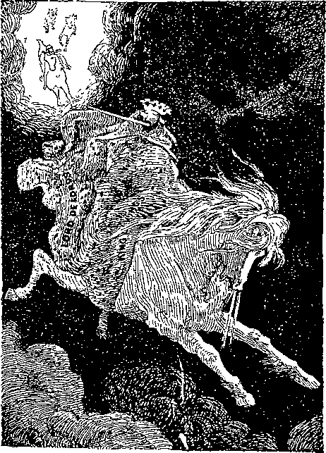4, 5) Upon white horses: Teachings clean and pure. Clothed in fine linen: “The righteousness of saints.”—Rev. 19 :8.
19:15. Out of his mouth: “He shall smite the earth with the rod of his mouth.” (D19) Goeth a sharp sword: The truth. (Eph. 6:17; Isa. 11:4; 49:2; 2 Thes. 2:8; Rev. 1:16; 2:12, 16; 19:21; Hos. 6:5; Heb. 4:12) Smite the nations: “Wound the heads over many countries.” (B100) In the time of trouble. (A324) With a rod of iron: God’s kingdom will be established by force. (D429) Outward obedience will be compulsory. (D636) Wilful opponents of righteousness will be destroyed. (D643) “Judgment will I lay to the line and righteousness to the plummet.” (A303, C369) The winepress: One of the last features of the time of trouble. (DIS) Preparatory to the establishment of the kingdom of righteousness. (D296) The Lord assumes an interest in and responsibility for the complete series of Studies in the Scriptures, the last one of which especially represents the winepress feature (Rev. 14:18-20), but it would be unreasonable to expect that the Lord ■would miraculously use imperfect tools to do an absolutely perfect work, and each must use his judgment as to the value of these interpretations. Additionally, it should be remarked that the language here is more intense than in Rev. 14, indicating the extension of the winepress feature to other than ecclesiastical matters.
19:16. And on his thigh: The thigh is introduced as the place where the sword (which is not mentioned here. See ver. 15) is usually found, in accordance with Psa. 45:3. Lord of lords: Before the controversy aroused, by Volume VII is finished, every person in the world will be convinced that it marks a distinct step by the Lord in his seizure of Satan’s empire.—1 Tim. 6:15; Rev. 17:14; Dan. 8:25.
19:17. Another angel: The Elijah class after the publication of Volume Seven, Studies in the Scriptures. See Rev. 8:3-5; 14:18. Standing in the sun: Resplendent in the light of the Gospel. (Rev. 12:1; Matt. 13:43) With a loud voice: Fearlessly and plainly declaring the truth. To all the fowls: Birds, Greek. (Matt. 24:28) Midst of heaven: First to the “eagles,” the far-sighted ones, the little flock, and then, by extension, to all who live, mentally, on any plane above the grossly material. The great supper: We should look for applications appropriate to the symbolical book we are studying, even though it develop later, as it will, that these passages will have a literal and terrible fulfillment in a deluge of actual bloodshed, of which the European war is but a preliminary.
19:18. Flesh of kings: Five of these kings or rulers are enumerated in Rev. 6:4. Doubtless the reader has eaten them, in the symbolical sense. They are there to be eaten. And of captains: Lesser commanders, enumerated in Rev. 8:7-12. And mighty men: Warriors. These warriors are referred to in Rev. 9:7, 9. Flesh of horses: Did you not see the horses in Rev. 9:17, 18, and did you not eat them, fire, jacinth, brimstone and all ? That sit on them: Did we not find two hundred millions of these horsemen, and did you not eat them? (See Rev. 9:16) Small and great:' And did we not find all the rest of the men included in Rev. 9:20, 21. and did we not eat them in the same manner? We did, indeed. We ate or appropriated the truth concerning them. It is our eating of these truths that leads to the events next narrated.
19:19. The beast: The Papacy restored to power or shall we say the lay Catholic societies? Gathered together: To the side of oppression, rather than the side of right and freedom. (A270) Kings of the earth: Dominant personages, spurred on to the foray by the influence of demons. (Rev. 16:13-16) And their armies: Their following, civil, social, ecclesiastical and financial. To make war: “The war,” Greek. (Psa. 2:2, 4) Against his army: Although composed of the twelve symbolical tribes (Rev. 19:14; 7:4-8), they are, after all, but one army, all “one in Christ Jesus.”
19:20. Beast was taken: The Papacy was caught (with the goods!) (Jer. 50:43-46) The false prophet: The image of the beast. (Rev. 13:11, 13, 14, 15; 14:9, 11; 15:2; 16:2, 13; 19:20; 20:10; Matt. 24:24) Mark of the beast: Catholics. His image: Protestants. These both: The nominal church, both papal and protestant, is largely controlled by the influential and wealthy. It will rapidly become the tool and mouthpiece of these and they will all go down together fighting against God and liberty. (Z.’82-6-1) Were cast alive: While they are still organized and operative. (H59) Into a lake of fire: Into the complete and everlasting destruction of the anarchy (symbolized by fire) of the time of trouble. This utter destruction of these systems is the beginning of the annihilation of everything out of harmony with God’s righteous arrangements. It was typified by the valley of Gehenna, just outside of Jerusalem. By the aid of brimstone the bodies of specially detestable criminals were there burned with the other refuse of Jerusalem. Standing upon the edge of this valley at night it had the appearance of a lake burning with fire and brimstone. Burning brimstone is the most deadly agent known, and symbolizes utter destructiveness.— Dan. 7:11.
19:21. And the remnant: The people who are left after their systems are destroyed. Slain with the sword: Will, in due time, come into loving and cheerful submission to the truth. (Rev. 19:15; 2 Cor. 10:4) Out of his mouth: All should be able to see that it is not a literal sword that is here referred to. With their flesh: See Rev. 19:18. Notice that the next work is the opening of the Millennial age.—A324.
20:1. And I saw an angel: The Messenger of the Covenant at his second advent. (Mal. 3:1) Having the key: Only Infinite Wisdom could provide the key to the solution of present difficulties in the earth. Here is a system of superstition and crime two thousand years old, and the praise and service of it ingrained into nearly every human being. All literature is poisoned with it. Public opinion is for it. The educated, the refined, the wealthy, the powerful, are all for it and all against any change that would give the lower strata of society a fair chance. To overcome conditions like this is a task for divinity itself. And a great chain: The TRUTH, as contained in the Seven Volumes of Scripture Studies. This chain of truth has been forged, link by link, over a period of forty years. Each volume has made it more certain that old systems can never hope to stand against it.
20:2. On the dragon. All sinful agencies and powers which had their rise in Satan, including the fallen angels. (E480, S32) Particularly the Roman empire system. (Z.’79-10-8) That old serpent: A reference to the deception of Mother Eve. (A61) The devil and Satan: Whose very existence is now denied by many. (F610) And hound him: Restrained his every deceptive and misleading influence. (D519) Despite his desperate efforts to retain control of mankind. (S78) “How can one enter into a strong man’s house and spoil his goods except he first bind the strong man?” “And then he will spoil his house.” (A69, C341) “Thy people shall be willing in the day of thy power.” (Z.’02-12) “To bind their kings with chains and their nobles with fetters of iron; this honor have all his saints.” Truth binds error, just as error binds truth. (Z.’82-3-6) A thousand years: The word Millennium means a thousand years. (Z.’79-7-1) Claimed by the Papacy to refer to the 1000 years from Charlemagne’s time A. D. 799 to 1799. (B354,
C57) “Those who lived next to the apostles, and the whole church for 300 years, understood the ‘thousand years’ in the plain literal sense.” According to Jewish theology, as collected from the Talmud, Messiah is to gather in from the dispersion all the scattered descendants of the tribes, to discomfit their foreign oppressors, and from Jerusalem as a centre to rule over the whole earth, which is to be a scene of temporal enjoyment and prosperity. Thus R. Salomon writes: “It is fixed that the world shall stand for 6000 years, according to the number of the days of the week; but on the seventh, day is the sabbath, and during the seventh Millennium the world has rest.” The year A. D. 1872 was the year 6000 of human history.
20:3. Into the abyss: Oblivion. In this instance it signifies Satan’s enforced idleness, which will surely be oblivion for him after the busy time he has had during the past six thousand years. And shut him up: Alone, idle and humiliated constantly for a thousand years, is a punishment he richly deserves. A seal upon him: The spirit of truth in the hearts of men; the desire to win the favor of earth’s new King, will deprive Satan of all his subjects. The nations no more: In the manner in which they are now deceived. (E19, 18) Thus making their trial or judgment much easier than that of the church and the ancient worthies has been. (A146) He must be loosed: As evil will be bound by the infliction of punishment upon the evil doer, so we may presume it will be loosed by allowing evil deeds for a time to go unpunished. (Z.’82-3-7) A little season: Perhaps a period of nine years from 2874 to 2883 A. D. (Z.’05-186) Claimed by the Papacy to refer to the present season since 1799.—B354, C87.
20:4. And I saw thrones: The thrones of present earthly kingdoms. And judgment: Judicial sentence, condemnation. Was given unto them: Was passed upon them as unfit to continue longer. Saw the souls: Persons, beings. (Z.’82-3-6) That were beheaded: Literally in the dark ages and in a more refined manner even now. (D52) Dead to self-will; cut off from all other heads except Christ: “The head of every man is Christ.” (Z.’01-227) For the Word of God: On account of the Word of God and by means of it. The beast: Papacy ; one of the systems of error which constitutes Babylon. (B277, H59, 60) Neither his image: The Protestant Federation. (D531) Received his mark: Of fear, sympathy or worship. (D263) Upon their foreheads : Intellects. (B169) Lived and reigned: Sharing in the work of converting the world. (A91: Bom. 8:17; 2 Tim. 2:12; Rev. 5:10) This language implies that there will be somebody to reign over. (N. ’03-10-27) A thousand years: During which time the whole earth will be in judgment or on trial for everlasting life. (E479) “The loss of this hope by our forefathers led on to all the grievous errors from which we are now seeking to escape. Messiah’s coming kingdom is the key to the world’s blessing by restitution to human perfection in a world-wide Eden.” Observe how many times this period is mentioned in Rev. 20:2-7.
20:5. This is the first: The chief, the most important.—F706.
20:6. And holy is he: The Christ, Head and body. (F695) Part in the first: Or choice. (A197) Resurrection: The resurrection of the church, in which they are made partakers of the divine nature. (D618) The condition represented by the “Most Holy.” (T21) “We, too, shall be images of the Father’s person, ‘whom no man hath seen nor can see, dwelling in light which no man can approach unto,’ but to whom we can approach and whom we can see as he is, because we have been ‘changed.’ (1 John 3:2; 1 Tim. 6:16, 1:17; Exod. 33:20) It is not the Apostle’s thought that all shall bear the image of the heavenly One, in this sense, ever. Such was not the design of our Creator. When he made man he designed to have a fleshly, human, earthly being, in his own likeness [mentally, morally], to be the lord and ruler of the earth, as the representative of his heavenly Creator.” (Gen. 1:26-28; Psa. 8:4-7; F722) “If we know how to reproduce the human voice, it gives us a little illustration of how God, with his unlimited power, can preserve everything recorded by the convolutions of our brain, and of how these could be preserved in the future absolutely—everything by which we could know ourselves in the future.” (Z.14-315) Hath no power: Because it is impossible for them to die. (Z.’94-118; Rev. 2:11; Rom. 2:7) Shall be priests: Members of the body of Christ, anointed with the holy Spirit and power. (T38) The work of a priest is that of intervention and instruction in righteousness, and logically implies subjects and a future work of salvation. (Z.’79-7-5) Of God and of Christ: “No mention is made here of being priests of the Holy Ghost, as it would undoubtedly have been mentioned if it had been the third person of a ‘trinity.’ ” And shall reign: “If we suffer with him we shall also reign.” (T48) “We shall reign on the earth.” (C128) The reign with Christ is not in this life. (A285) With him: As joint-heirs with Immanuel. (D425) There can be no kingdom of God until the King comes. (A288) A thousand years: “The ‘kingdoms of this world,’ even while being crushed by the kingdom of God, will be quite ignorant of the real cause of their downfall.”-—C129.
20:7. Out of his prison: To test the loyalty of all who have been rescued from sin and death during the Millennium.— P129.
20:8. And shall go out: Probably with the old error that God cannot or will not utterly destroy those not in heart harmony with him. (Z.’94-251) Deceive all the nations: It will be the “sheep” that will be especially interested in, praying for and preparing for those who are in the great prison-house of death. Any one not interested in that work will be lacking in God’s Spirit; and this is what is charged against the goat-class. (Z.’14-268) Gog: Proud (Gog means high), Natural Israelites. (1 Chr. 5:3, 4; Luke 13:28) And Magog: Those who, during the Gospel age, were nominal Spiritual Israelites, but at heart were never anything but “tares” and always remain such. Magog was the descendant of Japheth. (Gen. 10:2) Europe was peopled by his descendants, and it was to them that the Gospel call of the age now ending was by divine appointment sent. (Acts 16:6, 9) The Gospel was sent into Europe that it might be demonstrated that God could call and make into Christlike characters representatives of even the most cruel, bloodthirsty, quarrelsome, rapacious people on earth. Together to battle: All armed with complete knowledge and experience and hence fully able to stand the test. (E148) Number of whom is: Number of whom will be, by the end of the Millennial age. (H62) The sand of the sea: The earth will then be very populous.—Z.'82-3-7.
20:9. And they: The goat class of the Millennial age. (D644, H63) Who obey because compelled by force. (D520, 654) Who have not by the end of the Millennial age learned to love righteousness and hate iniquity. (A303) Who have even sympathy for sin, though outwardly obedient. (D645) Typified by the Jew who offered a peace offering and then touched an unclean thing. (T98) Compassed: “Just as in Great Britain, the people have gone to Parliament to protest, so the rebellious faction of mankind will protest against their faithful princes.” The camp: “The separation of the ancient worthies from the rest of the world seems to imply that God has some special purpose in respect to them. The term camp itself implies that theirs is only a temporary condition or arrangement, and that God has some better thing in store for them.” (Z.’13-53) St. Stephen said that God never gave Abraham so much as a foot of the promised land (Acts 7:5); but he implied that Abraham will yet
Notes and Comments 20:10 receive that land and afterward leave it to his posterity. If the land is to be given to Abraham and his coadjutors, and then to be left to his seed and mankind in general, the thought would seem to be implied that the ancient worthies will pass to the spirit nature. (Z.’13-52) The saints: “Abraham, Isaac, Jacob and all the prophets, in the kingdom”—in its earthly phase. (A290, D619) “The heart of the children to the fathers.” (B249) “Instead of thy fathers. . .princes in all the earth.” (D625, T109) “Judges as at the first.” (A294) “A root out of Jesse which shall stand for an ensign of the people.” (Z.’98-312) The gates of the kingdom—“Open ye the gates.” (Z.’92-16) “Jerusalem that bringest good tidings.” (Z.’92-78) “In everlasting remembrance.” (A291) Typified by the Ko-hathites. (F129) Typified by Moses’ vail. (D630) Typified by the red heifer. (T108, 111) Typified by Jonathan, David’s friend. (Z.’95-291) Typified by Elisha after recrossing Jordan. (Z.’04-253) Typified by Mordecai. (Z.’07-198) “God having provided some better thing for us.” (F112) And fire came down: Fire is used as a symbol of utter destruction. (H57) And devoured them: Cut them off from among the people. (E31) They will be instantaneously and mercifully electrocuted, not tormented.
20:10. And the devil: The system of error which will manifest itself at the end of the Millennial age, not specified as to its kind, but merely called Satan after its instigator. “That through death he might destroy him that hath the power of death, that is the devil.” (F619) “He is to be destroyed, together with all his angels— his messengers, all who follow his leading and his course.” (Matt. 25:41; Heb. 2:14; F619) The lake of fire: Gehenna, the second death, utter destruction. (H57, 64, S112) Where the beast: Papacy; one of the systems of error which constitute Babylon. (B277) The false prophet: Another of the systems of error constituting
Babylon. (H59, 60) The image of the beast. (Z.’81-7-4) Are: Will have been for a thousand years at the time this Scripture is fulfilled. Shall be tormented: With great social, financial and religious difficulty and pain to all those identified with them. Forever and ever: As long as the systems last. The Seven Volumes of Scripture Studies are the instruments the Lord is using to bring these iniquitous systems to their end; and so long as these books remain, the torment of these systems will be in evidence. The systems will cease, but the “Seven Plagues” will continue forever; all efforts of the beast and the image to the contrary notwithstanding.
20:11. Great white throne: Of purity and justice. (E489, 480) “Then shall he sit upon the throne of his glory, and before him shall be gathered all nations” for judgment. (A345) The earth: The present organization of society. (A323. C229, D46) Composed of the upper crust, the middle classes, and the lower classes, each holding its position by oppressing those below it. (Z.’82-3-7) And the heaven: Present powers of spiritual control. (A318) Fled away: To our Lord’s contemporaries the religious and social system under which they lived seemed almost as fixed and as eternal as the earth and sky. Indeed, “heaven and earth” appears to have been a name which they gave to the then existing order of things in recognition of what they deemed its permanence and fixity.—Rev. 21:1; Dan. 2:35.
20:12. I saw the dead: All mankind, except the church. The dead are standing while they are dead. See Rev. 20:5, comments. Small and great: High and low, humble and proud. (Z.’82-3-7) Books were opened: Bringing a full knowledge of the truth. (H61) The entire Word of God will not be opened until after the church Is beyond the vail. Much of it (perhaps nearly all) will be opened by the great company class during the time of trouble, but some of it may wait for the prophets
Notes and Comments 20:14 themselves. And another book: The record of those who will pass the restitution trial or judgment satisfactorily. (Z.’00-239) The book of life: Signifying friendship, love and blessing. God keeps a permanent record of his friends but no record of his enemies. (N.’04-313) Were judged: Krino, tried, tested. “This judgment, or rulership cannot begin until Christ, whom Jehovah hath appointed to be the judge or ruler of the world, has come again—not again in humiliation, but in power and great glory: not again to redeem the world, but to judge [rule] the world in righteousness. A trial can in no case proceed until the judge is on the bench and the court in session at the appointed time.— Matt. 25:31.” (A345) Which were writ
ten: “My word shall judge you in the last day.” (Z.’82-3-8) In the books: Of the Bible; not in creeds or catechisms. (D66) To their works: By contrast with the present, when it is “according to your faith.” Even in the Millennium, however, it will be impossible to please God without faith.—F112.
20:13. Which were in it: Those of mankind not now under religious restraint will gradually be brought out of the “sea” condition and when all are thus restrained “there will be no more sea.” (Z.’82-3-8) And death: The Adamic death. And the grave: Hades, oblivion, the dark, secret condition, the tomb, which now speaks of hope of a future life. (D460; E398; H58) Delivered up the dead: Those under the death sentence are counted by the Lord in the same class with those upon whom the sentence has been already executed. (Matt. 8:22) To their works: The love and benevolence which men will then show to each other (the brethren of Christ) the King will count as shown to him.—Rom. 13:10; Matt. 25:41, 45; Z.’10-39.
20:14. And death: Including aches, pains, mental and moral imperfections of every sort. And the grave: Hades, oblivion, the great prison-house of the tomb in which
mankind awaits a resurrection. (E399, H65) Were cast: Gradually, from the beginning of the Millennial age to its close. The second death: So-called, in contradistinction to the first or Adamic death; the devil, death and hell are never destroyed but once, yet their destruction is for them the second death, death everlasting.—E31; H66, 24.
20:15. And whosoever: At the end of the Millennial age. (A144) Not found written: Not found worthy of life. The lake of fire: Gehenna, utter destruction. —H22, 24, 57.
21:1. Saw a new heaven: The spiritual control of Christ. (A70) And a new earth: Earthly society reorganized under God’s kingdom, on the new basis of love and justice, instead of selfishness, and oppression. (A319, 334, D525, 551) The first heaven: Present civil and ecclesiastical rule. (B105) The first earth: Human society as now organized under Satan’s control. (A69; Deut, 32:24) Were passed away: In the end all will be glad to see the unclean heavens pass away (Job 15:15) rent in twain (Isa. 64:1) and the new heavens planted (Isa. 51:16), which will be heard in their lightest petition to the God of all grace. (Hos. 2:21) “Drop down, ye heavens from above.” (Isa. 45:8) Was no more sea: Anarchy, because “The abundance of the sea shall be converted unto thee.”—D638.
21:2. Saw the holy city: The divine government. New Jerusalem: The new heavens, the Gospel church in glory and kingdom power, spiritually invisible to men, yet all-powerful. (C258) Typified by literal Jerusalem. (A296, H24) “We are not to think of this holy city as being composed of literal stones, but of ’living stones.’” (Z.’16-392; 1 Pet. 2:4-7; Eph. 2: 19-22; Isa. 52:1; Matt. 5:35; Heb. 11:10, 16; 13:14; Rev. 3:12; 11:2; 21:10; 22:19) Coming down: “Thy kingdom come:” The kingdom is already coming down, gradually coming into control, and eventually the result will be that God’s will shall be done on earth as it is in heaven. (C258, H47) As a bride: The Lamb’s wife: (Z. T6-392; 2 Cor. 11:2; John 3:29; Eph. 5:31, 32) For her husband: “I have espoused you as a chaste virgin unto one husband, which is Christ.”—F363.
21:3. A great voice: The Lord Jesus, the Father’s Word. God’s Tabernacle: God’s dwelling, the glorified church. “When we, think of the church as the
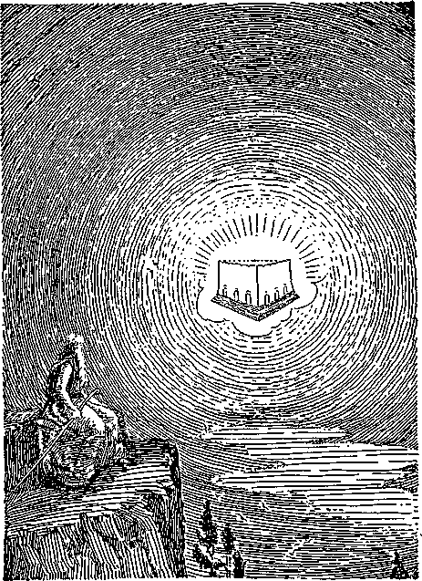Till' descending kingdom
temple under construction, it impresses upon us the thought that there is a future work to be accomplished. Why construct a temple, and then not use it?” (Z. ’15-189; 2 Cor. 6:16) Is with men: During the times of restitution. (A162) And they shall be: And they shall become. (T76) His people: All mankind will be treated from the standpoint of reconciliation.— Psa. 68:18; Ezek. 37 :27; Zech. 8:8.
21:4. And God: What a glorious sunburst of blessing is contained in the words of this verse! (Z.’01-200) Shall be with
them: Nevertheless, it will be a separate kingdom from that of the remainder of the universe, as the Apostle Paul indicates. (Z.’01-200; Jer. 30:22; 31:33; Ezek. 11:20; 1 Cor. 15:24, 25, 28) Wipe away all tears: The restitution work will be a gradual work, such as is implied by these words. (Z.’01-200; Isa. 25:8; 65:19) And there: In the eternity beyond the Millennium. (D644) No more death: “Death and hell were cast into the lake of fire” (H22; 1 Cor. 15:26, 54; Rev. 20:14; Isa. 35:10; 51:11; 65:19) The former things: The reign of Satan, sin and death. (T76) Are passed away: When the resurrection work has been completed.—A73, 192.
21:5. Upon the throne: Authority, rulership. (A92) I make all things: Mankind and all his affairs. New: Renewing, restoring, all that was lost. (N. '07-11-24) These words are true: To all except the John class these words appear untrue and God appears unfaithful.—Z.’01-201.
21:6. And he saith unto me: At the conclusion of the Millennial age. And the end: It is the Father’s pleasure that his Only Begotten should accomplish the entire programme of redemption and restitution. Him that is athirst: The overcomers of the Millennial age will always be dependent on God’s provisions for the sustenance of their proper cravings. (E419) Water of life: Truth, clear as crystal. (E179) Everlasting life; the privilege of perpetual existence.—Z.’01-201.
21:7. He that overcometh: During the Millennial age. And I; Christ. Will be his God: “The mighty God.” Shall be my son: I will be to him the “Everlasting Father.”—Z.’01-201.
21:8. But the fearful: At the end of the Millennial age. (A144) And unbelieving: Who will not trust God. (H63; Heb. 11: 6; Rom. 10:17; John 20:31; 17:20; 1 Tim. 6:12; Luke 17:5; James 2:17) The abominable: “Those abominable characters among men, who, knowing the truth, yet love unrighteousness.” (H60) And murderers: Brother-haters. (H63) Slanderers. (Psa. 141:3; Deut. 5:17; 32:2; Matt. 5:21, 22; 15:18-20; 1 John 3:15; James 3:2-12; James 1:19; 4:11; Matt. 12:34-37; Eph. 4: 31; Psa. 15:1-3; 19:14; 34:13; 101:5; Prov. 4:23, 24; 12:19; 16:28; 17:4; 26:20, 21; Jer. 20 :10; 1 Cor. 10 :10) And whoremongers: Not at heart faithful to the Lord. And sorcerers: Dreamers, theorists, pseudophilosophers, endeavoring to accredit to themselves the great salvation wrought. (Rev. 22:15) And idolaters: Such as give to self or others service and honor which belong to God. And all liars: All who do not love and seek, defend and hold the truth at any cost. Part in the lake: Gehenna, utter destruction. (H57, 58) Fire and brimstone: “Be destroyed from among the people.” (A107) The second death: “The righteous will be glad when the corrupters of the earth, and all their work and influence, shall be destroyed.”—H63.
21:9. And there came: To the John class, the church, on this side of the vail. One of the seven angels: The seventh. The seven vials full: They are still full after they are poured out on ecclesiasticism! Seven last plagues: The seven volumes of Studies in the Scriptures. The Lamb’s wife: Sharer of her husband’s name and honors. (E45, 412) A grand lesson of the divine sovereignty and contradiction of all evolution theories.—’Col. 1:22; Rom. 8:29; Rev. 19:7; 21:2.
21:10. In the spirit: “God hath revealed 181
them unto us by his Spirit.” (1 Cor. 2:10; Rev. 1:10; 17:3) And high mountain: The heavenly phase of the kingdom. This shows that we shall all be changed, “caught up to meet the Lord” before we shall see the church, the bride. When John was called to see the mystery, Babylon the Great, he was taken “into the wilderness.” (Z. ’80-7-1) We may also draw the thought that before John, representing the church in this harvest time, could see with the eye of faith the holy city or government coming down to earth, he had to go in spirit as high as possible above the earth level, the plane of world-mindedness. (Z. ’82-3-8) Holy city Jerusalem: Christ’s government, the established kingdom of God, typified by natural Jerusalem. (A296, D25, H23) Out of heaven: If we went up to heaven, it would not be found there. If Rev. 21 is to be literally interpreted, then the whole surface of Palestine is far from sufficient to hold a city of this size. Besides, its height, length and breadth were to be equal.—Rev. 21:2.
21:11. Having the glory: The church has a foretaste of this glory on this side of the vail. (1 Pet. 4:14) Her light: “The Lamb is the light thereof.” (Rev. 21:23; 22:5) Stone most precious: “The brightness of his [the Father’s] glory, and the express image of his person.” (Heb. 1:3) A jasper stone: A beautiful green-tinted diamond.—.Rev. 4:3.
21:12. Wall great and high: The wall, the protection of that heavenly city, in a special sense represents our heavenly Father. No picture of the bride would be complete that did not include him who dwells within us, who is the Author of the plan, and the Source of all our joys. Twelve gates: The twelve tribes of Israel, represented by the ancient worthies. (Z. ’92-16) The twelve mystical tribes of Israel. (Rev. 7:5-8; Ezek. 48:31-34) Names written thereon: The entire little flock; twelve thousand of each tribe, each working together, under God’s direction, as one angel, or messenger.
21:13. On the East: Toward the sunrising, toward the dawn, toward the little flock, specially honored and blessed in their sacrifices on behalf of the church. The side of the Amramites. (Num. 3:19; F128) Three gates: The mystical tribe of Joseph, Benjamin and Manasseh—Manasseh taking the place of Dan. (Ezek. 48:32; Rev. 7:5, 7, 8) On the North: The side of the Me-rarites, the great company. (Num. 3:33; F129) Three gates: The mystical tribes of Judah, Reuben and Levi. (Ezek. 48:31; Rev. 7:5, 7) On the South: The side of the Kohathites, the ancient worthies. (Num. 4:2; F129) Three gates: The mystical tribes of Simeon, Issachar and Zebu-lun. (Ezek. 48:33; Rev. 7:7, 8) And on the West: The side of the Gershonites, the restitution classes. (Num. 4:22; F129) Three gates: The mystical tribes of Gad, Asher and Naphtali. (Ezek. 48:34; Rev. 7: 5, 6) “The city lies open and accessible to all quarters, and to all quarters alike.”— Luke 13:29.
21:14. Twelve foundations: An apostle would in the divine plan and order have a larger importance than any other “living stone” as a “petros” is larger than a “lithos.” “He looked for a city which hath foundations.” (Z.’79-9-4) The twelve apostles: “The apostles whom he had chosen.” (F204) Typified by the twelve sons of Jacob. (B246) There were only twelve, no “successors.” (E225) “Apostolic Succession” is therefore false.—F209, 21.
21:15. And he: Volume VII of Studies in the Scriptures. Reed of gold: The divine Word. To measure the city: Surely if we can not find the measurement in the Scriptures, it is hopeless to look elsewhere.— Zech. 2:1, 2; Rev. 11:1; Ezek. 40:3.
21:16. Lieth foursquare: A perfect cube, like the Most Holy of the Tabernacle. Twelve thousand furlongs: This area contains 144,000 building-lots of one thousand square furlongs each. Are equal: It is perfect toward God as well as toward earth. (Z.’82-3-8) Each view of the city, from any side, presents to view justice, power, love and wisdom.
21:17. The wall thereof: Its thickness. Measure of a man: The measure of a man, the Man Christ Jesus, is 1,000. If we multiply the number of square furlongs in any wall by the 144 measures of a man, i. e., 144,000,000X144, the result is 20,736,000,000, the estimated number of the sheep class at the end of the Millennial age. (Matt. 25: 34-40; Z.’05-271) Of the angel: As interpreted by the angel.
21:18. Was pure gold: A divine institution.—Z.’96-44.
21:19. Precious stones: The Lord’s jewels, represented by the twelve jewels worn in the high priest’s breastplate. (T36) In selecting and polishing the 144,000 gems and putting them in place in the temple God is preparing a beautiful harmony of characters in infinite variety that will delight the hearts of all his creatures to all eternity. (1 Chron. 29:2) Was jasper: Likeness to the Father. See comments on Rev. 4:3. Second, sapphire: Faithfulness. The modern lapiz lazuli, or azure stone, of fine blue color, which has the appearance of being spotted with gold dust. (Job 28: 6) The brilliant spots in the deep blue matrix invite comparison -with the stars in the firmament. The crystals form into units having twelve equal sides. The blue is the color of faithfulness, the gold sho-ws the faithfulness towards God; the star-like appearance shows the faithfulness towards all the heavenly beings—angels, archangels, and the great company: the crystalline formation shows the faithfulness towards the symbolical and actual twelve tribes of Israel, w’hich, in the last analysis, include all who shall become heirs of salvation. Those who gain the prize of the high calling can be trusted. (1 Cor. 4:2; Luke 16:10-12) Third, a chalcedony: Obedience; Submission. A green quartz, found in the copper mines of Chalcedon.
It crystallizes in the twelve-sided and twenty-four sided forms of cubic crystalline formation. In the twelve-sided crystals each side is a surface of five equal sides and angles. The church’s obedience is perfect towards God as indicated in the faces of the crystals, five being a symbol of Divinity. It is operative towards the brethren as in the twelve-faced crystals, and towards both phases of the kingdom,
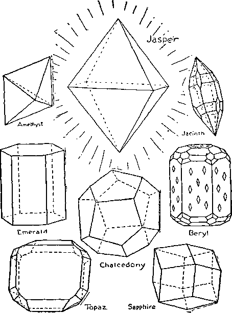FOUNDATION STONES
as in the twenty-four-sided crystals. Fourth, an emerald: Deathlessness. One of the most beautiful of gems, of a bright green color without any mixture, crystallizing in long, hexagonal (six-sided) crystals. The stone loses color when strongly heated. From those originally imperfect (as shown in the six-sided crystals) God is creating a race of deathless ones. Nevertheless, though begotten to the divine nature, should they cling to the dross of their fleshly natures too determinedly, so great fires may be applied to burn away the dross as will destroy the value of the gem. This gem, too, represents the church’s power to bestow life upon the dead world. The crystals may be broken or split crosswise. The everlasting life for the world, which may be made continuous, is nevertheless susceptible of being broken off at any time for disobedience.
21:20. The fifth, sardonyx: Humility; purity; martyrdom. An ornamental stone much used for seals and cameos. It was considered by ancient oriental authorities that a fine oriental sardonyx should have at least three strata, a black base, a white intermediate center, and a superficial layer of red; these colors typifying the three cardinal virtues—humility, black; chastity, white; modesty or martyrdom, red. Sixth, sardius: Loyalty to Christ. A reddish stone much used by the ancients as a gem stone; it has been in all ages the commonest of the stones used by the gem engraver. (Rev. 4:3) Seventh, chrysolyte: Heavenly Wisdom. Greek, chrysos, gold, and lithos, stone. The meaning of the term makes it the golden stone. It is a gem of a golden color, lightly tinted with green. It is very transparent. “The wisdom that is from above is first pure.” (Jas. 3:17) Eighth, beryl: Love of the Father. A pellucid gem of a bluish green color, much prized as a gem stone by the ancients. It crystallizes in the hexagonal system, with sixty-six sides of various sizes and shapes. On each of the six principal sides are diamond-shaped marks, alternately five and eight marks to a side, with four marks at the end. The sixty-six sides represent the sixty-six books of the Bible; the two ends represent the Old and New Testaments; the diamond-shaped marks represent the heavenly Father; the three groups of eight each represent the twenty-four prophecies of the kingdom; five is a symbol of Divinity, and four represents Justice, Power, Wisdom and Love. Ninth, topaz: Benevolence. The modern “noble olivine.” It is a dark, decidedly green-colored mineral. It crystallizes in twenty-six-sided figures. In some views—i.e., when the great company or the classes that are to be destroyed are taken into consideration—the tribes of Israel number thirteen; and when Spiritual and Fleshly Israel are considered separately, the total number is twenty-six. It is not the wish of the heavenly Father that any of these should perish, and it is the wish of the church to do all humanly and divinely possible to save the unworthy from the final consequences of their own wilfulness. This spirit will be exercised to the last limit of love. Tenth, chrysoprasus: Constant, cheerful endurance. The modern chrysoberyl is a yellow or green gem stone, remarkable for its hardness, being exceeded in this respect only by the diamond and the jacinth. It is not infrequently cloudy, due to microscopic cavities. The hardness signifies ability to “endure hardness as good soldiers,” and the clouds signify difficulties, troubles, to be overcome. Eleventh, jacinth: Unchangeableness. The modern sapphire, next to the diamond in hardness; a beautiful blue stone. Many of the crystals are parti-colored, the blue being distributed in patches in a colorless stone; but by skilful cutting the deep-colored portion may be caused to impart color to the entire gem. This stone crystallizes in the most beautiful and wonderful pattern conceivable, consisting of a six-sided pyramid at either end, separated by three different sets of surfaces of six each and two different sets of surfaces of three each. We may think of the two ends as representing the teachings of the twelve apostles, and the twenty-four surfaces between as representing the twenty-four elders (prophecies pertaining to the kingdom of God). God is unchangeable, although the different operations of his plan, in different ages, make him seem changeable to mankind. But the perfected plan will be the adoration of all his creatures. This gem also shows how God can take characters whose conduct may have been very irregular, and by skilful cutting make them copies of himself. Twelfth, an amethyst: Royalty. A stone of a violet color, bordering on purple, composed of a strong blue and a deep red. The name is derived from the Greek a, not, and methyskein, to intoxicate, expressing the old belief that the stone protected its owner from strong drink. It was held that wine drunk out of a cup of amethyst would not intoxicate. It crystallizes in double pyramids (base to base) of three sides on each pyramid. Amethyst was Pastor Russell's birth-stone; and behold how perfect its application ’ He was true blue in his faithfulness, and fully loyal to the blood of Christ, as shown by the red. He has the royalty now, thank God I The cup which he poured never intoxicated with error those who drank its life-giving draughts from the fountain of all truth, our Father’s Word. The six-sided crystallization represents his six volumes of Scripture Studies, and the Seventh, a summary of all, represents the stone as a whole. There are over ninety varieties of crystals in nature. Surely "the fool hath said in his heart, There is no God.”
21:21. Was of one pearl: “The peculiar lustre of a pearl is dependent on the fact that the surface is not perfectly smooth, but covered with the Irregularly sinuous edges of innumeraole layers of inconceivable thinness, deposited one over the other. The immediate occasion of the production of a pearl appears to be always the pres-
Notes and Comments 21:24 ence of some extraneous substance inside of the shell of the mollusk.” The mollusk is the earthly tabernacle; the extraneous substance is the new mind. The successive layers are the additions made to it, “precept upon precept, precept upon precept; line upon line, line upon line; here a little and there a little.” (Isa. 28:13) Street of the city: There will be but one street in that city, the street which has been in process of construction throughout the age. The prophets tell us of it.—Prov. 16:17; Isa. 40:3; 49:11; 35:8; 62:10-12.
21:22. No temple therein: No special place of worship, for the use and benefit of the little flock. Are the temple of it: The bride’s whole life is completely wrapped up in the Father and the Son. Her one consuming wish is to glorify the Lord’s dear name. Of what need is any special place of worship for one who can say, “For to me to live is [for] Christ [to live] ?”—Phil. 1:21.
21:23. And the city: The glorious kingdom class. (Z.’01-201, 2) No need of the sun: The preaching of the Gospel. Neither of the moon: Light of the Mosaic law. (D590) Did lighten it: The church will be so filled -with the glory of God that from her, as the sun of righteousness, shall proceed the light of the glory of God which shall heal and bless the world.
21:24. Nations shall walk: As parts of the only holy nation, the kingdom of God. (Z.’97-304; Z.’16-394; Isa. 60:3, 5) By the light thereof: Receive the light which the church gives. “Then shall the righteous shine forth as the sun”. “It is more blessed to give than to receive.” (Z.’79-8-6) And the kings: Particularly the ancient worthies, “Princes in all the earth.” When mankind reach perfection at the close of the Millennial age, they will be given the entire control of earth as at first designed—each man a sovereign, a king. (A296) Do bring: In this verse the ancient worthies are directly referred to; while in verse 26 the rest of mankind are referred
to. Notice the tenses of the verbs "do bring” and ‘‘shall bring”—present and future—in the Millennium and after. Then-glory into it: Acknowledging the heavenly kingdom with tributes of praise, thanks, worship and obedience to it as God’s agency.—Z.’01-202.
21:25. And the gates: The ancient worthies, through w-hose instrumentality all may enter the kingdom. (Z.’92-16) By day: Throughout the long Millennial day of a thousand years all who will may seek and find salvation through the broad gates of the city of God that will then be wide open. (Isa. 60:11) Now, “narrow is the way that leadeth unto life, and few there be that find it.” (Matt. 7:14) No night there: The Psalmist explains how the smile of the Father was turned away from mankind. He describes mankind as “such as sit in darkness and in the shadow of death, being bound in affliction and iron; because they rebelled against the words of God [by disobedience of his express command] and contemned [set at naught] the counsels of the Most High. Therefore he brought down their heart with labor [each sex with its own peculiar kind]; they fell down, and there was none to help.” (Psa. 107:10-12) This disobedience brought our entire race into the valley of the shadow of death (Psa. 23:4); but the prophets encouraged us to hope for a watchman who would tell us of the coming of the day. (Isa. 21:12) Later, the Apostle Paul declared the night was far spent, being then more than two-thirds gone. (Rom. 13:12) The event that is to bring in the day is the rising of the Sun of Righteousness. (Mal. 4:2) When here at the first advent Christ was the light of the world (John 8:12) ; and the people in his immediate neighborhood saw a great light, shadowing forth his coming glory. (Isa. 9:2) He declared that we, too, should be lights in the world. (Matt. 5:14) The sun rises quietly, like a thief. (1 Thes. 5:2) When the morning comes, the first work is banishing the works of the night. (Ezek. 7: 7-12) Next comes the opening of the spiritually blind eyes of those that have physical sight. (Amos 5:18) Surely, the best time for a great oculist to open the eyes of the blind is in the day time. (Isa. 35:5) Now matters are more or less obscured (1 Cor. 13:12) ; but the time is coming when the blind shall be shown a way of life they have not hitherto known. (Isa. 42:16) Will the Lord show wonders in the dark? (Psa. 88:12) He will indeed; and when the nations come forth from the tomb, they will seek him that turneth the shadow of death into the morning. (Amos 5:8; Isa. 42:6, 7) “And there shall be no more death, neither sorrow, nor crying, neither shall there be any more pain; for the former things are passed away.” (Rev. 21:4) “For there shall be no night there.” “Weeping may endure for a night, but joy cometh in the morning.”—Psa. 30:5.
21:26. The glory: This rendering of glory to the Kingdom will continue throughout the Millennium.
21:27. Anything vulgar: No one who could or would contaminate others by speech or example, will ever find a place in that city. Worketh abomination: Nor anything tending in the direction of pride or sectarianism. Or maketh a lie: Nor anything countenancing the teaching of error for pleasure or profit. (1 John 2:22) Life of heaven: “The Lamb’s book of life we must understand to include only those who attain to the position of joint-heirship with Christ, those whose names are written in heaven during this Gospel age and who are faithful to their covenant. (Psa. 50:5)” —Z.’16-394; Phil. 4:3; Rev. 3:5; 13:8.
22:1. A river: Not muddy with traditions and false doctrines. Now the little flock have the Lord’s spirit in them, a well of water springing up unto everlasting life. When these well springs are brought together at the beginning of the Millennial age, they will constitute this river. There is no such river flowing at
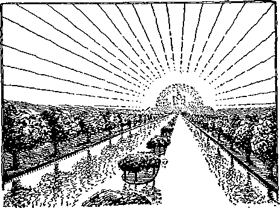THE RIVER OF LIFE
the present time. (Z.’04-239) Water of life: Truth which will bring the privilege of laying hold on eternal life. (E404) The message of the Lord, the blessed influence that will proceed to humanity from the glorified Christ. (Z.’05-171) Clear as crystal: “One would think that, even with no knowledge of the symbols of Revelation, no thinking Christian should have any difficulty in realizing that the book portrays trouble for the church throughout this Gospel age and the triumphant Millennial reign at its close.” (Z.’05-170; Ezek. 47:1-12; Joel 3:18; Zech. 14:8; Psa. 46:4) Out of the throne: Authority, rulership.—A92.
22:2. The street of it: In the midst of the highway of holiness. (Rev. 21:21) Side of the river: Nourished and blessed by the life-giving waters of truth. (Ezek. 47:12) The tree of life: The Christ, Head and body. (Z.’00-215) Every month: Twelve kinds of fruit, twelve times a year, for a thousand years—a total fruitage of 144,000. And the leaves: Professions, teachings (Z. ’82-3-2) For the healing: In the times of restitution. Of the nations: The sin-sick world, not the church.—Z.’05-171; Rev. 21: 24; Ezek. 47 :12.
22:3. No curse: After Satan’s destruction. (E210) On those who come into harmony with God through the Mediator. (E452) There was a time when there was no curse, a time when the curse came, a time during which it continues, and a time when it will be removed. (E421) Shall be in it: A spiritual police force will have humanity under absolute control. Every misdeed will be punished as soon as it Is determined upon and before it shall have been put into effect. Likewise, every good act, good word and good thought will bring a blessing of restitution, health, strength—mental, moral, physical.
22:4. See his face: There will be no earth-born cloud between, no hindrance to the Father’s love and favor. (Z.’05-172) On their foreheads: Intellects.—B169.
22:5. Be no more night: No reign of sin and death. (A9) Light of the sun: Preaching of the Gospel. (D590) And they: The overcomers of the Millennial age. Shall reign: Over paradise restored. Forever and ever: “Thou hast put all things under his feet, all sheep and oxen, with the beasts of the field, the fowls of the air and the fish of the sea.”—Z.’05-172, 173.
22:6. And he: The same angel mentioned in Rev. 1:1; 19:9, 10; representing Pastor Russell, beyond the vail. Said unto me: The John class, in the flesh. Faithful and true: “There hath not failed one word of all his good promise.” (1 Kings 8:56) Spirits of the prophets: It is still possible to have the same spirit as filled the prophets of old, even though the prophecies themselves have ceased to be miraculously uttered or interpreted. (1 Cor. 13:8) Shortly be done: Especially the events of the immediate future.—Rev. 1:1.
22:7. I come quickly: Intimating that when the time has come that the book of Revelation can be understood, we are to understand that the establishment of his kingdom is close at hand. (Z.’05-173; Rev. 16:15; 22:10, 12, 20) Jesus is the speaker. Blessed is he: The Elijah class. Of this hook: Who see its clear import and accept the responsibilities implied.—Rev. 1: 3; 3:14.
22:8. And I John: Representing the church in the harvest of the Gospel age. And heard them: Understood them. (Rev. 1:3) Of the angel: The special messenger appointed by the Lord to speak forth the message of present truth. (Z.’05-173) “'Blessed is that servant.” (D163) “The angel of the church of the Laodiceans.” (Z.’05-170) “The man that is my fellow.” (Z.’06-226) Typified by King Josiah.—Z. '05-180.
22:9. See thou do it not; Do not worship me; I am not the author of this plan. (Z.’05-173) Thy fellow servant: Not thy Lord and Master. Of thy brethren: The fellow-servant of thy brethren. The prophets: All true teachers or mouthpieces of God. (Z.’95-217) And of them: And the fellow-servant of them. Worship God: The source 'from which come all these blessings and all this light.—Z.’96-305.
22:10. Seal not the sayings: When the time comes for a full understanding of the book of Revelation, the church is not to hide the matter.
22:11. Unjust still: The proclamation of the message of present truth is not expected or intended to convert the world. Righteousness: The message of present truth applies only to those who are righteously inclined. (Z.’05-173) Be holy still: “The word seems to denote development and crystallization of character, immediately preceding the coming of the great Judge of all.”
22:12. I come quickly: See Rev. 16:15; 22:7, 10, 20. The Lord himself becomes the speaker. Reward is with me: And will not be given until I come. (F665) Every man: Every man in Christ. As his work is: The church’s work is practically finished. The reward is given on the basis of the work already done, in character development and in the natural outgrowth of that development—works.
22:13. And the end: Of the direct creation of God.—Z.’93-115.
22:14. Wash their robes: The great company class. (Rev. 7:14) The Tree of Life: (Rev. 22:2) Into the City: “Whose builder and maker is God.” (Heb. 11:10) To these dear brethren we would say, The object of your trials is to remove the dross (Ex. 30:7; Mal. 3:2) that you may be fit companions of the Christ. (Ex. 12:8; Heb. 2:17; Rom. 5:3; Col. 1:11) Do not think it strange. (James 1:12; 1 Pet. 1:7; 4:12; 5:10) When you get the right viewpoint, you will rejoice in your sufferings. (Deut. 13:3; Psa. 23 :4; 119: 67) The trials will not last forever (Psa. 39:1); and in them all you may hear the songs of deliverance. (Psa. 32:6. 7) There is nothing to turn back to (Heb. 10:38); but there is joy untold to look forward to, and it is nigh.”— Rev. 19:9; Psa. 45:14, 15.
22:15. Without are dogs: Idlers, breeders of spiritual contagion, self-seeking, biting and devouring, treacherously lying in wait to deceive. (Z.’94-216) The word used refers to the wild dogs which roam Palestine and which are pests; not the pet house dogs mentioned by our Lord in his remark to the Syro-Phcenician woman. (Z.’00-191) There will be no clergy class, as such, in the kingdom. (Isa. 56:10: Phil. 3:2: 2 Tim. 3:8, 9) Murderers, and idolaters: See Rev. 21:8. And loveth a lie: The old lies will die hard; and some may try to carry them far into the time of trouble. Ere long, however, the truth will be so manifest that all must give way before it.
22:16. In the churches: All down the age the church has had this message: all down the age holy men of God have sought to understand its mysteries: all down the age it has remained a closed book. But now the Mystery of God is finished: and the object of keeping the book closed is accomplished. God wished the world to know when the time for the complete removal of error and for the establishment of his kingdom would come; and so he enables the last members of his church to give the message. I am the root: Origin, source of life, by virtue of my purchase of David’s liferights. No longer a branch out of the root of Jesse and David. And the offspring: Through Nathan’s line. (E150) And morning star: “And I will give him the morning star.” (Rev. 2:28) Christ’s gift of himself to the bride is the greatest of all gifts.—Job 38:7; Psa. 118:22-25.
22:17. And the bride: The bride does not say Come, until there is a bride, following the marriage of the Lamb. (A98; E226: F336) Him that is athirst: “Blessed are they that do hunger and thirst after righteousness; for they shall be filled.” (Matt. 5:6; Isa. 55:1) And whosoever will: And whosoever will receive it. (D198) During the Millennial age. (A97) The water of life will not be forced on any. Now, “no man can come to me except the Father which sent me draw him.” (Z.’05-171 The water of life: Restitution blessings; truth, clear as crystal. (D655: E179: H47) Freely: “Ho. every one that thirsteth; come ye to the waters, and he that hath no money.”— Isa. 55:1; Z.’05-217.
22:18. Of this book: To all who ever understand it. Add unto these things: As was done in many instances during the dark ages, even in this very verse. (Deut. 4:2: 12:32; Prov. 30:5, 6) Unto him the plagues: His penalty will be. when he comes forth from the tomb in the times of restitution, that he will have to read the seven volumes of Scripture Studies, and get the matter straightened out in his own mind.
22:19. Shall take awav: Shall seek to nullify or minimize its teachings, now that the time has come for it to be understood. The tree of life: He will not be a part of the life-giving tree described in Rev. 22:2; not a part of the little flock. The holy city: He will not be one of the Lord’s jewels, counted worthy of a place in the New Jerusalem.
22:20. I come quickly: The second advent of the Lord is thus shown to be beyond Pentecost and beyond the destruction of Jerusalem; for John wrote these words long after both of these events had transpired. (A90) The apokalupsis is at hand! See Rev. 16:15. Come. Lord Jesus: The union with the Bridegroom draweth nigh.
22:21. With the saints: The first of the saints to whom will be extended the unmerited favor of a raising up out of death to perfection will be the little flock; the next class of saints to be reached will be the great company; next in order will come forth the ancient worthies; and finally the thousands of millions of mankind, until at last Adam himself shall come forth from the prison-house in which he has lain so long, and mav. if he will, receive again by the will of God. as a favor or grace at the hands of Christ, the unspeakable boon of eternal life.
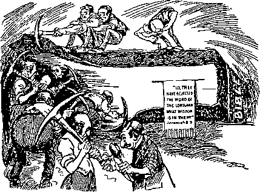DESTRUCTIVE CRITICISM OF THEBIBLE
THE WATCH TOWER
---AND---
HERALD OF CHRIST’S PRESENCE
Many of the comments foregoing are extracts from our twice-a-month journal The Watch Tower, as explained on page 3 of this volume.
The journal carries no advertisements and is in every way loyal to the Lord and his Word. It holds fearlessly to the value of the death of Jesus as the only basis for reconciliation between God and his creatures of Adam’s family.
Twice a month it reaches approximately 75,000 of the most earnest Christian readers in all parts of the world in every continent. Its unsectarian treatment of the International Sunday School Lessons causes it to be greatly sought after by advanced Sunday School teachers.
The price, One Dollar per year, is still less to all unable to pay, for to them it is supplied free for the annual request, out of a fund provided for that purpose.
PASTOR RUSSELL’S SERMONS
Just What You Have Hong Wanted
816 pages Handsomely Bound in Dark Green Cloth
Gold Embossed.
Topically arranged with Scriptural Index. Contains all of his most important sermons of the past thirty years, on doctrine and character development—all different.
98C paid for Edition.
Full Leather, $1.50 postpaid.
Address:
Watch Tower Bible & Tract Society 13-17 Hicks St., Brooklyn, N. Y.
Pastor Russell’s STUDIES IN THE SCRIPTURES
NOW YOURS FOR A TRIFLE 9,000,000 Copies in Circulation
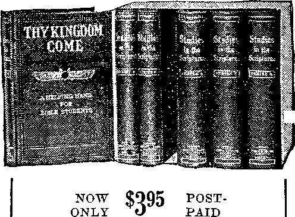<■
For the six books in embossed cloth binding—over 3,000 pages—together with 1 year’s subscription to THE WATCH TOWER, semimonthly. Address:
Watch Tower Bible & Tract Society 13-17 Hicks St., Brooklyn, N. Y.
200
Words in black face are not parts of text. ^Acclamations and proclamations are in Italic.